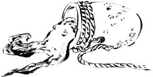
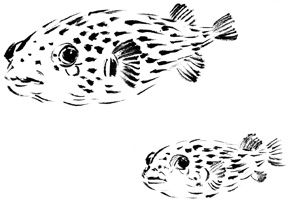
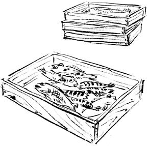
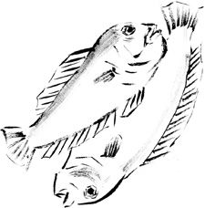
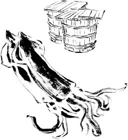
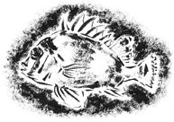

| 『魚屋』主人の"さかなばなし" ウツボはわらう | |
| 西潟 正人 | |
| (2013) | |
『魚 屋 』主人の"さかなばなし"
文・西潟正人
イラスト・吉田 類
都会生活から抜け出したかったのだろう。インドなどをヒッピー旅行して、無一文で帰国したのは、二十代も半ばを過ぎた一九八〇年の冬だった。不動産屋の紹介で、湘南鎌倉の滑川沿いに、九十二歳のお婆ちゃんが暮らす家の二階を間借りした。
海に限らず、水辺は懐かしい思いをかきたててくれる。毎日、滑川に泳ぐ鯉を見つめていると、子供のころの釣りがしたくなった。安い釣り竿に簡単な仕掛けを結ぶ仕草は、少年時代から進歩しているはずもなく、投げ入れたあとの躍るような心境も、あのころのままだ。ヒイラギの強い引きに心をときめかせ、シロギスの輝きに目を見張った二十七歳。
ぼくはなりふりかまわず、とにかく水辺に帰ってきた。
素人釣りを見かねた友人に、一人の釣り人を紹介されたのがきっかけだった。彼はカントリー音楽と、タバコと、缶コーヒーをこよなく愛する、クロダイ釣り師だった。以来ぼくは彼を師匠として、立ち入り禁止だった葉山・鐙 摺 漁港の堤防を夜のうちに越えて、毎日のように「生け簀跡」と呼ぶ磯場に立つことになる。
大人になって、少年時代にはあきらめていた魚を釣った衝撃は大きかった。なにを釣るのか、という目的をもって、初めてクロダイを釣った瞬間だ。
前夜に一袋三百五十円の冷凍生サナギを、親しくなった釣り具屋の店横に出しておいてもらう。会社から帰って晩飯をすませると、がまかつの磯あま四号の釣り針に、八アンペアのヒューズを巻いた。シーガーエース一号のハリスは一尋（約一・五メートル）で、重りはなし。ヒューズが重り代わりで、餌のサナギがゆったりと海中に舞う仕掛けだ。おんぼろのホンダライフは、動く釣り道具箱となり、深夜の漁港の灯りに似合っていた。
夜明け前の磯場で一人ごそごそやっていると、嬉しそうな顔をした師匠がやってくる。
「やぁ、潮のざわめきがいいねぇ」
五時の夜明け前後三十分がゴールデンタイムだから、四時を過ぎてやってくると、暗黙裡に遅刻扱いだ。撒き餌用につぶしたサナギは、ジュースの空き缶一個分で足りた。月を逆光に見てハリスを結び、水面から隠れて、まずは一投。ざわざわと潮が動いて、電気浮きはもたもたと磯のへりを滑っていく。
あたりが白み出すと、会話はぴたりと止まる。クロダイには通り道があり、そろそろやってくるころだ。波に遊ばれる浮きは、いきなりは沈まない。あきらかに生き物の意思を匂わせて、瞬間ぴたりと止まって、グーンと引き込む。合わせたら腰を落として竿を立て、ハリスの根擦れにも気をもみながら、ヤツに逃げ場を許さないことだ。
水面に口を開かせたら、勝負あり。玉網を後方から真下に滑らせて、一件落着だ。捕われながらも背ビレをピンと張り、燻し銀に輝くクロダイの姿は、いつ思い出してもかっこいい。
クロダイ釣りに夢中になっていたのは、三年間くらいだろうか。気がつけば釣りから遠ざかり、漁師たちとの魚談義がおもしろくなっていた。
神奈川県逗子市に地魚料理店「魚 屋 」を開店したのは、三十二歳だった。ぼくは、とうとう「魚」を生業にしてしまった。三浦半島の佐島漁港を拠点に、あまり知られていない魚ばかりを仕入れた。捨てられる雑 魚 の中から、もったいないと思う魚を拾ってくることもあった。カタクチイワシもマダイも同じ値段にしたのは、どんな魚も価値を同じにしたかったからだ。
魚になにかを感じるときがある。もの言いたげな視線に気づくときだ。「魚屋」の魚料理に飾りっ気がなく、揚げ物もしなかったのは、魚の気持ちに反するような気がしたからだ。魚には個性があり主張がある。おこがましいと言われそうだが、そんな「魚の言い分」を代弁したつもりが、本書である。
本書の魚の標準和名は、『日本産魚類検索・全種の同定 第二版』中坊徹次編（東海大学出版会）に準じています。
子供のころに、よく釣った。新潟ではアブラメと呼んで、油をぬったようなぬらりとした目が、名前どおりで感心したものだ。本名をアイナメと言い、料理屋で高級魚と知ってから、ぼくにとってアブラメは遠い記憶の魚になってしまった。
釣り餌は、自給自足が当たり前だった。早朝の潮が引いたころを見計らって、スコップを手に浜へ走る。砂浜ではなく、少し汚れたような泥浜がいい。小さな穴を見つけたら、スコップを勢いよく差し込む。海のミミズといったような砂イソメは、異変に気づくと一瞬のうちに砂中奥深くへ潜ってしまうからだ。
採り集めた砂イソメは、新聞紙の上で塩まみれにして、学校へ走って行く。家に帰るころには水分が出て、新聞紙はずぶ濡れになっている。さらに塩をして瓶詰めにする。保存中に溜まった水は黒茶色をして、ふたを開けたときの臭いの臭くないの......。母は相当に嫌っていたから、学校に行っている間にも捨てられているのではないかと気が気ではない。隠し場所は縁の下、そこしかなかった。
アイナメの仲間にはクジメもいる。見分けがつかないほど似ているので、どちらもアブラメで通用した。浮き袋を持たず、アジのように中層を回遊することができない。子供の釣りでは仕掛けを底に投げ入れたまま、よそで遊んでいるうちによく掛かる。針を奥まで吞み込んでいるのは、食いついてからよほど時間がたっているからだ。
冬から春先を旬とするのは、産卵期をひかえて太るため。そのころは海藻が育つ時期でもあり、海底から水面まで生い茂るホンダワラの根元などは、アイナメにとって恰好の隠れ場所となる。
成長した雄は縄張りをもち、茶褐色だった体を鮮やかな黄色に変える。婚姻色で雌を誘い、ほかの雄が近づこうものなら嚙みつき合いの喧嘩が始まる。俗説にはこれをアイナメの語源とするようだが、「《アイナメ》とは《愛 な魚 》の意であって、《愛》は愛 ずること・賞美することであり、《な》は《の》と同義語。《め》は魚を表す語であるから、アイナメとは『賞美すべき美味な魚』というのが呼名の語意であると思う」（『魚名考』栄川省造）ともある。
最大は六十センチを超える。さすがに大物は、浅場とはいえもう少し深いところに陣取る。子供が磯遊びで釣るサイズは、せいぜい二十センチ止まりだった。興奮を抑えきれずに家へかけ入ると、母は困った顔を見せたが、晩には煮つけてくれていた。
大人がアブラメに箸をつけることがなかったのは、よほど下魚と見ていたからか。何匹か釣れた日に食べ残すと、翌日には決まって甘辛のつゆが煮こごりになっていた。記憶に残るアブラメの味は、その煮こごりが舌に溶けるときに感じた、自分が釣った魚の、ほのかな体臭だ。
ぼくは縁の下から餌の瓶を持ち出して、ふたを開けたときの匂いを、いまでも思い出す。金属のふたが、塩で錆びた匂いと、砂イソメのタンパク質がすっかりこなれたような妖しさが入り交じって漂う。出雲崎の赤い灯台へ続く自然石の堤防に座り込むと、よく澄んだ海の向こうに粗末な舟屋が連なっていた。
釣り餌の常備は当たり前でも、仲間同士の貸し借りも当然ながらあった。水が出すぎているものや、塩にまみれて乾いているようなものもよくない。学校の勉強はまったくしなかったが、砂イソメの塩漬けは我ながら研究を重ねた。借りた餌で釣っても、なぜか楽しさが半減するもので、せっせと餌を蓄えるようになる。そのうちに、釣りよりも砂イソメ掘りのほうが楽しくなっていく。
塩漬けされた砂イソメの匂いは、アイナメではなく、アブラメに通じる。根掛かりも多かった。でくでくと頭を震わせて釣れてくるアブラメは、いつも海藻と同じ色をしていた。手など洗うことを知らず、塩味のついた指をなめていた。
少年時代に夢中になっていたのは、釣りよりも磯遊びだった。
半ズボンでひざくらいの深さまで海に入り、石をひっくり返すと、全身に海藻をくっつけたような不思議なカニや貝などが潜んでいる。結局は尻までずぶ濡れになっても、飽きることがない。水の中の、未知の世界に興奮していた。
魚が逃げていくと、その速さにびっくりし、とぐろを巻いたギンポがじっとしていてもギョッとしたものだ。ギンポはピンポン玉くらいの黄色い卵塊を抱いていて、指で触ってもなかなか離れようとしない。
春のお彼岸を過ぎた、日中のもっとも潮の引くころだった。ギンポを見るたびに、うららかな日射しの中で磯遊びをしていた、少年時代を思い出す。
そのころの新潟では、ギンポを食べる習慣などなかった。高級魚と知ったのは大人になってからで、忘れもしない、東京・渋谷の天ぷら屋だ。都会人はよほど天ぷらが好きとみえ、立派な店構えのカウンター席は、客でいっぱいだった。
寿司屋のような注文の仕方で、エビだアナゴだのと声が飛び交う。ひときわ得意そうな声が、ギンポだった。板書きの品書きを、なにげなく見上げると、最上級のランク。このときも、ぼくは少年時代の海を思い出していた。
高級魚と知ってから、三浦半島で戯れに竿を出したことがある。心に打算が生じたからか、まったく釣れない。磯場なら、あたりかまわず釣り糸を投げ入れても、よく掛かったはずなのに......。
決まって針を吞み込んでいて、引き抜こうと素手でつかむと、ヌルヌルしているくせに、背ビレの棘がけっこう鋭い。太いドジョウのような魚で、たまに三十センチもある大物が釣れた。大物は腹が黄色くて、子供心にも脂がのっているように見えた。
市場で「ギンポ」として扱われるものは、ギンポとタケギンポ、タウエカジ科のダイナンギンポが大物だ。どちらも日本各地の岩礁域なら普通に見られる。
漁師がギンポを獲るとしたら、ごろごろとした「ごろた石」の沈む浅磯に、専用のカゴを仕掛ける。しかし佐島あたりにそんな漁師はいない。
久しぶりに見たのは卸売市場の魚屋で、天ぷらの種を専門にしていた。
生きているギンポを六匹ほど、安くない値段で買った。ギンポがどんな味か、知りたかったからだ。天ぷらでは油と衣に騙されて、ギンポの味がわからなかった。ぼくが天ぷら屋に行かないのは、天ぷらが嫌いというより、魚の味を、油と衣で消してしまっていると思うからだ。
ギンポを下ろす要領は、アナゴと同じ。エラの固い部分に目打ちを刺し、固定させてから背開きにする。中骨と背ビレを外したら、内臓をしごき取って頭を落とす。天ぷらでは、この状態で衣をつけて油で揚げることになるが、何匹かは皮を引いて刺身にした。
ギンポの白身は透き通るようで、こりこりと締まり、嚙みしめると、意外や甘みもあって味わい深い。難点は、細長いから身があまり取れないこと。引いた皮は竹串に巻いて焼いてみた。ギンポの皮は焼くと厚みを増し、驚くほど旨い。
残った開きは、酒と醬油をぬりながら蒲焼きにした。焼けてくると皮も身も盛り上がってきて、醬油が絡んでくるとたまらない。蒲焼きは一匹で食べ応えがあり、なによりギンポを食べているという遊び心が、童心に返ったようで嬉しくなる。
ウナギのように蒸してから白焼きにし、醬油ダレをぬりながら炭火で焼いたら、もっと旨いのだろう。そこまでしなかったのは、磯のギンポに、気取りは似合わないと思ったからだ。
ネズッポは新潟の海にもいて、よく釣ったはずだが、食べた記憶はない。家に持ち帰っても、捨てられていたのだろうか。
海釣りを始めた小学生のころ、魚のランク分けなどは素早く覚えていった。子供が釣って喜んでいるのに、大人がその魚をバカにする口調は独特なものだ。少年の心は敏感だから、世間が嫌う魚はすぐに覚えてしまう。そしてまた人前で、得意になって同じ魚を軽蔑し始める。意味もなく嫌われていた魚には、ネズッポと、新潟ではグズと呼んでいたハゼ科のドロメもあった。
関東ではメゴチ、関西でもガッチョやテンコチのほうがとおりがいい。これらはみなネズッポ類とされ、なかでもネズミゴチはどこにもいて数が多い。コチとは名ばかりの、ネズッポ科ネズミゴチである。
浅い砂地では目玉が飛び出ているハゼ類がよく目立ち、釣り餌に近寄ってきょろきょろしていると、ネズッポは素早く横から食いついてくる。魚体は砂地に擬態して、動かなければ見分けがつかない。ネズッポが釣れてしまうと、子供心に嫌な気分になった。
押しつぶされたような細長い体形と強いぬめり、エラぶたの鋭い棘がネズッポ類に共通する。危険なゴンズイなどをつかむ道具をメゴチばさみというように、毒棘こそないものの厄介な魚がネズッポ類でもある。
見ようによっては愛嬌があり、遠浅の砂地ならどこにでもいるが、一匹だけ謀反者がいる。同じ容姿でありながら、強烈な悪臭を発するヤリヌメリだ。こいつに出会ったら、海にお帰り願うしかない。
ヤリヌメリ以外のネズッポ類は旨い魚だ。料亭気取りの天ぷら屋では、けっこうな値段で大手を振っている。頭部と長い尾を取ると胴身はいくらもない。二十センチもあれば市場に流通するサイズとなる。
下ろし方は、他の魚と少し違う。尾の方向から背ビレの際を切り進み、後頭部で首骨を落とし、腹側に返したら背骨を包丁で押さえて、頭をつけたまま皮を尾の方向へ引き剝がす。この技を初めて見たときの衝撃は大きかった。漁師がまな板に向かって、なにをしているのかと思った。ぬるぬるとしたネズッポは、調理が面倒なことも嫌われる一因だが、目にも止まらぬ早業で片づけている。
「百本あったってぇ、わけねぇよぉ」
三枚に下ろして皮を引いて......などと、型どおりの考えが恥ずかしく思えた。面倒がられたが、一回だけ包丁を借りて技を覚えた。背ビレを皮ごと切り進むことが要点で、慣れると確かに仕事は早い。ネズッポは厄介そうな姿をしていても、簡単に下ろせる魚だった。
あとは中骨に沿って松葉型に開く。ぼくはこの状態で刺身で食べることがある。どんなものかと試食したのがきっかけで、ネズッポの刺身は意外や上品だった。身の締まりは申し分ない。旨みには若干頼りなさを感じる。そこがまたいいのかもしれない。薄い削ぎ切りにはせず、松葉型のまま、ワサビ醬油をつけて食べる。大小取り混ぜて五、六匹もあれば、即席でできてしまう独酌の肴だ。
横浜市の子安浜付近で、昼から暖簾を出している小料理屋に入った。江戸前の雑 魚 を、飾ることなく出す店で、「メゴチの煮つけ」には、深く感動するものがあった。姿のまま煮つけられた六匹のネズッポは、甘辛の醬油色だ。ひと皿が六百円だった。
「昔は付近の漁師がよくご飯を食べに来てネ、あの人たちは濃い味じゃないと承知しないのヨ」
なんて浴衣姿のオバちゃんの話もよかった。
少年時を過ごした新潟の出雲崎では、メバルのような魚ならハチメと呼んでいた。漁港の赤い灯台へ続く堤防には、大きな自然石が所々積まれていたから、子供が入り込むすき間などいくつもあった。中に入ると隠れ家のようで楽しかったが、足もとの暗い海は、複雑に入りくみながら海の底へ続いていると思うと、恐ろしさもあった。
穴釣りをする絶好のポイントで、餌を穴の途中まで落としたら、少し引き上げて上下に動かす。ハチメは餌が動いていないと、食いつかないのだ。
当たりは強烈だった。ぐんぐんぐんっ、でくでくでくっ。釣り上げると背ビレをピンと張って大きく見える。けれど勇んで家に帰るころには、シュンとして見る影もない。子供の釣りでは、マコガレイとともに自慢のできる魚だった。
メバルには、忘れ得ぬ思い出が多くある。シュノーケリング（素潜り）にはまっていたころ、夜の海が大好きだった。水中ライトを岩肌にかざして、息を潜めている動物を探したり、その向こうに根を見つければ、アザラシのような泳ぎで渡っていく。根には海藻が長く伸びていて、その先っぽより少し高い位置にメバルが、やや上向きの姿勢で静止していることがよくあった。
自宅の水槽で、熱帯魚のシクリッドという種を飼っていた。本命のブラックアロワナが、突然水槽から飛び出して死んでしまったからだが......。夜の水中でメバルを見たとき、ぼくはシクリッドかと思った。考えてみれば、彼らはいつも、自分より上層に泳ぐ魚をねらっているのだ。
メバルは魚を食べる魚で、フィッシュイーターと呼ばれ、かなり貪欲に獲物をねらう。釣り船でも夜は、生きたカタクチイワシを餌にして、沈み根の上あたりを泳がすようにする。おもしろい釣り方で、メバルが近づいてくるとイワシが逃げようとする振動まで手もとに伝わってくる。おとりの魚には申し訳ないが、来たな、と思うと間髪を入れずに、ガツン！とヤツはくるのだ。
メバルはその大きな目から「目張」と書かれ、大寒のころを旬として、やがてくる春を予感させるのだろう、「春告魚」と粋な名もある。沿岸のやや深場の磯ならどこにでもいそうだが、晴天下で釣れることはまずない。釣り船だって「夜メバル」の看板を掲げているほど、メバルは暗がりの好きな夜行性の魚だ。
仲間のトゴットメバルやウスメバルは、沖合で獲れることが多いことから「沖メバル」の名で流通することもある。釣り人にも馴染みのある沿岸タイプのメバルは、二〇〇八年の魚類学会で三種に分けられた。色の違いでアカメバル、クロメバル、シロメバルになった。それぞれの味の違いは、何度と食べ比べたが、わかるものではない。
メバルは昔からおいしい魚で知られ、庶民の惣菜魚だった。磯の刺し網でも捕獲されるから、値段も一般庶民的だった。母などは、メバルは煮つけ魚、と頑固に決めつけていたから、子供のころは甘辛の煮つけの味しか知らない。
沖メバルはまだしも、沿岸のメバルは高級魚になった。刺身のおいしさに気づいた料理屋が、扱うようになってきたからだ。身はよく締まって嫌みがなく、刺身は確かに上品である。いまでは十五センチものメバルを家庭で煮つけにできるのは、釣り人くらいではないだろうか。
夜釣りの堤防で、大きなクロメバルを釣った。二月のころで、メバルは抱卵していて、腹はぱんぱんに張っていた。真っ黒い目は丸く見開き、腹のあたりは突っ張って黒金色に輝いている。そりゃあもう、旨かった。
三浦半島を拠点に魚料理を生業としていながら、長い間ウツボを食べなかったのは不覚だった。関東では漁港に水揚げされることはなく、魚屋に並ぶこともない。
紀伊半島の海岸線を旅しているときに、「鱓 有ります」の張り紙を見つけた。魚屋というより乾物屋で、重いガラス戸を引くと、お婆ちゃんが、
「今日入荷しましたぁ」
と声をかけてくる。ウツボは干物に開かれて、冷凍庫に入っていた。値段を聞いて驚いた。一キロ三千円！ 大きなウツボは、二キロもある。
捕鯨の町で知られる和歌山県の太地でも、ウツボが日常的に食べられている。スーパーにも売っていて、干物を焼いて刻んだものが小袋に入っている。おやつ代わりか、酒の肴か。これも安くはなかった。車を運転しながらつまんでいても、
「そんなに旨いかぁ？」
独り言だけが連発する。
ウツボは毒こそないものの、太いヘビのような魚だ。怖いもの知らずの肉体派である。武器は、鋭い牙と強靱な顎 の力。嚙みつかれたら、人間だってたまったものではない。見さかいなく相手を攻撃する短絡さが、ウツボの怖さだ。仲間には着飾ったようなトラウツボもおり、獰猛な形相はどれもギャングスターなみだ。
ウツボが嫌われるのは、身近にいるせいもある。磯でメジナなどを釣っていると、足もとにこぼれた撒き餌に誘われて、岩のすき間から頭をのぞかせることがある。嗅覚をたよりに獲物を探す姿はかなり不気味だ。
旅から帰って、ますますウツボのことが気にかかっていた。三浦半島では見向きもされないし、漁師は、「頭をぶったたいて捨ててしまう」なんて勇ましいことを言っている。
「ナダ（ウツボ）かおぉ？ あんなモン食ってンのかぁ、ケッ！」
ケッ！なんて言われながらも、沿岸の延縄漁船に同乗させてもらった。岩場の周辺で掛かるとは本当で、漁師は船に引き揚げると、太い棒で力いっぱい頭を何度もたたく。それでも恐ろしい形相で牙をむく一本を、なんとか水氷に締めて運んできた。
地魚料理店「魚 屋 」の狭い厨房のまな板に、長さ八十センチもある太いウツボを、頭を右にして横たえる。なぜ頭が右なのか。右下に置いたゴミ箱に、頭を切り落としたらそのまま捨てようと思ったからだ。
頭蓋骨が砕けるほど、たたかれているはずだった。死んでいるようでも、半開きの口はいまにも嚙みつきそうで恐ろしい。どのあたりが首かもわからぬまま包丁を入れると、目が確かに動いた。頭部をなんとか切り離すと、体のわりに小さな心臓が脈打っていた。
恐ろしさは気味悪さに変わり、包丁でよけるように、頭部をゴミ箱へ落とした。ところが、顔をこちらに向けた恰好になると、今度はしっかりぼくを見つめて大口を開けた。牙をむいた頭が、飛びかかってくるようだった。
長い胴体を筒切りにした甘辛煮は評判がよかった。財布に加工するという皮も、箸で切れるほど柔らかくなり、ぺたぺたするほどのゼラチン質がたまらない。身には固い骨が不規則に入り込んでいるが、固いだけに取り出しやすい。干物が細かく刻んであったのは、小骨の多いハモ料理をまねて骨切りをしたのだろう。
骨をよけるように削り取った刺身は淡白で、不気味さを目の当たりにしたあとでは拍子抜けがする。ほんのりとした甘さに、ウツボはタコ好きだったと、意味もなく思い出してしまう。ゴミ箱をのぞくと、口を半開きにしたままのウツボが笑っているようにも見える。その顔は満足げでもあり、得意げでもあった。
大変な経験だったが、ウツボのことを少し知ることができた。ウツボは南方系なので、北日本にはいない。四国や紀伊半島では当たり前のように干物にし、伊豆七島周辺では名物の「くさや」にもする。ウツボの食習慣は、地方色の濃い食文化なのである。
陽春のころ、ホンダワラが生い茂る磯に、腰まで立ち入って竿を出す光景があった。竿がしなり、手のひらほどの魚が空中に躍る。春の風物詩でもあったウミタナゴの「立ち込み釣り」だが、いまは見ることがなくなった。
タナゴは、用水路などの淡水に多くいる小魚で、ウミタナゴは似たような平たい体型から「海タナゴ」と呼ばれる。タナゴの古名は「タヒラ・タヒラコで、語意は平魚・掌魚の意である」（『魚名考』栄川省造）とあり、言われてみれば体型が似ていなくもない。
卵胎生で、卵を胎内で孵化させて稚魚を出産する。卵胎生の魚はカサゴやメバルなどけっこう多いが、こちらは稚魚が微細で膨大な数のために、注意して見ないとわからない。同じ卵胎生でもウミタナゴが産み出す稚魚は、三センチ以上もあり、その数も十数匹と、少子精鋭を図っている。釣り上げたとたん、ぼろぼろと腹からこぼれた稚魚が泳ぎ出すことも珍しくない。不思議な魚である。
ウミタナゴも釣り人気のわりには、魚屋に並ぶと下魚扱いされてしまう。曰く、磯臭い、水っぽい、骨が固い......。
煮魚は薄味にしたほうが魚本来の味を損なわない。ただウミタナゴだけはやや甘辛煮にしてしまう。ウロコを取ったら、腹は開かずにそのまま煮る。普段は酒と醬油の味つけだが、最初に味醂を加える。鍋底に皮がくっつかないように、笹の葉でも敷けば完璧だ。甘辛に煮るのは郷愁もあり、内臓あたりに潜むちょっとした苦みが甘辛に絡むと、ウミタナゴを食べていると実感できるのだ。
残酷と言われそうだが、腹を丁寧に開いて子袋を取り出し、稚魚を集めて塩辛にすることもある。透き通った稚魚を丁寧に水洗いして、しばらく塩にしたら、そのまま酒に漬け込む。小瓶にしっかりふたをして三日、我慢も限界だろう。用意するのはとっておきの吟醸酒だ。
三浦半島では、漁師網で獲れてもあまり歓迎されない。十五センチ以上あれば雑多な魚と一緒に水揚げされる。十センチに満たなければ見向きもされない。安く仕入れた魚屋は、鮮魚で売れなければ開いて干物にしている。ウミタナゴは地元で商売するには難しい魚だ。
ウミタナゴによく似た仲間に、やや小ぶりのオキタナゴがいる。名のとおり沿岸の沖合に大きな群れをなすから、イワシをねらった巻き網にごっそりと入ることがある。こちらの扱いはオキヒイラギ同様に悲惨であり、捨てられるしかない。
長井漁港の日だまりに釣り人たちがいて、近づいてみるとウミタナゴを釣っていた。柔軟な竿は、なにが釣れたかと思うほど大きくしなって、八センチほどのウミタナゴがおちょぼ口で上がってくる。
穏やかな老人たちで、昔は海に立ち込んで釣ったものだと、静かに笑う。から揚げにして南蛮漬けにでもするのかと思えば、「刺身で食うんだ」と急に声が高い。えっ、刺身？
「ウミタナゴは刺身で食うだべよぉ、なぁ？」
「おぉ、刺身だべや」
しまった。ウミタナゴを刺身で食べたことがなかった。考えもしなかったのは、ウミタナゴに固定概念を抱いていたからだ。
反省と悔しさでウミタナゴを探し始めたら、どこにも見つからないのだ。
「いっぴきじょっから」
名前を聞いただけでは、なんのことかわからない。現物を見せられたとき、驚いて声も出なかった。これって、食いもの！？
薄汚れた一升瓶の中に、カタクチイワシが半ば溶けたような姿で詰まっている。頭も内臓も取らない、一匹丸ごとの塩辛で、「一匹塩辛」ということらしい。
魚の塩漬けと言ってしまえばそれまでだが、漁師が作ると「熟れ方」が違う。
三浦半島の佐島は、カツオ漁の生き餌を供給する基地だ。黒潮にのって北上する群れを追いかけて、四国地方からも船団がやってくる。一本釣りは、生き餌のカタクチイワシがなければ漁にならない。群れに追いつくと、海面に向かって一斉に放水し、ときおり生き餌を投げ入れる。好物のカタクチイワシが、逃げまどっているかのように見せかけるためだ。カツオは狂喜して、疑似餌であろうが空針であろうが食いついてしまう。
カタクチイワシも、生き餌となれば、素人には信じられないほど高価になる。巻き網で捕獲した群れを生け簀に移し、ゆっくりと内湾まで運んでくる。群れが安定して同じ方向に泳ぎ出すまでに、半数は死んでしまう、と漁師は言う。生け簀の群れにバケツを突っ込んで、水もたっぷりと入ったひとすくいが、四千円もしたことがあった。
死んでしまえば、価値はタダ同然。漁師はそれらを拾って塩にまぶし、あらかた水が出ると塩を洗わずに、一匹ずつ一升瓶の口から落としていく。船倉に転がせて二、三週間もすると、いい塩梅にこなれて、その名も「いっぴきじょっから」。食いしん坊ならずとも、酒吞みは興味津々。早く現物を拝み、味わってみたかった。
「船ぇ転がしておくだぁ？ ガラス瓶じゃ、おっかなくてしゃぁねぇお。昔のカツオ船はやってたみてぇだけんどなぁ。オラぁあたりは陸で、たまに揺さぶってやんだぁお」
一升瓶は漁師小屋の暗がりにあって、ゴトンと目の前に置かれた。二十年も前のことだ。ガラス瓶は焼酎などに使われる透明なもので、熟れたカタクチイワシは、半ば醬油色の液体になって沈んでいる。
針金の先を曲げただけの、簡単な専用道具を探し出すと、一升瓶の口からとろりとしたカタクチイワシを、一匹ずつすくい上げている。一見して食指が動くようなものではない。溶けて腐ったような魚だ。発酵しているのかと、鼻を近づけても匂いはない。平然とした漁師の顔がそこになければ、口に入れようなどとは思わない。
嬉しそうな顔をしながら、いつ洗ったのかわからない湯飲み茶碗を二つ並べると、冷や酒がたっぷりと注がれた。空きっ腹の胃壁に、小気味よい刺激が染み入っていく......と、目の前に出された一匹塩辛に、手が伸びていた。
言われるがままに、頭から嚙みしめた。一瞬、しょっぱいと思ったら、そうでもない。想像していた伊豆七島の名物、「くさや」のような匂いもない。骨っぽい部分を口の中で絞るように嚙みしめて、最後にエキスが広がったときに、「旨い！」と叫んでいた。一匹の魚が、まだ「生」を主張している、と思うほど力強い味だった。
絞りきった小骨を口から出して、冷や酒を喉に流した。周囲には漁網や漁具がうずたかく積まれていても、乱雑ではない。海砂が乾いて固まったような、どっしりとした空気が漂っている。小皿の一匹塩辛がなくなると、何度となく一升瓶の口から針金を差し込んだ。溶けたような小魚を釣り上げては、酒を吞んだ。
「へぇ、やるヤツもいなくなったぁお。いっぴきじょっから、なんつったってぇお、若ぇ漁師は知らねぇや。でぇてぉ、酒ぇ吞まんくなったぁお」
佐島の沖合二キロほどに、大 謀 網 と呼ぶ大型定置網がある。網底で死んだ小魚などはゴミ同然。甲板にこぼれ落ちたカタクチイワシだって、拾い集める漁師はいない。放水できれいさっぱり洗い流して、彼らは一日の仕事を終える。
サヨリのおいしさには、ほかの魚と比べられないものがある。赤身でもなく白身でもなく、かといって寿司屋でいう、光り物でもない。さほど脂がのっているわけでもない青ガラスのような身は、包丁で切断されると、切り身というよりは「かけら」を連想させる。奥歯で嚙んでみれば、妖しい芳香を放ちながら砕け散るようだ。
サヨリは銀白色の細い体型から、たおやかな女性に喩えられる。だが日陰に咲く花のような美しさとは対照的に、腹の内側が真っ黒になっているため、「腹黒い女」の代名詞になってしまった。
下顎 が長く伸びて、上顎は短く、表層を泳ぐ。全長四十センチにもなるが、湾内に回遊してくる群れは二十センチもあればいいサイズだ。釣り人には鉛筆サイズと揶揄される。ところが三十センチを超えるころから、サヨリは高級魚になり、町の魚屋にも並ばない。料理屋でしか見られない、高嶺の花だ。
ぼくは昔、サヨリのどこが旨いのかわからなかった。わからないまま魚料理を生業とするようになり、佐島の漁港で揚がったばかりのサヨリを見つめていた。長く伸びたくちばしの先端に口紅を塗ったような、四十センチはあろう妖艶な大物だ。当時で一キロ当たり七千円と聞いて、その超高級さが不思議だった。「たかがサヨリで」と思いながら、一匹だけ仕入れてしまったのは、自分が食べてみたかったからだ。
身を下ろしながら気がついた。いままで食べていたサヨリとは別物だったのだ。サヨリが、こんなに甘い魚だとは知らなかった。ところが残した片身を、翌日に刺身にすると、記憶にあるサヨリの味になっていた。ガラスのような鋭さは消え、ロウソクを食べているような空しさだけが口に残る。サヨリこそ、鮮度が命の魚だった。
横浜の山下公園で、不思議な釣りを眺めていたのは、三十年前になる。いい歳をした大人たちが、楽しそうに釣りをしていた。見たことのない仕掛けで、ねらっている魚がなにかは、釣れるまで待たねばならない。ときおり撒き餌をしていた男が、「来た来たぁ」と嬉しそうに叫ぶと、タバコをふかしていた仲間たちも、「どれどれぇ」と、そのあたりに仕掛けを投げ入れる。
サヨリの群れは周期的に巡ってくるようで、針掛かりすると、棒切れのように寝ていた浮きが、ぴょんと立つ。水面の上層を泳ぐので、浮きから針までのタナ（層）は三十センチしかない。そこがまた合わせやすいのだろうと思っても、見ているとなかなかじれったい釣りだ。浮きは立とうと微動するだけで、力なく倒れてしまう。うまく合わせると、おちょぼ口のサヨリが、きらきらと輝きながら釣れてくるのだった。
大サヨリは高級魚でも、鉛筆サイズは安い。よく丸干しで売られている。ぼくは開いての一夜干しが好きだ。干物も鮮度が命で、腹に内臓の黄ばみが滲んでいたら、煮ても焼いてもサヨリの味などしない。新鮮で透明感が残る生乾きこそ、かるく炙って真っ白になる。開いた身側に少し焦げ目がつくくらいに焼き上げて、頭は手でむしり取る。中骨に張り付いた薄い身はキツネ色に焼けていて、べろりと剝がして食う醍醐味は、サヨリでなくてもたまらない。骨ごと丸かじりといけば、コップ酒だって似合ってしまう。
刺身には妖しげな色香をどうしても感じてしまうが、干して焼いてしまうと、色気もなにもあったものではない。だが、味わいの「儚 さ」は、やっぱりサヨリだ。
漁師は、サヨリを巻き網で捕獲する。現場では「ぎょたん」と呼ばれる魚群探知機で、表層を泳ぐ群れを見つけると、遠巻きに漁網で囲ってから絞っていく。春に富山湾の大型定置網漁船に乗った。遠くに見える二艘の漁船を指さして、漁師が、「サヨリ船だっちゃ」と教えてくれた。
湘南の海で悪友に誘われて素潜りを覚えたころ、ぼくはそのおもしろさに夢中になっていた。昼も夜も、台風が近づいていても、海に入らないと寝つけないほどだった。
真冬の夜、雪が降っていても、磯で裸になり、厚さ五ミリのウエットスーツの内側にベビーパウダーを振りかけ、着終えたら八キロのウエイトを腰につける。ライトをつけて静かに海へと沈んでいくと、そこはもう別世界。陸のことなんか、すっかり忘れてしまうのだ。
悪友に誘われたとはいえ、サザエやアワビをねらう「海賊」ではない。遠くにクロダイが泳いでいたり、ネンブツダイや小エビの大群に囲まれたときなど、シュノーケルをくわえながらも感嘆の声が出るものだ。波にもまれながら体を逆さまにして、磯ガネで岩にしがみつくようにしてすき間の奥をのぞき込むと、大マダコが食事中だったりする。こんな驚きは、声にならない。
海の中にも春夏秋冬はあり、春はやっぱり萌えるようだ。水面に近い磯場はきらきらと明るく輝いて、孵化したばかりの稚魚が群れていたりする。
水深がせいぜい一メートルくらいでは立派な魚を見ることはないが、突然マダコが通り過ぎることがある。春は産卵期だから、そのあとをもう一匹が追いかけることもよくあった。磯ガネでちょっかいを出すと、墨をブッとひと吹きして、目にも止まらぬ速さで消えてしまう。ぼくは煙幕に包まれて、楽しくて仕方がない。
馴染みのあるマダコは、本州の三陸以南にしか生息しない。北国ではマダコよりも大型のミズダコやヤナギダコがいて、食紅に染まった「酢だこ」になる。
タコ漁でタコ壺を使うのは、狭い穴を好むタコの習性を逆手に取ったもので、タコは意外やきれい好きだ。貝殻が付着したような汚れた壺には、入ってくれない。漁師は壺を海に沈めて引き揚げる作業よりも、陸で壺を掃除するのに手間をかける。
フジツボなどが付着して、首根っこを荒縄で縛られた素焼きの壺も風情があるが、近年はコンクリート製ふた付きのネズミ捕りのような箱形や、中に餌を下げた折りたたみ式の網カゴが主流になっている。
壺を焼く職人がいなくなったと、三重県・答志島のタコ漁師が、タコ壺の掃除をしながらつぶやいていた。山と積まれた素焼きのタコ壺は、タコを獲るためのものではなかった。タコに棲まわせ、子孫を増やしてもらうために海へ沈めるのだという。マダコの集合住宅だった。
マダコの雌は岩棚の奥に、藤の花房にも似た卵を産みつける。「海藤花」と呼ばれて高級珍味だ。母ダコは一カ月ほど卵の世話をして、孵化を見送ると約二年の生涯を終える。雄は右の第四腕が交接腕であり、先端がへら状になって吸盤がない。また吸盤が大きく、平たくなることでも、雌との見分けができる。
マダコは明石や下津井、佐島など、とかく産地で味が競われる。これらのすべては高級品の「地ダコ」で、スーパーなどに並ぶタコのほとんどは「輸入ダコ」だ。アフリカ西岸のトロール漁（底引き漁）で漁獲され、年間約十万トンが輸入されている。地ダコの五倍も多く市場に流通しているのだ。
福島県いわき市の「かねいし商店」は日本有数のタコ加工場で、毎日数万匹のタコが加工され、築地市場などへ出荷される。冷凍輸入されたタコのブロックを見れば、地ダコの数百匹など数のうちには入らない。地ダコは機械でもみ洗いされてから大釜で茹でられる。輸入ダコには、そんな手間をかけてはいられないから、高温の蒸気で蒸し上げる。地ダコは「茹でダコ」、輸入ダコは「蒸しダコ」である。一般市場で生ダコを見かけないのは、面倒な料理を業者任せにしているからだ。

相模湾では大物は見かけない。幼魚や若魚がたまに漁港に揚がる。幼魚が獲れてしまうのは忍びないが、横帯が薄れかけてきたような若魚を見つけると、旨い魚だけに嬉しくなってしまう。だがマハタは、旨いだけに高級魚に「超」がつく。
二、三キロもあれば身はたっぷりとして、甘く旨い刺身も食べ応えがある。頭部などを煮つけにしたら、細かな骨までしゃぶり尽くしてしまうほどだ。中骨で出汁を取れば、きめ細かな脂が浮く、素晴らしいスープになるし、ゼラチン質の多い皮からは、上等な煮こごりができる。マハタは、どこも無駄にならない魚だ。
地魚料理店「魚 屋 」で、後先を考えずに一度だけ仕入れた。二キロを超えたばかりの若魚だった。旨い魚は、包丁を入れた瞬間から、「コイツはただ者じゃない」と思わせるものだ。初めて食べたマハタだったが、すべての旨さに納得した。
マハタは一メートルを超えるほどの大魚だ。仲間のクエと混同されることがあり、釣り人はモロコやアラとも呼ぶから、市場はさらに混乱している。四、五十センチの若魚には、七本ほどの横帯がくっきりと浮かぶ。漁獲されるマハタは若魚がほとんどで、大きなマハタは、「幻の......」と形容されるほど、希少になっている。
マハタも若いうちは沿岸にいて、横帯が消えるころになると、沖合の深い根まわりを根城とする。ダイバーや漁師などがたまに遭遇するから、「○○根の主」などと呼ばれる。最大では「東京都の恩馳島沖で釣れた魚拓寸百九十二・四センチ、重量百十四キロ」（『遊遊さかな大図鑑』小西英人）なんて凄いのもある。釣り人はマハタの老成魚を、尊称でカンナギとも呼ぶ。
紀伊半島先端に位置する串本で、潮岬沖で釣れたばかりの十キロを超えるマハタを食べた。寿司屋にいたら、地元漁師が突然持ち込んできたのだ。全長八十センチ。広く開け放たれた厨房を前にしたカウンター席だったから、下ごしらえから始まる一部始終は、予期せぬショータイムとなった。
刺身で食い、握りでも食った。たっぷりとした豊かな食感は、若いマハタとは別物だった。魚は大きすぎると、とかく味が落ちるものだが、老成したマハタでも、また違う味わいを見せてくれるに違いない。
板前は、旅の魚好きに、戯れだったのだろう、背身を削って一個だけ握った寿司のとなりに、水洗いしたマハタの心臓を刺身で添えた。
よく見れば一心房一心室の魚類の心臓、大きさが一センチほどしかない。大きな体をして、信じられないほどの蚤 の心臓だった。巨体となったマハタは誰に追われることなく、急ぐこともなく、ただ悠然と根城を回遊している。そんな姿が、彷彿とさせられた。マハタの小さな心臓を見つめて、ゆっくりとした生き方が羨ましく思えた。
南方系に多いハタ科の仲間にあって、マハタは北海道南部にまで生息している。老成するほど単独でいることが多く、仲間と群れることはない。沖合の根回りは潮流が激しく、漁網を入れるには困難なところだ。漁師が捕えるには、潜ってモリで突くか、釣るしかない。
願わくば、マハタに限らず、何十年も生きている魚はそっとしておいてやりたいと思う。人生ならぬ、魚の一生をまっとうしてもらいたい。
そんな魚の、手のひらに乗るような幼魚を漁港で見るのはつらい。定置網で、雑多の小魚と一緒に水揚げされるのだ。いまの漁業現場ではどうすることもできず、残念だなあと思う。漁網の形をした大魚の口に食べられたと、あきらめるしかない。
沖縄の石川漁港は、好きな漁港の一つだ。小さな漁港でも、沖合の定置網から様々な南の魚が水揚げされる。時間を忘れて見物したあとは、港内にある「石川市漁業協同組合婦人部直売所・トミとウメ」へ行く。なんのことはない、トミとウメという二人の婆ちゃんが始めた食堂で「墨汁定食」を食べるためだ。
その日は注文すると、となりの漁協からウミガメのような大きいコブシメを、二人がかりで運んできた。コブシメは石灰質の甲（イカの舟）をもつコウイカの仲間で、身の厚さは五センチ、甲長だけでも五十センチにもなる特大級だ。
東京あたりからやってきた者には、それがイカとは信じられないだろう。厨房では魚料理というより、エイリアンの解体でもしているような、異様な光景だった。
「あらぁ、やっちゃったよぉ、失敗だよぉ」
どうやら墨袋を破ってしまったらしい。二人とも腕まで真っ黒にして、コブシメと格闘している。
やがて出てきた墨汁は、真っ黒いスープに、緑色のフーチバ（ヨモギの葉）が浮き沈みしていた。白いレンゲを手に、わずかながら勇気を必要とするのは、よそ者の本能というもの。何度食べても、味噌汁を飲むようにはいかない。
ゆっくりとレンゲに口を近づけて、最初はおちょぼ口ですすってしまう。見た目よりも熱々で、想像以上に濃い出汁が効いている。二回、三回とレンゲを運んでいるうちに、口は大胆に開いていき、動かす手も口も止まらない自分に気づく。定食なのに、ご飯やおかずにかまっていられない。口まわりがどうなっているのか、周囲の視線に気づいたら、笑って返すしかないだろう。
コブシメは琉球諸島でクブシミと発音し、語源は「昆布締め」と勘違いしそうだが、広い手のひらを意味する「くぶしみ」にある。名のとおり、触腕先端の手のひら（掌部）は大きく広がる。
コウイカはまた墨イカとも呼ばれ、墨の黒さは天下一品。同じイカ類でも、ツツイカ目のスルメイカの墨など、足もとにも及ばない。料理をしていてコウイカの墨袋を破ったことがあり、その真っ黒さと、洗っても落ちないしつこさに驚いた。タコ墨は煙幕のように広がって敵をくらまし、イカ墨は粘性が強いために擬態の役割をする......。本から得た知識を、なるほどと実感したものだ。
コブシメの大きな甲を、「こんな物を......」と笑われながらも記念にもらい、帰ってきた。白い輝きは、乾くと艶消しの白墨のようになって、見る影もない。周囲からぱらぱらと崩れ落ちるから、庭に出すと、忘れたころになくなっていた。
背からぬるりと出てきたときの甲は、墨色の中にあって真っ白だった。サーフボードにも似た甲は、水中では浮力調整の役目をして、石灰質とはいえ生きていたのだ。乾いてさらに軽くなった甲を見つめて、子供のころのニワトリ小屋を思い出した。殻がふにゃふにゃの柔らかい卵が産まれると、母はどこからかコウイカの甲をもってきて、小屋の隅にぶら下げていた。
イカ・タコ類のカラストンビは、口球という口の部分にあって、黒い牙のようにも見えるが、じつは顎 のことだ。嚙み合わせの外側が下顎でトンビ、内側の上顎をカラスのくちばしに見立てている。口球の筋肉もカラストンビの名で、干物にされたものが珍味などと書かれて売られている。
コブシメの特大カラストンビも持ち帰ったが、乾燥したら凋 んでしまった。
兵庫県の室津漁港を訪ねたとき、歌うような競り声を背にして、朝市がにぎやかだった。水揚げされた魚を運んでくるのだから、小魚などはどれもぴんぴんと跳ねている。人だかりがアイゴを買っているので驚いていると、十匹ほどのヒイラギも、なんと八百円で売られている。ところ変われば、アイゴもヒイラギも人気魚ではないか。アイゴはバリ、ヒイラギはギラである。
高知ではニロギ料理が有名で、丸干しにしたものを炙り、酢をたっぷりかけて食べる。ヒイラギは内ニロギ、オキヒイラギは沖ニロギと称して、アジの開きのような感覚で食べられている。干して炙って酢に浸せば、小骨や棘まで香ばしく感じられる。薄っぺらいので乾燥させやすく、干せばぬめりも消える。関西でヒイラギが喜んで食べられていると、関東の扱いが気になってくる。
ところが、気になっていたのは漁師も同じだったようだ。
伊豆ではオキヒイラギをエノハといって、串に刺された干物になっていた。エノハは「榎の葉」ということだろう。漁師のオバちゃんたちが、内職でもするように手作業したものが、観光客がそぞろ歩く干物屋に並んでいる。昔からあるものではないとしても、意外な旨さが知れ渡れば、無駄に捨てられることもない。
鎌倉の材木座では、シラス網に入ったオキヒイラギを、お婆ちゃんがタタミイワシを作る木枠に並べていた。木枠は屋根の上にまで広げられて、太陽を燦々と受けている。「タタミヒイラギだ」と笑っていたが、これも近年に始めた新商品なのだろう。「売れるといいねぇ」というと、飲食店からの注文だった。心配無用。オキヒイラギを獲るために漁に出る、なんてこともあるかもしれない。
千葉の保田には漁協が経営する食堂があり、店先の直売所をのぞくと、オキヒイラギの丸干しが山になっている。売り子の威勢がよくて、ザルひと山が五百円だった。
「柊」と書かれ、魚にしては珍しい木偏の名がつく。薄っぺらくて、ぬるぬるした粘液に包まれ、棘が痛い。沿岸でよく見るヒイラギは七、八センチ、沖合にはもっと小さな三、四センチのオキヒイラギがいる。南方系の魚で、沖縄まで行くと、イトヒキヒイラギやセイタカヒイラギなんてのもいた。
小魚は群れる。オキヒイラギの群れの数ときたら半端ではない。イワシの巻き網漁で混獲されることがあり、たいていは投棄される。イワシを水揚げする前に、船倉に浮いているオキヒイラギをすくって捨ててしまう。銀色をした小魚が浮いて、水面が隠れてしまうほどだ。招かざる魚だとしても、惨憺たる光景には言葉を失う。ほかに方法がないのかと思うが、どうなのだろう。
ヒイラギ類は体内に発光細菌を共生させて、夜間にエラぶた付近からリン光を発する。何万匹というオキヒイラギの群れが、夜の海で光のコミュニケーションをしているとしたら、さぞ壮大でにぎやかだろう。
たくさんいる魚だが、関東で魚屋に並ぶことはまずない。やや大型のヒイラギも釣り人に嫌われて、岸壁に捨てられ、干からびた姿など珍しくはない。野良猫が見向きもしないから、「猫またぎ」なんて、子供たちも言う。
釣りをしていてもうるさい外道だが、十センチほどのヒイラギを釣った。暴れると強い粘液がハリスにまで絡んで閉口する。持ち帰って刺身にした。しっかりと締まった白身はとても旨かった。小さなオキヒイラギは、拾ってきて醬油漬けにしたことがある。細かな骨が当たるから、一般に好かれるとは思えないが、プチッと身がつぶれて塩辛いエキスが広がるのはおもしろい。
紀伊半島を旅して、印南漁港近くで宿を取った。漁師民宿のような、旅館「今又」の朝食に出されたアジの開きが忘れられない。十センチほどの小さなマアジが背開きにされて、ふっくらとのけぞっている。一見、月並みな朝定食だが、その腹のあたりをガブリとやって目が覚めてしまった。甘い脂がじゅわっと広がって柔らかく、本当にマアジだろうかと、表に返して見たものだ。
「印南のアジを食べたら、よそのは食べられませんよ」
これまた香り高い味噌汁を運んできた女将が、嬉しそうに言う。ひと言、おいしいねえ、と褒めただけなのに、してやったりの得意顔だ。
旅をしながら、地魚自慢を聞くのは好きだ。とはいえ、特産の魚を自慢するのではなく、全国各地、マアジであることが多いのはどうしてだろう。瀬戸内海の尾道でも、小田原でも、千葉の勝浦でも、「オラがとこが一番」の魚はマアジだった。全国によく知られて、比較されやすいこともあろうが、やっぱり味が違うからだと、ぼくは思う。味だけでなく、土地によっては魚の顔つきも違って見える。
同じマアジでも「沖合を回遊するマアジはクロアジ型と呼ばれ、体が丸くて大きくなる。内湾や沿岸の瀬に定着する群れはキアジ型と呼ばれ、体が平たくて小さい」（『遊遊さかな大図鑑』小西英人）。ならばそのキアジ型にも、生息環境によって違いが発生しても不思議ではない。
味は目に見えないから、自慢話でも嫌みがない。旅人を微笑ましい気分にさせてくれるのは、そんな他愛のなさだ。
アジ、サバ、イワシ、タイなど、よく知られる魚は、数だけでなく、似た仲間も多い。我こそはの代表は、どれも「真」をつけて「本家」を名のる。マアジも「真鰺」で、アジ科はムロアジやヒラマサまで入れると大所帯。特徴は、尾ビレのつけ根から頭部に向かって走る固い稜 鱗 だ。ゼンゴやゼイゴとも言い、稜鱗があればひと目でアジの仲間だとわかる。
七センチくらいの小さなマアジは、関東ではジンタ、さらに小さいと豆アジと呼ぶ。
ジンタは頭を落としてから、丁寧に三枚に下ろす。塩を振って締めたのちに、さらに酢で締める。数が多いと、面倒で根気のいる仕事だが、仕上がったときの旨さには、苦労を忘れさせるものがある。皮をべりっと剝がしての、つまみ食いのつもりが、あれよあれよとなくなっていく。酒を忘れて口を動かしていては、二、三日はもたせようなんて、甘い考えだったと、反省する。
豆アジは孵化したばかりの三センチほど。大きな群れがシラス漁の巻き網で獲れてしまうことがある。シラスのように塩茹でにされ、天日で干されると、これがまたたまらない。煮干しのように乾燥させるのではなく、シラス干しと同じ要領の生干しだ。まだ柔らかい身を嚙みしめると、塩具合がいい塩梅で、生まれたばかりの魚の小骨は、こそばゆいほど、儚 く砕ける。
頭も内臓もそのままに、獲れたばかりの生を醬油に漬け込むこともある。冷蔵庫で一週間ほど寝かせると、醬油の塩分に魚のタンパク質がこなれていくのか、あるいはその逆なのか、やはりいい塩梅になってくる。一匹をつまみ上げて口に入れると、醸されてやや膨らんだ小魚が、プチッと音を立てて奥歯でつぶれる。その瞬間、小魚でありながら野性的な旨みが、口いっぱいに広がるのだ。
ジンタ級のマアジを捕まえて、沖合の生け簀で餌をやっていると、二カ月くらいで十五センチほどになる。活け魚料理屋の水槽で泳いでいるマアジの多くがそれらで、どれも同じように冴えない顔をしている。故郷が生け簀では、かわいそうなマアジたちだと思う。
シンコの酢締めは、文句なしにいい。料理は酢締め以外に考えられず、酢締めされるためにあるような魚だ。寿司屋に行けばまっ先に注文し、仕上げにもう一回だ。小アジやサッパに比べると、身が締まっているのか、しっかりとした皮の歯応えが違うのか。シンコのない寿司は間が抜けているようで、どうもいけない。
成魚は二十センチほどのコノシロで、十～十五センチはコハダ、五～七センチの当歳魚がシンコと呼ばれる。出世魚でも、成長するほど価値が低くなるという、不名誉な魚がコノシロだ。近年ますます高級魚になっているシンコに対して、親のコノシロは下魚扱いである。
シンコを漁港で見つけても、先約がついていることが多い。先約がなければ迷わず、二キロは買ってしまう。小魚だから百匹くらいはある。
柔らかいウロコは乾くと厄介だから、持ち帰ったら休んでいられない。ウロコは包丁でこそげ落とし、頭を落としながら一緒に下腹五ミリを切り捨てる。内臓を取り捨てながらの水洗いは、みんなまとめてやると仕事は早い。三枚下ろしは数が多いから、単調な作業が続く。いつ終わるとも知れない、独りだけの沈黙の時間が流れる。つらいと思ったら、仕事は雑になる。仕上がりの旨さを確信しながら手を動かしていると、無の境地も愉しいものだ。下ろした片身を広い大きなザルに並べ、手塩を振りかけたら一段落だ。
塩が馴染んであらかたの水が出たら、洗って水気を拭き取り、生酢に漬ける。昆布も酒も入れないのは、シンコの味を大切にしたいからだ。六時間ほどで取り出したら、酢を丁寧に拭き取り、まずは一枚を口に放り込む。至福の一時がやってきた。
『江戸前の 味をしんこの 寿司で食い』
こんな粋な句もあり、「しんこは手間で稼ぐ」なんて、商売の訓辞みたいなのもあった。
コノシロについては、まことしやかで珍妙な言い伝えが数多い。たとえば、
〈腹が破れやすいために、切腹魚という〉
〈この城を焼く、につながり縁起でもない〉
〈飢饉のさいに子の身代わり（子の代 ）として焼いた〉
などなど......。
「昔の庶民は高価な米麦は買えず、安価な野菜や魚を主食としてきた。大量にとれ、下魚とされたコノシロも食代わりにされたのであろう。古くは食・食事をケといった......コノシロとはケノシロということであり......」（『魚名考』栄川省造）。
魚名には語源の不明なものも多く、コノシロは語呂合わせで、かわいそうな境遇に置かれてしまったと思う。
コノシロは、無理に酢で締めることはない。三枚に下ろして腹骨を切り取ったら、皮面を下にして二～三ミリの間隔で包丁目を入れる。ハモの骨切りの要領で、皮までは切らない。つぎに皮面に返し、包丁を斜めに入れて薄切りにする。縦と横から骨は切られて、歯応えも絶妙な刺身になる。
塩焼きだって、負けてはいない。丸ごとの皮面を中骨まで、やはり数ミリの間隔で骨切りをする。卵巣も精巣も食べられるので、豪快に丸焼きがいい。コノシロにはニシンにも似た強い脂がのっていて、直火で焼くと流れ出た脂がぼうぼうと燃える。真っ黒になってもその旨さたるや、軟弱な魚の塩焼きなど遠く及ばない。
故郷の新潟ではアカバヨ、またはアカッパヨと言った。ハヨ、ハエ、ハヤは「葉魚」が転訛して、すばしっこい川魚を意味しているのだろう。ウグイの雄は、婚姻色で赤い縦縞をつくるから赤バヨだ。淡水型と降海型があって、仲間のマルタはその名のとおり、丸太のような大物が富山湾の内湾などに多く見られる。
山深く流れる川には、ウグイのほかにアブラハヤや、砂を吹くからスナップキと呼んだヒガイもいて、ヤツメウナギの幼魚が堰堤に吸いついていることもあった。
ぼくは長野県との県境に近い山間に生まれて、小学校の四年まで、海など無縁の生活だった。豪雪地帯の春は遅く、学校の田植え休みと稲刈り休みが過ぎると、もう冬である。短い夏の遊びは、小さな川の水たまりのような場所で、海水浴気分で水浴びをすること。年長の女の子は、浮き輪を持ったり花柄の水着をつけることもあったが、低学年ではみな下着のパンツ一丁だ。
川底の岩のすき間に手を差し入れて、魚をつかむことを覚えたのは、いくつのときだっただろう。誰か年長者が、柳の枝にアカバヨを二、三匹ぶら下げて、それを口にくわえて得意そうだった。魚を、手で捕まえている！
見よう見まねで、最初に手を入れたときの薄気味悪い感触は、いまもはっきり蘇る。ヘビが潜んでいるかもしれないし、毒虫に刺されるかもしれない。見えないすき間の奥深くに手が届いて、逃げ場を失っている魚に触れたときの、ぬめりとした生き物の鼓動。
迷っても、焦ってもいけない。ゆっくりと自信をもって、相手を騙すことだ。頭を優しくつかみ、尾の方向から包み込むように押さえてしまう。
ぼくはその夏のうちに技を極めて、柳の枝を得意そうに口にくわえていた。
川の名を忘れているのは、ほかに川がなかったからで、川魚はウグイに代表された。大人は、雨蛙を餌にして大物を釣ったり、投網を打つこともあった。捕まえると家の池に放しておいて、気が向くと塩焼きにして食べる。コイは祝い事などの特別料理で、いうならばマダイと同格。ウグイは、さしずめアジの塩焼きである。
最近、五十年ぶりに、その川の畔に立った。小さな川の水たまり......とは、そのときの印象で、昔は海を見ているようだった。真夏だというのに水遊びをする子供などなく、投網を売っていた十二田屋という食料品兼雑貨屋を訪ねると、オヤジも池もなくなっている。店では夏になると、虫カゴや水中メガネも売っていたが、それもない。
「アカバヨかね、泥臭いって、誰も食わねぇっせ」
ぼくは、この店で玩具のような"ヤス"（手 銛 ）を買ってもらい、川でカジカを突いていたことを思い出した。何匹か突いて家に帰ると父の友人たちがいて、からかわれながらフライパンで焼いた。砂糖を入れたような気がするが、大人たちはバカ騒ぎでもするように、旨い旨いの連発。子供心に噓とわかっていても、ぼくの魚料理の第一号だった。
当時、海の魚といえば冷凍イカや塩ジャケ、干物くらいだった。いまではオヤジの跡を継いだ娘が、毎日上越市の魚市場から鮮魚を仕入れている。獲れたてのブリやマアジ、カマスやイボダイまで並んでいては、地元の川魚など見向きもされないのだろう。
ウグイは、確かに腹のあたりに泥臭みが漂っていたが、獲れたての塩焼きは旨かった。真っ白い身は食い応えもあって、油断すると固い骨が喉に刺さる。
「ご飯の丸吞み！」
なかなか外れないと、お茶碗一杯のご飯と母の声には、きついものがあった。
子供のころ、水中メガネをしてキュウセンを追いかけた。目にも止まらぬ速さで消えてしまう。砂がちょっと動いたあたりに潜ったのだ。新潟の海水浴場は岩場が点在しているようなところで、キュウセンは砂地にしかいない。シロギスが二、三匹、群れて警戒するように泳いでいる。キュウセンの動きは、速いというより忙 しなく思えた。
関東よりも関西での人気が高い。ベラの仲間は関西で好まれ、キュウセンは別格扱いして喜ばれる魚だ。瀬戸内でベラとはキュウセンのことで、磯場を好むササノハベラなどは磯ベラと呼ぶ。キュウセンは雌から雄へ性転換し、雌は乳白色に赤っぽい縦縞が並ぶことから赤ベラ、成長した雄は鮮やかな緑色になるから青ベラとも呼ばれる。
ベラの仲間は元来が南方系で、キュウセンだけは北海道南部にも生息するほど低温に強い。理由は寒くなると砂に潜って「冬眠」してしまうからだ。砂との相性が、よほどいいらしい。
大きくても三十センチほどで細長く、強いぬめりに加えて、背ビレの棘は見えないようでも、ちくちくと刺すのだからイライラする。関東では厄介がられて、こんな魚のどこがいいのかと投げ捨てたくもなる。
ところが面倒でもウロコを取って洗い、きれいさっぱり拭いてしまうと様子が違う。なんだか旨そうなのだ。
関西では煮魚を「炊く」という。キュウセンは刺身よりも、炊くか塩焼きがいい。キュウセンの白身は火が通ることによって透明感こそ失うが、その白さには目を見張るものがある。とくに塩焼きにした身の白さは、チョークを見るようだ。身離れもよく、刺々しい骨から白身はさっくりと離れてくれる。
その味わいは関東人にとっては可もなく不可もなく、といったところだろうか。なにかとメリハリを好む者には、物足りない味なのかもしれない。かといってキュウセンを甘辛に煮てしまっては台無しで、そのあたりの舌の感じが東西によって分かれる。
ぼくは「クセのない白身」という表現を好まないが、ひょっとするとキュウセンのことではないか、と思ってしまう。
キュウセンの旬は初夏のころから。関東ではシロギスの外道でも、関西では釣り人気をシロギスと二分する。どちらが釣れても大喜びをしている人たちを想像すると、こちらも楽しくなってしまう。食べて味を知っているから、嫌うことをしない。こんな人たちが、ぼくは好きだ。
「なんでぇ、ベラなんぞぉ売ってやがる」
頭から、これではいけない。
ぼくが育った新潟は、南のほうから北に向かって上越、中越、下越と呼ばれるほど、海岸線はとくに関西文化の影響を強く受けていた。キュウセンもよく釣ったはずだが、母はどんな料理にしていたのだろう。記憶にないのは、ひょっとしたら捨てられていたのかもしれない。両親の育ちは、新潟でも山間地で、関東文化圏だった。
小学校の五年に上がる年に、海べりの出雲崎小学校へ転校になり、中学二年になる年には、また山間に転校した。ぼくにとっては初めて海と触れ合った三年間だった。一生懸命に遊んだ記憶が、いまの源になっている。キュウセンの泳ぎだって、あのころに一度しか見たことはないが、まざまざと思い出せるのは、そのためだ。
川魚にもやはり毒棘をもつギギがいて、故郷の新潟でよく釣った。ゴンズイに似ているが、毒はそれほど強くないのか、子供の手でも平気で針を外していた。夕方暗くなるころから釣れ出して、やがて入れ食い状態になるのだから、川底には相当数が群れていたはずだ。
ゴンズイも夜行性であり、曇天時や夜釣りでは、どこからともなく集まってくる。お互いにフェロモンを出し合って塊となった群れは「ゴンズイ玉」と呼ばれる。幼魚のうちは数本の黄色い縦縞が鮮やかで、それらが口ヒゲにつながってうごめくのだから、嫌いな者にとって気味悪さは始末に負えない。
ゴンズイが嫌われる魚の筆頭にあるのは、背ビレに一本、胸ビレに一対、計三本の強烈な毒棘があるからだ。毒の強さは同じ磯魚のアイゴやハオコゼの比ではなく、指をやられたら腕までも、足の裏を刺されたら太腿まで腫れ上がる。我慢できるのは屈強な漁師くらいで、素人の、それも子供なら病院騒ぎは間違いない。
「ゴンズイの語意は『牛頭魚』ということであり、『牛頭』とは牛頭人身の地獄の獄卒のことで、鬼神の意味」（『魚名考』栄川省造）とある。ナマズ目に共通する、ヒゲ面もいけない。口まわりに八本もある長いヒゲが触れただけで、毒に当たったような気になってしまう。ゴンズイを牛頭人身の地獄の獄卒などに見立てた名づけ親も、よほどイヤな目に合ったに違いない。
「ごんずりはよぉ、キスすんみてぇに顔からちゅぱちゅぱ吸うだぁお！」
三浦半島の佐島は、気性と言葉の荒さでは天下一品。「ゴンズリ」はゴンズイのことで、漁師町では昔から食べていたようだ。房総半島では魚屋に売られているほどで、毒棘もそのままに近所の奥さんらが買っていく。味噌仕立ての汁にし、カボチャと相性がいいとも聞いた。
市場に出荷しても金にならない魚は、漁師町だけで消費されることがある。だが、ゴンズイだけはどうも様子が違う。彼らは、好きで食べているのだ。地の人間であることをあからさまに誇示するかのように、ゴンズリである。
佐島というよりは芦名漁港に近いところに、「舟」という、朝から酔客が集うラーメン屋があった。漁師くずれなど怪しい酒吞みばかりで、よそ者などは寄りつくこともできない。ぼくは数少ないよそ者の一人で、ゴンズイを出されたのも、からかわれ半分だった。毒棘もつけた姿のままで味噌煮にされたゴンズイは、けっして食欲をそそるものではない。箸で背中のあたりを削り取ろうとしたら、周囲に一喝されてしまった。
ゴンズイのヒゲ面を口に含んで、ぶ厚い唇の皮あたりを啜り取ると、やや透き通った白い頭蓋骨が残った。ぺたっとしたゼラチン質がほんのりと甘く感じるのは、カボチャのせいではない。二匹目の頭は、ためらいもなく、ぼくの口に入っていく。白身を味わうのを忘れている。気づいて白身も食べるが、三匹目を手に取れば、またヒゲ面を口に入れていた。
橙色の卵巣に当たったときは感動もので、ねちっとしたふくよかな旨さは表現に困る。まわりの客たちの、あきらめたような笑みが、ぼくを見つめていた。
あの店がなくなって、何年がたつだろう。
タクシー運転手も大工も百姓も婆さんも、みんな景気の悪い者ばかりが、朝からカウンター席をいっぱいにしていた。ゴンズイやハバやシコは、そのあたりから拾ってきたかのように、タダは当たり前で、酒の肴になった。ときおり、けっして爽やかではない海風が迷い込んできた。
曇りガラスには、赤いマジックで「舟」とだけ書かれてあった。
シロギスを初めて見たのは小学生のころ。釣りではなく、夏の海水浴場だった。買ってもらった水中メガネを得意そうにつけて、浅場を泳いでいた。遠方の水面下にボラの二、三匹泳ぐ姿が見えた。砂底に視線を落とすと、敏捷な動きで砂を一瞬蹴散らして、素早く逃げていく魚があった。水は透き通ったガラスのように砂地を透かして、相手が動かなければ見定めることができない。美しい魚は、いま思うと砂中の虫を漁っていたのだろう。大人たちがいうシロギスだと確信して、心臓が高鳴った。
そのころ、夕食のおかずにシロギスも出たはずだ。味の記憶はまったくない。シロギスなどより、もっと脂の強いサバやムツなどが好きだったからだ。シロギスを味わった記憶は大人になってからで、逗子の小坪で釣ったピンギスだ。小さな数匹を刺身と塩焼きにして、あっけなく食べ終わってしまった。味の余韻がいつまでも口に残った。シロギスの味には、大人にならないとわからない「儚 さ」のようなものがある。
シロギスは単にキスと呼ばれることが多い。ほかに仲間がいることはあまり知られていない。昔は東京湾にもアオギスがいて、潮の干満を利用した「脚 立 釣り」は季節の風物詩だったという。また南方にはホシギスやモトギスもいる。本州ではあまり一般的ではない。キスといえばシロギスで、清楚な姿と味で万人に好かれる魚だ。本来は熱帯性で、シロギスやアオギスは温帯にまで入り込んだ特異なキスといわれる。海水温が上がるころから、シロギス釣りは最盛期を迎える。
小さな魚のくせに強い引きを見せ、釣り上げると、濡れた体はきらきらと輝く。最大は三十センチ超えもある。多くは十～十五センチ、大きくても二十センチといったところ。小さいとピンギスなどと呼んでは笑い合い、大物だと尺を超えたかと一喜一憂する。日中に遊べるキス釣りは、暖かいうえに、外道でもネズッポやシログチも掛かり、投げ釣りやボート釣りなど、家族で楽しむ人も多い。
漁港の魚屋でシロギスを見つけると、ときどき買ってくる。黒目に張りがあって、全身がぬらりと光っているものがいい。見慣れているシロギスも、値段を聞くと驚いてしまう。獲れたばかりで二十センチもあれば高級魚だ。五、六匹といきたいところだが、奮発しても二匹である。
一匹は三枚に下ろして皮を引き、昆布に挟んで冷蔵庫で半日寝かせる。一匹は開いてかるく塩をして、こちらも半日ほど陰干しにする。
この半日が落ち着かない。酒も吞まずに我慢しているから、気になってなにも手につかない。うろうろしては冷蔵庫を開け、昆布の上から押してみたり、干物の乾き具合を見たり。たった二匹のシロギスが、宝物になっている。いい歳をしたオヤジが、嬉しくってしょうがない。
ここまでやったら、七輪を持ち出さねばならない。夕方、狭い庭に向かって腰を下ろし、備長炭が熾 きてきたら、徳利をかたわらに置く。開いたシロギスは遠火でゆっくり焼きながら、まずは昆布締めで一杯だ。白身はさらに透き通って、昆布の塩気と香りをほどよく染み込ませている。シロギス一匹分の身など、昆布に締まってはいくらもない。もったいない味わい、これも酒の肴だ。
立ちのぼる、わずかな紫煙は夏の終わりを実感させて、生乾きの干物はほどよく焦げ目をつけている。余熱とともに水分も飛ぶと、清楚な魚も手づかみがよく似合う。
シロギスは、そろそろ海の深場へと落ちていくころだ。
アブラメやギンポばかりを釣って帰っても、うんざり顔の母だったが、マコガレイだけには、小さくても目の輝きが違っていた。魚屋で売っている魚、金を出して買う魚を子供が釣ってきた、これは大きい。魚屋に並ばない魚は、大人の目には魚ではなかったのだ。アブラメもギンポも、いまでは高級魚なのだが。
「真子鰈」と書かれ、抱卵した腹の大きさには目を見張るものがある。春先を産卵期として、晩秋のころから腹がでかくなり、たっぷりとした卵巣（真子）が食べられることで人気が出た。少年時代の新潟では、またかと思うほどマコガレイの煮つけが食卓に上ったものだ。
浅海の砂地にいる魚で、日本の沿岸では普通に見られる。大きくなると少し深場に移動し、二十センチくらいならマハゼと一緒に砂地に潜んでいる。マハゼの口もとに餌を落として遊んでいると、匂いに誘われたのか姿を見せることがあった。それがネズッポだったりすると、わざと餌を遠ざけ、カレイが寄ってくると心臓が高鳴ったものだ。新潟でも海の水が澄んでいたころの話だ。小さなマコガレイでも、引きは凄いものがあった。
惣菜用のマコガレイは、たっぷりと抱卵する時期に捕獲され、大きな卵巣がこれ見よがしにぶつ切りにされて皿に並ぶ。スーパーなどで一年中見られるのは、これらが冷凍保存されるから。煮つけて食べるなら、マコガレイの真子なくして考えられないと思うが、マコガレイが超高級魚になるのは、じつは真夏である。
マコガレイは抱卵すると、その大きな卵巣にほとんどの栄養が取られてしまう。春先の産卵を終えた体は、瘦せ衰えてボロ雑巾のようだ。漁港に揚がっても相手にされないほどで、よく生きていると思うほど疲弊している。命がけで産卵した、マコガレイの姿だ。
ところが桜の季節を過ぎ、初夏ともなると、身は驚くほど厚みを増す。栄養をつけて、次の抱卵に備えているからだ。体力が回復している絶頂期に酷なことをいうが、刺身にしてすこぶる旨い。白身魚が不足する夏期にあっては、料理屋からの引き合いもあり、価格は庶民の手が届くものではない。
漁港の生け簀の底に大きなマコガレイを見つけ、たかがマコガレイと高をくくったことがあった。「買う」と名乗りを上げたのだからあとには引けない。数カ月前までは値もつかなかったのに、一万円だった。だが、水から揚げて驚いた。黒茶色はぬらりと光って、たっぷりとした厚みがある。目方を量れば、二キロに近い。真夏のマコガレイ、それも極上モンだった。食べれば納得、健康な体は旨い。言葉を失う。
左ヒラメに右カレイといい、これらカレイ目の特徴は目が体側の一方に偏っていることだ。俗に表と言われる面は有眼側で、裏と呼ばれる白い面は無眼側となる。どちらの面にも腹身と背身があるから、有眼側を背側と呼んでは無理がある。
仲間は多く、マコガレイに間違えやすいのは北日本に多いマガレイ。見分け方は、無眼側の周囲が黄色くなっていること。
ウロコがまったくなく、有眼側に固い石のような骨質板が並ぶイシガレイも、福島県・相馬原釜漁港の漁師に連れられて、刺し網で獲った。荒れ狂う真冬の太平洋へ、それも深夜に出港して、日が昇ってから帰港するという壮絶な刺し網漁だった。
富山県・朝日町に、小さな宮崎漁港がある。背を丸めたオバちゃんがムシガレイの干物を作っていて、民宿と聞いてお世話になった。夜は炬燵に入って、みんな一緒に食事をする。一杯吞みながら、こんがりと焼けたムシガレイの、縁側あたりから嚙みつくのはたまらない。あの独特な香りは、マコガレイにはないものだ。
最初に海で釣った魚は、マハゼだった。少年時代を過ごした出雲崎の漁港は、赤い灯台まで弧を描くように長い防波堤が伸びて、岸辺に近い部分には自然石が積まれていた。あたりは水深が浅かったせいもあり、水がいつもガラスのように澄んでいた。遠くの砂の一粒までが見えた。
時々砂を動かす魚がマハゼで、口もとに餌のついた針をゆっくりと近づける。ヤツは目玉をギョロリと動かして様子をうかがって、なかなか食いつかない。突然食いついても、口先で針の有無を観察しているような態度だ。忍耐に負けて合わせようとすれば、餌は口から外れ、ヤツはなにごともなかったように、そっぽを向いている。うまく釣れても七、八センチくらいだったろうか。母ともハゼ釣りをした記憶があるから、母もそんな魚釣りが楽しかったのかもしれない。
いまは横浜に住んでおり、夏に大岡川沿いを日ノ出町あたりまで歩いて行くと、ハゼ釣りをしている人に何人も出会う。海まではまだ数キロもあるというのに、流れが潮位で逆転するような汽水域では、マハゼだけでなく、ボラやスズキ、ときにはクロダイが泳ぐことだってある。汚れた水の川底がどうなっているか知らないが、相当数のマハゼが底に群れているのだろう。みんな、よく釣れている。
一般にハゼと呼べば、マハゼを指す。天ぷらの種としてもてはやされるのもマハゼであり、釣りでも「ハゼに始まってハゼで終わる」とはマハゼのことだ。潮だまりで見られるドロメや、堤防釣りで掛かるサビハゼやキヌバリ、チャガラなどは、あまり食用にされないハゼの仲間だ。マハゼだけに人気が集中するのは、身近な魚だけでなく、淡い飴色をした姿と食味、釣り味が万人を魅了させるのだろう。
東京湾で有名なハゼの屋形釣りは、釣ったそばから船頭が天ぷらに揚げるものだが、飲食カラオケ専門の納涼船に様変わりしているようだ。天ぷらで出されるマハゼも、よそから仕入れてくるものなのだろう。
マハゼ釣りは、初夏のころから始まる。当歳魚はデキと呼ばれ、好奇心が旺盛なためによく釣れる。二、三年も成長するとヒネやフルセとなり、深場に落ちるため、なかなか姿を見せない。マハゼは通常十センチほどだが、二十センチどころか、日本記録は魚拓寸で三十二・九センチというから凄い。
日だまりで釣り糸を垂れるのは羨ましくもあり、久しぶりに出かけてしまった。工業地帯の河口では水の色というものではない。簡単な仕掛けに突然大きな当たりがあって、一匹が釣れ揚がってきた。子供のころのマハゼに再会したような気分だった。ガッガッとした引きと、針にぶら下がって、やられたぁといわんばかりの顔つきは、あのころと少しも変わっていない。
ぼくはすっかりオヤジになってしまったが、昔のままでいるマハゼの素っ頓狂な面構えが恐ろしいほど不思議だった。恐ろしいとは、おとぎ話の浦島太郎のような気分になったからだ。ぼくは四十年前の自分に返って、マハゼを見つめていた。
その日、数匹のハゼは天ぷらになって家族が食べた。中骨は焦がさぬように焼いて、骨酒にした。羽田の小料理屋にハゼの骨酒があって、思い出したのだ。塩を極少量入れて熱燗を注ぎ、ふたをしたら約二分我慢をする。キツネ色ならぬ、ハゼ色になったらぐびりといく。長い年月の間に、そんな嗜みを覚えてしまった。
刺身や、握り寿司に人気があっても、汚染された河川のマハゼを生食するのは危険だ。マハゼは四十年前と同じ面構えを見せてくれたが、極悪の環境に耐えての四十年だったに違いない。ガラスのように澄んでいた海を、覚えているだろうか。
魚料理を生業にしようと、サラリーマン生活に終止符を打ったはいいが、店があるわけでなし、金があるわけでなし。三十二歳のころだ。出張魚料理「出前包丁・魚 屋 」を始めた。料理は修業をしたわけでもなく、魚好きが高じただけの独学である。
新聞に折り込みチラシを入れたり、団地にポスティングしたりと、走り回っていた。時事通信社が紹介記事の特集を組んでくれ、「週刊サンケイ」なども、おもしろい男がいると誌面に載せてくれたりした。ケータリング料理でも、生の魚料理というのがおもしろかったのだろう。
そんな効果もあってか、東京ガスの料理教室に、何度か講師として呼ばれたこともあった。お得意様も増え、ぼくは誇らしげに竹製の仕入れカゴを手に、始発列車に乗って築地市場へ通っていた。魚も魚料理も好きだったが、魚を扱う男たちへの憧れも強かったのだ。いっぱしの顔をして場内の魚を見て歩く、思い返しても恥ずかしい若造である。そのころはまだ地魚へのこだわりはなかったし、漁師から直接に魚を買うなど、考えることもしなかった。
魚市場で予算に見合った珍しい魚を探していて、目に止まったのがハマダイだった。手ごろな値段だし、なによりも派手な姿がよかった。出張魚料理には「見せ場」が必要で、魚は大きいこと、珍しいこと、派手であることが条件となる。
その日の会場は、町田市郊外の閑静な住宅街で、待ちかねていたのは期待に目を輝かせる十数人のおば様たち。板前装束の出張料理人が、真っ赤な大きいハマダイを両手に捧げ持てば大歓声だ。
「本日の魚」をお披露目したら、急いで料理に取りかからねばならない。なぜならおば様たちはテーブルを前にして、ぼくが作る魚料理を待っているだけ。ビールでも吞んでいてくれればいいのだが、渋茶でもすすられていたらたまらない。
そのころはハマダイの味など知るわけがなく、不安になって刺身の端っこをつまんで驚いた。淡い赤色の身に脂がのっていて、仕入れ値段が信じられないほど旨い。安心して刺身を姿造りで盛ったら、中骨を使って潮汁にする。大忙しだ。
宴は大成功に終わったが、台所の掃除や持参した食器の洗いやらで一時間はかかる。一人当たり二千五百円だったか三千円だったか。十人集まっても売り上げは知れている。魚は安かったとはいえ、築地までの交通費やら、そのほかの材料費もあって、いい商売とはいえなかった。
やがて逗子に小さな空き店を見つけて「魚屋」を開業する。だが築地まで行くことはなくなった。三浦半島の漁師と深い付き合いが始まり、世間であまり名の知れない魚たちに興味が移っていくのだ。
ハマダイはオナガとも呼ばれ、鮮やかな赤色の尾ビレが糸状に長く伸びる。最大で全長一メートル。顔はムツ面、仲間にハチジョウアカムツがいる。華やかな姿をして脂があり、「クセのない白身」で人気は高い。沖縄では高級魚のアカマチ、ハワイでも「ＯＮＡＧＡ」と呼んで、日系人は祝い事の際、マダイの代用にするという。仲間は多彩で、おいしい魚が多い。屋久島でいうホシタルミ（クロホシフエダイ）、ウメイロやアオダイなどは、食味で釣り人が目の色を変える。
ハマダイは南方系の魚のため相模湾では珍しい。まれに佐島でも揚がる。キンメダイの一本釣りは八丈島あたりまで行くから、外道として掛かる。
大きなウロコで腹の周辺を白光りさせ、漁港のトロ箱に横たわっている。参考までにと値段を聞けば、案の定。ハマダイはもう、ぼくが買えるような魚ではなくなっていた。
ウナギ釣りに熱中した。三浦半島の逗子に住み出したころ、三十歳を過ぎてからだ。海では釣りをやったり潜ったり、山へは自然薯を掘りに入ったりと、ぼくは少年時代へ返ったように遊びほうけていた。
クロダイ釣りの師匠は、歳上のくせに好奇心旺盛な人で、少年心を呼び覚ます。夜の堤防でアナゴ釣りをした帰り、釣り針が「ウナギ針」の名で売られているなら、今度はウナギを釣りに行こうとなる。数日すると、細長い竹棒の先にウナギ針をつけた仕掛けを手に、嬉しそうにやってくる。
「ガッちゃん、ドバ捕りにいこ。餌のドバミミズ」
ぼくは名前の西潟から、そのころガッちゃんと呼ばれていた。
釣り餌にするミミズは、堆肥の中などにいるシマミミズが普通だ。ウナギにはもっと太くて大きなドバミミズがいい。シマミミズは黄色い液を吐き出し、ドバミミズは泥のようなウンコをたっぷりと出す。雨上がりのドブ底や庭石を返すと、あくびをするような緩慢な動きをして、表面はてらてらと輝き、見ようによっては汚れがない。触ると伸び縮みする動きが指先にリアルで、ぼくはどうも苦手、これを千切って針につけるのだ。
穴釣りといって、竹棒の先にドバミミズをつけた釣り針を引っかけ、川縁のすき間や石垣の穴へ探るように差し込んでいく。小さな川でもさらに川幅が狭まる上流ほどウナギは潜んでいるから、川伝いにどこまでも突き進んでいくことになる。
突然、「立ち入り禁止」と書かれたフェンスに、行く手を阻まれた。川の真ん中でのことだ。逗子の田越川の支流は、米軍の池子住宅の奥に続いていて、ぼくらはクモの巣にまみれながらフェンスを越えたはずだが、もう時効だ。
ゴツゴツッとした手応えに胸を高鳴らせると、いつもモクズガニで、結局一匹も釣れない。ぼくらは延縄釣りを思いつき、山間にあった小さな池に仕掛けた。延縄仕掛けには数十本の釣り針が下がるので、餌にはドバミミズだけでなく、鶏肉や豚の脂身までつけて喜んでいた。夕方に仕掛けを投入して、翌日の早朝に揚げに行く二人の心は、まったくもって少年だった。
その日、仕掛けは様子が違っていた。引っぱるとやたらに重い。切れているハリスは、なにかが食いついたに違いない。動きを感じて緊張感が走る。泥に濁った池から、亀ががっちりと針を吞み込んで揚がってきた。外してやろうにも、暴れるだけで口を開けず、ぼくらは延縄仕掛けなどやるのではなかったと後悔した。やがて一匹のウナギが、白い腹をくねくねとさせて釣れてきた。
ウナギは、我が家の風呂桶でひと晩生きた。泥を吐かせようという算段だったが、翌日の水はきれいなままだった。
アナゴを割くのと同じ要領なら、ウナギもできるだろうと思っていた。だが、ウナギは力強さが違う。目打ちで頰 のあたりを刺して、まな板に固定しようにも、ウナギは暴れるだけでなく、意思をもって睨んでくる。頭をたたいて脳震とうを起こさせたつもりでも、恨みが伝わってくるようだ。
なんとか背開きにして、串に刺した。が、記憶はそこで止まっている。白焼きで食べたのか、タレにつけて焼いたのか、覚えていない。二人ともたぶん、あまりいい気持ちではなかったはずだ。
ウナギ釣りは楽しい思い出だが、その日を最後に、やっていない。
シマイサキを知ったのは、二十代も後半のころだ。
東京から鎌倉の材木座に越してきて、少年時代の釣りを思い出しながら楽しんでいた。安い釣り道具は、短い投げ竿仕掛けで、砂浜ではまったく役に立たない。となりの小坪漁港まで歩いて、堤防から沖へ向かって投げる。二十メートルも、飛んだだろうか。シロギスが釣れれば大喜びで、ヒイラギばかりが、ときに二匹も釣れてくる。市販の仕掛けには、針が三本ついていた。
餌のジャリメも仕掛けも、漁港近くの岡本釣具店で買っていた。餌には同じ三百五十円でアオイソメもあったが、青白く太いヤツを千切るのは苦手だ。釣具屋のオヤジは、大男が子供のような釣りを、懲りもせずにやっているのだから不思議そうに見る。
店内は大きな重りや、見たこともない釣り道具で溢れていた。ぼくの釣り知識は少年時代のままで止まっている。いや、針の結び方も忘れて、市販の仕掛けを教わりながら買っていたのだから、むしろ退化していた。
梅雨が明けたかと思われる昼下がりだった。いつものように沖へ向かって、漁船の通り道あたりに投げていた。短い竿が、突然暴れ出した。まるでなにかが怒っているように、引っぱりながら右往左往する。そんな経験は初めてだ。遠くから見つめる釣り人の視線までが緊張させる。どんな魚なのか、せめて姿だけでも見たかった。この魚だけは、絶対にバラしたくない......。心臓が爆発するほど、必死だった。
十五センチほどの魚は、背ビレをぴんと張って精悍だった。何本もの黒い縦帯が輝いた。釣ったことのない、魚らしい立派な魚を手にして興奮していた。ひょっとしたら大変な魚かもしれない。釣具屋へ走るとオヤジは、
「あぁ、シマイサキだ」
あの、感動のない顔は忘れられない。
記憶では立て続けに二匹が釣れたはずで、そのあとはぱったり釣れない。何匹かの群れが突然にやってきて、瞬く間に通り過ぎていったのだろう。
シマイサキは姿造りにしたのだから、当時から魚料理は好きだった。刺身を食べる前に、酒屋から冷えたビールを買ってきて、独りだけの大宴会だ。
少し灰色がかった透明感のある白身で、よく締まっていた。こりこりとした食感と、爽やかな甘みは、いまも舌に残る。自分が釣ったこともあって、旨かった。
魚料理を生業とするようになって、シマイサキは市場に受け入れられていないことを知った。三浦半島でも、地魚を得意とする佐島でさえ、漁港に水揚げされることは少ない。刺し網や定置網に掛かっても、外道どころか相手にもされない。
仲間にシマイサキより大きくなるコトヒキがいて、こちらは別格。佐島では「浪の子」なんて洒落た名前までついている。どちらも初夏になると河口付近までやってくる、夏の伝達者のような魚だ。ぼくは刺身にしたが、まれに有害異形吸虫に当たる。加熱不十分な生食は避けたほうがいい。シマイサキは、塩焼きでも旨い魚だ。
漁港で雑多な魚の中にシマイサキを見つけると、胸躍らせた遠い日のことを思い出す。死んでしまっては、背ビレをたたんで、固い棒切れのようだ。口をとんがらせて、文句を言いたそうな顔をしている。
何十年もたってから、材木座の銭湯で岡本釣具店のオヤジに会った。向こうも、見たことのある顔だと感じていたはずだ。話しかけると、すっかり好々爺になっていて、
「シマイサキですかぁ？ そんなことありましたっけねぇ......」
今年も梅雨の季節となり、また夏がやってくるのだ。
佐島漁港で、いつものように水揚げされる魚を見ていた。ちょうど大型定置網母船が帰港したばかりで、走り回るフォークリフトや人々でごった返している。邪魔にならないように少し離れ、カメラを構えたりしていたのだが、足もとが妙に気になっていた。誰かに見られているようで、なにげなく下を向いた。状況をとらえるのにしばらくかかった。
銀色の巨大な顔が横たわって、ぼくを見上げていた。初めて見る、巨大なシロカジキだった。五メートルを超えていた。漁港の隅の床に寝かされて、無造作にムシロがかけられ、まわりには氷が散らばっていた。驚いて口を開けたはずだが、声にならない。
くちばしはノコギリの跡を残して切断されている。定置網の若い漁師が持ち帰ったに違いない。カジキのくちばしは、漁具のロープを解いたり絞めたりするスパイキという素晴らしい道具になる。金属性のものでは滑るようで、彼らにとってカジキのくちばしは、飾り物ではなく道具なのだ。
「上げるんがてぇへんだったお。暴れて網は切られるし、おっかなくてしゃあねぇや。えぇ？ こんなん入ぇっても、迷惑なだけだぁお」
切り身にするなら少し分けてもらいたかったが、漁港でそれを望むのは難しい。翌日、ことの顚末を聞くと、運んで行った業者は「マグロの味噌漬け」に使うようだ。売り値が十万円を切ったと聞けば、確かに漁師たちはやっていられない。
カジキが夏に似合うのは、南太平洋を拠点にする魚だからだ。日本には黒潮にのってやってきて、相模湾でも沖合ならけっこうな大物が釣れる。沿岸の定置網に、数百キロクラスが入るのは珍しい。サバが獲れていた時期だったから、サバの群れを追いかけていたのか。気がついたら漁網に囲まれていたわけで、大海原を怖い者知らずに駆け巡っている大魚にとっては、状況判断すらつかなかったことだろう。
カジキ類は数メートル、何百キロにもなる特大魚だ。スーパーには切り身になって並び、回転寿司でも欠かせない寿司種となっている。日常的に食べている魚だが、カジキ類についてはあまり知られていない。売りやすいからか、業者が切り身をすべて「マカジキ」にしてしまうことにも原因がある。
メカジキ（メカジキ科）と、クロカジキ、シロカジキ、マカジキ、バショウカジキ（マカジキ科）などが一般にカジキとして流通している。メカジキの身肉は白っぽい中に薄茶色の血合いが点在し、「ステーキ用」などと書かれてパックで売られる。マカジキ科ではバショウカジキの身肉がもっとも赤色で、ほかは淡いピンク色をしている。味がよく高価なのはマカジキで、シロカジキがこれに続く。
カジキ類に共通するのは、ヤリのように伸びた長いくちばしだ。ヘミングウェイの小説『老人と海』で老人が釣ったのはマカジキだった。あのような小船では、くちばしが舟板を突き通したかもしれない。カジキは「梶木通し」が名の由来だ。クロカジキは別名をクロカワ、シロカジキはシロカワといい、最大級はクロカジキの全長五メートル、重量九百六キロなんてのがある。
ぼくはカジキ類の、味の違いを知らない。食べ比べる機会がないからだ。市場はそろそろカジキ類を、正確な標準名で表示したらどうだろう。三崎漁港では遠洋マグロと一緒に入荷して、カジキは長モノと呼ばれる。回転寿司だけではなく、魚屋にもいろんなカジキが並んで欲しいと思う。
カジキをマグロと比較して、下魚に見てきたことも反省しなくてはいけない。いまだ意識の中に引きずっているから「カジキマグロ」などと、さもマグロの仲間であるかのような呼び名がまかり通っている。カジキにとってみれば失礼な話であり、メカジキだってマカジキにされてはたまらない。
夏の夜、クロダイねらいの「へち釣り」はずいぶんやった。玉網を背に担ぎ、短い竿で岸壁の縁を探っていく「忍者釣り」は、水面下三十センチでも一キロ級が掛かるのだから、はまった。
通い慣れた海の異常は気配でわかる。遠い工場の明かりが水面を照らし、ざわめきは右往左往しながら足もとにやってきた。小魚の群れはイワシの類か。どうやら数匹のスズキに追われている。スズキは眼下でバシャ、グァシャッ、ガボゥ、と凄まじい勢いで食事中だ。初めて見る光景に呆然としていた。我に返って、あわててへち釣り仕掛けを投げたって、海は、なにごともなかったように静まってしまった。
出世魚で知られるスズキは、関東ではセイゴ→フッコ→スズキと呼び名が変わる。フッコのところだけ、関西ではハネ、中京ではマダカと呼ぶ。セイゴは当歳魚で二十センチくらい、スズキは一メートルを超えることもある。フッコのサイズについては、漁師に聞いても人それぞれ。本来なら四、五十センチを言うのだろうが、年々小さなサイズにも当てはめている。釣り人にはスズキ、あるいはシーバス、としたほうが無難。セイゴ、フッコには、「まだスズキではない」という、嘲笑の匂いがする。
スズキは高級魚とはいかなくても、夏場になると市場価格が上がる。夏を旬とする白身魚が少なく、料理の「洗い」に人気が出るからだ。産卵期の晩秋に向かって脂がのり、冷水で洗うと、シャキッと身がはぜて甘みを増す。
洗いは、死後硬直が始まる前にやる。元気な状態で野締め（延髄を切断）すると、魚の筋肉はしばらく体温を保って息づいている。冷やすと死後硬直を早めるので、水氷に浸すのは厳禁。締めたら濡らした新聞紙に包むだけで、素早く持ち帰る。真夏の日中でも、一、二時間なら大丈夫だ。
三枚に下ろして皮を引き、サクにした身を削ぎ切りにする。身が痙攣するように、ぴくぴくと動くのがわかる。この状態で勢いよく冷水で洗い、水気を拭き取って、酢味噌でいただく。生ビールでもあれば、夏の醍醐味だ。
夏のスズキは、大きいほうが旨い。洗いにして残ったサクは吸水紙で包み、さらにラップで密閉すると、二日は刺身でいける。片身は皮つきのまま、二、三センチの厚みに切って味噌漬けにする。味噌は日本酒で柔らかく溶いておくと、切り身が何枚あってもまんべんなく漬かって、塩辛さも和らぐ。
スズキの味噌漬けは、夏だけのものではない。子供のころは、焼き冷ましが弁当のおかずに入っていて、よく締まった魚の筋肉と味噌味の絡み具合が好きだった。スズキの筋肉は味噌に漬かったせいか、木の年輪状に小気味よく箸でほぐれる。我が家の惣菜だったのだから、大きくて安い魚だったのだろう。
旬が夏でも、スズキは一年中旨い魚だ。冬場なら、鍋がいい。刺身で引いた皮も、ぶ厚い浮き袋も捨てないで具材にする。皮は甘くとろけるようで、真っ白い浮き袋は透明感を帯びて膨れ上がる。ゼラチン質はぺたぺたとして、身も心も暖まる。これも、スズキの味わいだ。
スズキやボラなど、人間の生活圏まで進入してくる魚は、排水やヘドロの臭いを身につけやすい。三浦半島は首都圏にあって住宅地も多いためか、たまに「匂う」スズキに当たる。スズキを嫌う料理屋が増えたのは、当たる確率が大きくなっているのか。「匂う」スズキに当たったとき、相模湾の漁師は言い訳のように、
「東京湾から逃げて来たんだべぇ」
と言う。河口の汚れはどちらも似たようなもの。スズキの白身は本来、清涼感を身上とする。体がヘドロの臭いになるなんて、スズキこそいい迷惑だ。
「ヒラはよぉ、皮つきで食うだぁお」
漁師が怒鳴った。
薄い皮をまな板に残して、ヒラソウダを刺身にしていたときだ。逗子の地魚料理店「魚 屋 」には、漁師が魚を持参して、酒を吞むこともよくあった。気取った切り方をしているものだから、我慢ができなくなったのだ。言われるままに、皮つきの刺身をボウルに入れ、長ネギと醬油もたっぷり入れて手で混ぜる。「食ってみろ」と言われて、手づかみで食ったヒラソウダの旨さには参った。
魚には、魚に見合った食べ方がある。魚を知らない者の魚料理など、知っている者にはすぐに見抜けてしまう。ソウダガツオに限らず、たとえばカツオも、マダイの刺身のようにきれいに盛りつけると、漁師は不機嫌な顔をする。よその店では文句を言うのはあきらめているのだろうが、「魚屋」では、つい本音が出る。
日々、ろくなことを言わない漁師だが、千に一つくらいは目の覚めるようなことを吐く。破天荒な漁師たちと付き合っているのは、いつ出るか予想もつかない金言を待っているようなものだ。
その日の「金言」は、目が覚めるほど効いた。黙って頭を下げ、降参のコップ酒を差し出すと、
「ン、だべぇ！」
嬉しそうなのである。こんな漁師たちと本気で付き合えることは幸せだと思う。ときには逃げ出すこともあるが、ソウダガツオに限らず、魚の本音をたくさん教えてくれたのは彼らなのだから。
ヒラソウダは薄い皮下に脂の層があり、皮をつけたまま柔らかい身を嚙みしめるからこそ、甘い脂が口にじわりと広がっていく。一本五百円くらいだろうか。獲れたその日に、刺身で食うに限る。皮も引かずに、乱暴な料理だと思われるだろう。長ネギと醬油に混ぜ合わせた「ヅケ」を丼飯にたっぷりとのせ、大口を開けてほおばるのは醍醐味だ。ソウダガツオは、気取って食っても旨くはない。
ソウダガツオには、ヒラソウダとマルソウダがあり、体型が平たいか丸いかで、名前がつけられている。ヒラは刺身で食べられても、マルの生食は厳禁だ。血合い肉が多いために鮮度が落ちやすく、ヒスタミン中毒を起こす。
黒潮にのってやってくる。相模湾では夏が近づくと沿岸近くまできて、定置網や刺し網でごっそりと獲れることがある。漁港には大きな風呂桶のような「だんべ」と呼ぶ水槽があり、ソウダガツオはこれらにマルとヒラで仕分けされる。形はカツオに似ていても、大きさはせいぜい小サバ程度。身が柔らかく腐りやすいから、生のまま市場に出回ることはほとんどない。市場値も安いから、ソウダガツオの「だんべ」はいつも漁港の片隅に追いやられている。
マルソウダは漁港付近の魚屋に並ぶことがあっても、必ず「加熱用」と注意書きがされる。「だんべ」に満載されたものは、加工業者に引き取られてソウダ節に加工される。マルの血合い肉には強い出汁の源があり、とくに日本蕎麦には欠かせないものとなっている。漁港では下魚扱いでも、蕎麦屋では縁の下の力持ちだ。
マルソウダを見つけて気が向くと二、三本を買ってくる。一本が五十円ほどだ。生のままぶつ切りにして、出汁を取る。水からゆっくりと煮て、沸騰する手前でアクを取り、火を止める。じっくり冷ましてから再びゆっくり煮ると、血合いやら骨の髄から力強い出汁が滲み出る。布巾で濾 し、味醂と醬油で味を決めたら出来上がり。
自家製のつゆで食う、蕎麦の味は格別だ。防腐剤が添加されていないので、冷蔵庫に入れても三日ともたない。純粋無垢、極上の蕎麦つゆである。
東京の竹芝桟橋からフェリーに乗り込み、三宅島をめざした。まだ二十歳のころだ。新潟育ちのぼくは、初めてトビウオを見た。それまでは岸辺で跳ねるボラを見ては、あれがトビウオか、などと胸を躍らせていたのだから、魚のことなどまるで知らなかった。
八丈島に近づいている大海の真っ只中、トンボのようなものが波間からいきなり飛び出して、羽ばたいた。風をとらえた瞬間、透き通った羽は大きく広げたまま、波間をどこまでも滑空していく。トビウオだ！
波は風を起こす。ぼくはトビウオと一緒になって、波間の風を見ていた。
トビウオも黒潮が運ぶ夏の魚だ。伊豆諸島や南西諸島周辺は好漁場で、トビウオを追いかけてシイラやマグロ、カジキなどが疾走する。
逃げ場を失ったトビウオが風を切るのは、驚いてせっぱ詰まっているからだ。傍観している人間にとっては、羨ましいほど優雅に見えてしまう。それにしても、胸ビレを羽にして空中へ逃げるまで、どれほど進化の歳月が必要だったことだろう。トビウオは飛ぶ魚であって、ジャンプ（跳ねる）する魚ではなかった。ときに四百メートルも滑空するという、まさに鳥になった魚だ。
大型になるハマトビウオは春トビと呼ばれ、トビウオやホントビウオ、アカトビウオなどは夏トビと呼ばれる。ほかにもホソトビウオなどもいて、仲間はけっこう多い。市場ではみなトビウオで流通する。
三宅島は長閑 なところで、港でアナハゼなどを釣って喜んでいると、漁師がブダイだったか、大きな赤い魚を恵んでくれた。小さな島なので、付近を散策していると、また同じ漁師に出会ってしまう。誘われるままについていった漁師小屋には、お婆ちゃんがいて、錆びた包丁で魚を開いていた。
伊豆七島は「くさや」が名物、加工場は古ぼけた暗い納屋のようだった。風呂桶のようなものに灰褐色の液体がよどみ、開いた魚を洗うようにして浸すと、干し網に並べていく。相当に臭いだろうと覚悟していたのに、空気は澄みきっている。
「百年も使っているけど、腐っているわけじゃないから......」
くさやにはムロアジ類の、主にクサヤモロを使うが、トビウオこそ絶品という。これがいい、と新聞紙にくるまれたものは生干しで、すでに新聞紙が汁で濡れている。どこで焼いて食べたのか、無茶苦茶に旨かったことは記憶にある。若者の舌にも、くさやへの認識を新たにするものがあった。
以来、くさやはトビウオに限ると、現地に注文を出しても、あの日のくさやを彷彿とさせる代物に出会ったことはない。
トビウオの滑空を、はたして鳥と同じように「飛ぶ」と表現していいのか、疑問をもっていた。波間に飛び出して、ただ真っ直ぐ、風に乗っているだけではないか？ 釣り船に間違って飛び込むことはあるが、群れが乱舞することってあるのだろうか。
三浦半島で大型定置網を張る、親しい漁師に聞いた。
「飛ぶよぉ。網ぃ絞ってんとみんな飛んで逃げっから、うるせぇほどだぁよ。手ぇで払い落としているだぁお」
想像するに、凄まじい光景である。
どうしても体験したくて、何度も船に同乗させてもらった。二年後の秋、トビウオの群れは飛んだ。必死の形相で、飛んで網から逃げていった。
一般にアナゴとは、マアナゴのことを言う。仲間はいても、ほとんど食用にはされていない。「穴子」と書くのは、狭い穴を好んで住み処とするから。海底の砂泥地に自ら穴を掘ることもあれば、人が捨てた管状のものを見つけて潜り込む。夜になると出てきて餌を漁り、その貪欲さは釣り人のよく知るところ。とくに光るものに興味を示し、マアナゴをねらう蛍光餌なんてのも売られている。
東京湾の漁師は直径十センチ、長さ一メートルほどの塩ビ管を連ねて海底に落とし、穴掘りをしない横着もののアナゴを捕まえる。江戸前寿司には欠かせない種であり、かつては羽田沖が好漁場として知られた。
いまは同じ東京湾でも、房総半島の富津あたりにアナゴ漁師が多く、千葉の街道筋は「アナゴ丼」や「はかりめ天丼」などののぼり旗がにぎやかだ。「はかりめ」は秤目のことで、マアナゴの体表に規則正しく並ぶ白斑を、天秤棒の目盛りに見立てている。
富津に親しくしているアナゴ漁師がいて、一緒に出漁した。前日の夕方に落としておいた仕掛けを、早朝に引き揚げる。マアナゴが夜遊びを終えて、ちょうどいいねぐらを見つけたころ合いだ。
漁場は三浦半島の横須賀沖といってよく、富津のアナゴとは、「富津の漁師が獲るマアナゴ」のことだった。百メートルほどのロープには、等間隔に塩ビ管がぶら下がって、引き揚げては、ふたを開けて中を確認する。塩ビ管の入り口はネズミ捕りの要領になっていて、入ったら出られない。中には餌用に小魚がちょっぴり入っている。
漁網を揚げるのとは違って、長閑 な漁である。
「ダメだなぁ、また入ってねぇよ。ありゃあ、小せぇよぉ」
漁師はぶつぶつ言いながら、七十本の塩ビ管を揚げ終えると、獲物のマアナゴは数匹でしかなかった。漁師は「山清」というアナゴ料理屋も経営しており、たった数匹の中の二匹が、ぼくのためにアナゴ天丼にされてしまった。いま帰ってきた海を前にして、獲ってきたマアナゴをほおばっているのだから、贅沢というものだろう。
マアナゴはウナギ同様に、生涯を大回遊しながら過ごす。生態の全貌はわかっていない。産卵場は日本の南方海上という。孵化した幼魚は透明なビニール紐のよう。十五センチほどになっても、成魚とは似ても似つかぬ姿をしている。レプトケパルス（葉形幼生）と言い、高知あたりではノレソレと呼んで、生のまま酢味噌をつけて食べる。ほとんど無味無臭、つるりとした食感はおもしろい。
三浦半島では、シラスを獲る巻き網の目にノレソレが詰まり、漁師は嫌がる。珍味とは言っても、珍しいものではない。漁網の面にべったりと付着したら厄介ものだ。いっときは関東の料理屋もおもしろがって扱っていたが、流行るものではない。一度食べて知ったら、もういいのだろう。十五～二十センチのノレソレが、成魚に変態する瞬間に七、八センチに収縮するというから、まったくもって不思議な魚だ。
マアナゴは大きくても、せいぜい五十センチ。天ぷらや握り寿司では、メソ、メソッコと呼ばれる二十～三十センチの中型が好まれる。
ところが東京湾には化け物のような、胴まわり十五センチ、全長一・五メートルにもなるクロアナゴがいる。脂が強いばかりで旨くないという、評判のクロアナゴを食べた。
「東京湾から逃げてきたんだべぇ」
網に掛かったと嘆いている、佐島の漁師からもらった。輪切りにして塩焼きで食い、煮アナゴにしても食ったが、とても旨かった。脂が強いというのは、外見からの臆測だろう。クロアナゴは内臓にもほとんど脂などなく、ゼラチン質が非常に強い。煮て食べると、口まわりがぺたぺたするほどだった。
シイラは夏の魚、太陽と黒潮がよく似合う。プレジャーボートから曳くトローリング釣りではマグロやカジキに次ぐ花形で、全長は二メートルを超える。
釣り人が魅了されるのは、豪快な釣り味もさることながら、魚体の美しさだ。力いっぱい寄せてきた姿は、真上から見ると鮮やかな緑色をして、興奮も限界に達すると、胸ビレだけが別物のように青い。やがて全身は黄金色となって、釣り人も最後の力を振り絞る。水面下で太陽に反射すると、そこに青とも紫ともつかない無数の星が散らばるのだ。シイラにとっては決死の断末魔、命の輝きだ。
黒潮は日本列島の太平洋側を、南から北へと流れる。滝のような流れと、周囲よりも高い水温で温度差が生じるからだろう、黒く盛り上がって見えることから「黒潮」の名がついたと言われる。
千切れた海藻や流木などは大きな塊となって流れるから、孵化したばかりの小魚にとっては恰好の隠れ家になる。だがそこは食物連鎖の見本市のようなもので、餌の匂いに、例えばトビウオが寄りつく。トビウオはシイラの大好物。泳ぎを止めて群がっていては、シイラは狂ったように襲いかかる。トビウオが波間を滑空するのは、そんなときだ。人知れずの大海原で、弱肉強食の壮絶な世界が繰り広げられている。
相模湾沿岸の黒潮は、真夏よりも秋の中ごろにもっとも近づく。シイラなど南方系の魚たちが多く獲れるのは、そのころだ。すっかり日焼けした釣り人が、夏に追われるように夢を馳せる。やっとの思いで甲板に引き揚げたときには、シイラはもう動かない。命の色はすでに消え去って、夢も幻。
シイラは、食味評価が低い。追いかけて一喜一憂していた釣り人でさえ、食べるとなるとイヤな顔をする。とくに五十センチ以下の小型のシイラは、魚屋でも扱いたがらない。大型は刺身で食べられることもあるが、ほとんどは味噌漬けか粕漬けだ。ハワイでは人気のマヒマヒ料理があるのに、どうも日本でも関東はいけない。
地方名にもひどいものが多く、漂流物の周辺につくことから、千葉あたりで「しびとくらい（死人喰らい）」、数のわりに価値が低いからだろう、神奈川では「とうひゃく・まんびき（十百・万匹＝たくさん獲れる意）」などもある。
漁師に教わったシイラ料理の極意がある。
「シイラは体の表面が汚れているだぁよ。金ダワシでよぉくウロコぉ落としたら、腹ぁ出して三枚に下ろすべぇ。皮ぁ引いた身は、まな板につけちゃあなんねぇ。別のまな板で刺身にすっと、ブリと見間違わぁ」
汚れなど気にしない漁師が、シイラにだけは気をつけろという。寄生虫なのか、腸炎ビブリオ菌なのか知らないが、刺身の味がそれほど違うならと試みた。
下ごしらえと仕上げのまな板を別にすることで、気分のせいか、確かに清潔感が違って旨かった。シイラは大きいだけでなく、表面が強いぬめりに覆 われている。まな板は洗ったつもりでも、けっこうぬめりが残っていた。皮を引いた身は別に取り置いて、やっぱり正解だった。
長崎の五島あたりでは、シイラを専門に獲る漁がある。名物料理は、ぶつ切りにしたシイラを海水で煮て、生干しにしてから焼いて食べる。地元では「おきび」と言い、大きすぎると逆に嫌がる。カツオの「なまり節」のようで、嚙みしめるほど味が滲み出た。
紀伊半島や四国でも、干物になってスーパーに並ぶ。どこでも相手にされないのかと思ったら、大切に食べている人たちもいた。
「今日は、バリがありよるでぇ！」
「バリが入ったらしいで......」
瀬戸内海に面した室津漁港の朝市は、地元の人たちでごった返していた。人々の背中越しにのぞき込むと、十センチほどのアイゴがぴちぴちと跳ね、五、六匹で九百五十円。競うように買われていくバリとは、なんとアイゴだった。
「炊いて食うとな、こんくらいが一番旨いんやぁ」
爺さんもやってきて、漁師の奥さんも買っている。「刺されると痛いでぇ」などと言いながら、みんなニコニコしている。なんだか、とっても嬉しい気分になってきた。小さなアイゴが、安くはないのに飛ぶように売れている。関東からやってきたぼくが、一緒にアイゴの入荷を喜んでいる。爺さんの家で、炊いたアイゴが食べたくなった。
アイゴは仲間の多い南方系の魚で、関東地方にはアイゴが、和歌山あたりからはハナアイゴやセダカハナアイゴが混じる。沖縄の名産スクガラスはアミアイゴの幼魚（スク）を塩漬けにしたもので、泡盛の肴に欠かせない。また、沖縄の大きなアイゴはハナアイゴだった。姿のまま出されたマース（塩）煮の味もよかった。
アイゴは尾ビレを除く全身のヒレに毒棘があり、触れただけでも痛い思いをする。関東で嫌われるのは、毒棘のほかにも特有の匂いがあるから。関西のように魚屋に並ぶことはまずない。釣り人は糸をつけたまま海へ捨て、漁師はまるでゴミ扱いだ。カモメに目玉だけ抜かれたアイゴの姿など、房総から伊豆あたりの漁港では珍しくはない。
魚の味に限らず、味の嗜好は東西に分かれることが多い。日本の南北は距離が離れているせいか気にならないが、東西は文化も対比されてしまう。
アイゴのほかにもブダイやベラの仲間など、関西文化圏のほうが分け隔てなく食べているように思う。旨ければいいという考え方だろうが、「よぅ食わん」魚もまたある。いずれにしても、人様が喜んで食べているのは幸せなことであり、よぅ食わなかった者が、よぅ食う土地に行って食べてみると、意外に旨かったりするものだ。
すっかり日が昇って本命のクロダイをあきらめたころ、アイゴが群れになって食いついてきた。十センチほどの小さなサイズだった。漁港に捨てられている大きなアイゴの、若魚なのだろう。二十匹ほど釣り上げてから、どうしたものかと考えてしまった。じつは当時、まだアイゴを食べたことがなかった。
サイズは小さく、数も多い。開いて干したのは大正解だった。開いたアイゴにかるく塩を振って干すだけで、翌日には焼いて丸かじりだ。形はイボダイかマアジのよう。風味はまったく違った。匂うといって嫌う人もいるとは聞いていたが、市販の干物よりは断然に旨いと思った。ほのかに鼻をつく独特の香りが、たまらなく酒にいい。一枚目を食べて二枚目にいくと、あまりの旨さにじっくり見つめてしまう。食べるほど、舌が旨みを覚えていくようだった。
開いている最中に、毒棘を甘く見て、一本が指に触れてしまった。瞬間、大したことはなかった。だがチリチリとした痛みは、やがてイライラとして、腕まで伝わるとズキズキと重くなり、どうすることもできない。台所を歩き回ったり叫んでみたりと、脂汗が出るほどだった。いい勉強をした。
残りは生干しのまま、冷凍にして保存。誰にお裾分けすることなく、しばらく一人で楽しむことができた。
二匹目のドジョウならぬアイゴを、しばらくねらったが釣れなかった。相模湾には季節の大回遊でやってくるのだろう、その日は偶然に当たったのだ。
ずいぶん古い話だ。東南アジアを旅して、フィリピン・ミンダナオ島の南端、ザンボアンガの港に降り立ったときのこと。岸壁で釣りをしている。友人に逢ったような親しみを感じながら、宿を探しに町中へ入って行った。夕方、再び港に出ると、彼らはまだ釣りをしていた。妙な仕掛けをルアー（疑似餌）にして投げている。
「なにを釣っているの？」と尋ねると、
「スクイッド！」
イカである。
しばらく見ていると獲物が掛かった。竿をしならせながら、ぐんぐん近寄ってくる。アオリイカだった。潮をひと吹きすると青みを帯びた透明になる。四十センチはあろう大物で、ぼくは水イカといわれる所以を知ったのだ。
「食うのか？」と聞くと、フライパンを振るようなジェスチャーをする。ぼくは、「ジャパニーズＳＡＳＨＩＭＩを作ってやる」と宣言した。
家の様子は忘れた。確か「ＴＵＢＡ」という蒸留酒をしたたか吞まされて、大宴会になった記憶はある。まずいソヤビーンソースでも、アオリイカにはイカの甘みがあり、そろそろ日本が懐かしくなってくるころだった。
アオリイカは、食用イカの中ではもっとも美味とされ、長い間「イカの王様」と言われてきた。近年は生け簀料理の人気で、活けのヤリイカも台頭している。アオリの由来は、乗馬の際に用いる楕円形の敷物・泥障から。地方名にも、芭蕉の葉のような姿や、透き通った色合いから、芭蕉イカや水イカなどの呼び名がある。
イカ類には白いサーフボードのような甲をもつコウイカ類と、透き通ったセロファンのような骨しかないツツイカ類とがある。スルメイカやアオリイカはツツイカの仲間で、イカ類はどれも大食漢だ。アオリイカだって、小魚と見ればなんでも食いついてくる。
寿命は一年。秋口に卵から孵化したアオリイカの胴長は約七ミリ、年の暮れには二十センチに達し、最大で四十センチになる。初夏、水温が上昇するころに岸近くにやってきて、産卵を終えると疲弊して死んでしまう。
アオリイカの卵は、不思議なものだ。太さ一センチ、長さ十センチほどの卵 嚢 が百～二百五十本の房状になっている。一匹でこれだけだから、同じ場所に集団で産みつけたら凄いものがある。
漁港の生け簀には、獲れたばかりの魚やイカが、一時泳がされている。余命幾ばくもないと感じるのだろう、アオリイカは囲んである漁網に、卵塊をびっしりと産みつける。
漁協職員が掃除して捨ててしまう前に、持ち帰った。とはいえ、卵嚢はがっちりとくっついているばかりか、ふわふわぬるぬるとして簡単に取れるものではない。料理は表面の汚れた薄皮を一本ずつ脱がしていくのだから、手間はかかった。ポン酢醬油で食べたが、珍味とはこういう食べ物か。旨くもまずくもないが、おもしろい。
九州地方には「野 猿 」というおもしろい釣法がある。小魚を糸につけて泳がせ、アオリイカが乗ったとわかると、鉤針を道糸に這わせて獲物を引っかける。高価なルアーを使わない、誰が考えたか巧みな技だ。
三浦半島では初夏になると、釣り人は漁港の岸壁からルアーを投げ、夕方から日没までの時間帯に勝負をかける。アオリイカは岩礁地帯の岩棚などに好んで産卵するため、そのあたりを一心にねらうのだが、根掛かりでルアーを失うことも多い。
漁師がやるのは、同じルアーでも「餌木のしゃくり」と言う。
夕まずめに、漁に同乗した。沖合の根まわりには幾艘もの伝馬船が陣取り、音もなく竿をしゃくっている。三十分ほどして当たりがないと、仲間が様子を伺いにやってくる。
「どうだおぉ。今日はダメだっぺ、帰ぇんべや」
橙色だった空が、血のように赤くなって、海は真っ黒だった。
少年のころ、サバが大好きだった。新潟の出雲崎は、海に沿った細長い漁師町だ。いまでは観光名物にもなっているが、昔は誰もが惣菜にした「浜焼き」という魚料理がある。海砂を家の土間に持ち込んで炭火を熾 こし、よしずの串にいろんな魚を刺して焼くだけで、家庭ではけっしてまねのできない海の香りがした。海砂が焼けるせいだけではなく、長年使い込んだ砂に、魚の脂が染み込むのだろうか。塩焼きとは違う浜焼きで、ぼくはサバの虜になっていた。
サバより高価だったアナゴの一匹串は、ヌタウナギのことだと、最近になって知った。ほかにヤナギガレイやニギスなどもあり、サバは一番安かった。それらは三、四本一束でワラに縛られ、たくさんあったどの店も、同じような浜焼きを売っていた。あの独特の匂いは、出雲崎の遠い記憶に重なる。
母は昼どきになると、ぼくを走らせて、あれを何本、これを何本と言いつける。浜焼きは魚から出る脂を吸い取るために、曇りガラスのような真新しいパラフィン紙にくるまれてから、緑色の包装紙で外側をくるむ。自転車を走らせて帰る途中に、包み紙が少しはだけて、風に漏れたときの匂いには、たまらないものがあった。
アナゴと呼ぶヌタウナギは親父が好きだったせいか大人臭く、ヤナギガレイには子供心にも気品は感じたが、旨さがまだわからない歳ごろだ。サバの脂は吸い取り紙を汚して、外側の包装紙にまで滲んでいる。ぼくは腹身の串でも大きなものを選んで、尻尾は誰かに食わせようと企むのだった。
サバといえばマサバを指し、仲間にはゴマサバもいる。本家扱いされるマサバに対して、ゴマサバは長い間、外道扱いだった。マサバの資源が減少して価格が高騰してきたからだろう、ゴマサバも鮮魚として市場に流通するようになっている。近年はまた輸入魚のニシマサバ（大西洋サバ）も、町のスーパーなどでは片身のフィレとなって売られていることが多い。
マサバは秋から冬に脂がのって旨くなる魚で、四十センチ以上、八百グラム以上は欲しいところだ。二十センチ以下は小サバと呼ばれ、漁港ではまったく相手にされない。特大サバは一キロ以上のもので、これで釣りモンなら超高級魚。サバは庶民の魚、なんてとんでもない。
サバ漁は「棒受け網」や「タモすくい漁」が主で、夜間に集魚灯と撒き餌で群れを集め、水面が盛り上がるほど狂喜乱舞したところを網ですくい獲る。ひと網で何トンと持ち上げるので、自分たちの重さでつぶされたり、腹に詰まった魚ミンチが匂うといって、嫌われることもある。近年注目されている漁が一本釣りで、「関サバ」や「松輪サバ」など、魚の産地がブランド化するさきがけにもなっている。
大好きだったサバの浜焼きだが、いまは締めサバを選ぶ。マサバなら、やっぱり大きくしっかりとしたものが言い。塩を強めにして水気を抜いたら、洗い流して生酢に六時間ほど浸す。
漁師に、「夏のゴマサバは旨ぇぞ」とささやかれた。船釣りをやっていて、周囲では、「なんだ、ゴマかぁ」などと言って捨てているところだった。
それほど大きくない、六百グラムほどのゴマサバを持ち帰って、締めサバにした。これが旨かった。産卵期がマサバより早いために、ゴマサバは夏に脂がのる。だが、状態のいいゴマサバは少ない。マサバより身が柔らかいから、ダメージを受けやすいのだ。
マサバも高級魚とはいえ、「味噌煮用」なんて書かれたら庶民の魚。極上の締めサバになるマサバもゴマサバも、スーパーの魚売り場では、ちょっと見つからない。
初めて見たときは、びっくりした。菱形の薄っぺらい魚体は銀色に輝き、数本のヒレが糸状になって長く伸びている。
「イトヒキアジだよ」
糸引きアジ？ 見たまんまの名前じゃないか。
佐島漁港の真ん前にある「丸吉商店」で、手のひらサイズのイトヒキアジを二匹ほど、安い値段で仕入れて、初めて食べた。身が薄いので、三枚下ろしは丁寧にやった。それでも刺身は思った以上の分量になり、締まった身は脂があって甘く、たった独りでおいしさを嚙みしめていた。
成魚は一メートルにもなり、南方に棲む。相模湾ではせいぜい二十センチほどが、小さな群れで定置網などに入る。体長の数倍も長く伸びる糸は、幼魚ほど長く、成長するにつれて短くなり、成魚になると切れるのか溶けるのか、いかめしい顔つきの平アジになる。生け簀のイトヒキアジを見ていると、ヒイラギやイシダイが長い糸を追って、先端を食い千切っている光景によく出くわす。
平アジとは、ブリやヒラマサなど丸型アジに対しての呼び名で、高級魚が多い。しかしこれらも幼魚期の市場価格は低く、釣り人もギラギラと輝くことから「メッキ」と呼んで、肩を落とす。
イトヒキアジの幼魚も、漁港に水揚げされたって、ほとんど相手にされない。知名度の低さと、やはり見慣れない姿からだろう、一般消費者にまでおいしさをわかってもらうには至っていない。
小さければ塩焼きに、二十センチクラスなら迷わず刺身にする。薄っぺらに見えるのは、エナメルを塗ったような銀色と、背ビレ付近など、魚体の周囲が異常に薄いからだ。実際に手に持ってみると、体の中心部はけっこうぶ厚く重量感がある。値段が安いとあっては、本当はめっけモンで買い得な魚なのだ。
イトヒキアジには、ウロコがない。塩焼きは腹も出さず、丸ごと焼けば、旨みを逃さない。きめ細かな脂がふつふつと熱を帯びると、銀色の皮をもたげながら焦げ目がつく。その瞬間、熱々に箸を入れる。皮が破れると、わずかに湯気が立って、あたりは香ばしさに包まれる。
刺身では、皮を引いたときに、身側に皮の残影をとどめたい。ガラスのような身の表面に残る銀色の輝きは、イトヒキアジなどアジ科魚の身上だ。皮はとても薄く、サクに取った身は皮面をまな板につけて、削ぎ切るようにする。透明な皮一枚をまな板に残して、身に皮の色を残す要領だ。
イトヒキアジはまだ幼魚しか見たことがない。沖縄の石川漁港で一メートル級の菱形の体型に出会ったとき、すっかりイトヒキアジかと思った。夢中で写真を撮って、『遊遊さかな大図鑑』を著した小西英人さんに確認したら、ウマヅラアジだった。やはりウロコのない体は平たくて、銀白色の金属的な輝きを見せていた。
ウマヅラアジも成魚となれば、厚さは二十センチほどもあり、漁師が二人がかりで運んでいた。見るからに旨そうな魚で、近くの店で食べられるのかと思ったら、漁協職員にとんでもない、と笑われてしまった。高級魚はみな大阪方面へ出荷されて、料理屋が専門に扱うらしい。イトヒキアジの成魚も、東京あたりに運ばれているのかもしれない。
二十数年間、三浦半島の佐島漁港に通い詰めて、一度だけハマフエフキを見つけて買った。大きさは四十センチほど、淡い茶色の体にトルコ石のような青い模様が美しかった。この魚なに？と聞いたら、フエフキかなぁ、などといい加減な返事だ。漁師にとっても、珍しい魚だったようだ。
いまでは漁港で、知名度が低いために安い魚、いわゆる「めっけモン」を見つけることは少なくなった。当時はまだ、めっけモン探しが楽しくて漁港通いをしていたものだ。ハマフエフキは三キロほどもあって、二千円ちょっとだった。珍しさだけで買ったので、味はおろか名前すら知らなかった。
記憶に残る旨い魚は数多いが、五つ挙げろといわれたら、ハマフエフキを入れないわけにはいかない。ぼくは初めて食べたハマフエフキの味を、忘れることができない。
内臓を出して三枚に下ろしているころから、予感はあった。しっかりとした白身を開いていると、包丁が白身に吸いつくように重くなる。ねっとりとした感触は脂ではなく、身のきめの細かさからくるものだ。皮を引いたときの、解き放たれたような香りも爽やかだった。刺身は見つめるだけで、旨さが伝わってきた。
フエフキダイは、口を尖らせているような恰好から名がついた。仲間の多くは三、四十センチだが、ハマフエフキは一メートルを超える大魚だ。おいしい魚なのに市場にあまり流通しないのは、数が少ないのだろうか。同じ仲間にも、口を尖らせないシロダイやメイチダイがあり、こちらは料理屋がよく使う。
ハマフエフキは釣り人によく知られ、相当に強い引きをする。憧れのあまり「夜の皇帝」などと呼び、その姿を夢見る。北日本にはいない南方系の魚で、沖縄では「たまん」と呼ばれて超高級魚だ。日中は荒磯に潜み、夜になると徘徊癖が出るのか、本来が夜行性なのか、漁港の周辺にも出没する。相模湾でもまれに、沿岸に張られた定置網に入ることがある。
クセのない白身より、少しくらいクセのある白身のほうが好きだ。クセは魚の個性だから、クセのない魚なんてつまらない。百歩譲って、マダイやヒラメのような白身を「クセがない」とするのなら、ハマフエフキはわずかに「クセがある」魚だ。
ひと切れのハマフエフキを口に含んで、食感や脂の甘みに満足しながら喉に落とすとき、鼻に抜ける、わずかな香りがある。ぼくはそんな魚の個性を探るようにして、発見することが好きだ。瞬間、魚の声を聞いたように感動する。味蕾が感じる旨みとは別の次元の、生き物の証でもあるかのような香りを、フッと感じさせる魚はそう多くない。ハマフエフキが忘れられないのは、そんな理由からだ。
夏を旬として、産卵期には浜辺にも寄ってくる。だが、相模湾でハマフエフキを見ることは本当に少ない。以来まったく出会えていないのに、味の記憶だけが増幅されていく。北限は千葉県までとされるから、どこかに潜んでいるのかもしれない。
夜の漁港はどこも黒くまったりとしている。真夏ともなれば湿度もあって妖しげだ。左右から堤防が伸びて、湾口が狭まった、あの深場あたり。ぼくは生ぬるい空気の中で、忍者のように出入りしているハマフエフキを想像してしまう。
尖った顔をした大物は、好奇心旺盛な臆病者に違いない。様子をうかがっていて、少しでも不審を感じたら、消えるように逃げ去るのだろう。大きくなくてもいい、せめて四十センチに再会したいものだ。
海に潜っていると、砂地が広がる中に、ぽつんと独立した根（岩場）を見つけることがある。カワハギはそんな周囲に群れていて、岩肌をついばむような恰好で、のんびりと食事中だ。釣りでは餌をえらばず、なんにでも食いついてくる。とはいえ、おちょぼ口になかなか針は届かず、餌取りの名人としても有名だ。
防波堤から釣れることもあるし、投げ釣りでも人気があるが、ほとんどの釣り人は遊漁船（釣り船）に乗ってしまう。餌には新鮮なアサリの剝き身を使い、カワハギの好奇心をあおるために、集魚板という光り物をぶら下げたり、船代も合わせたらけっこうなお金をかけている。釣り竿だって、専門の竿があるくらいだ。
ぼくは船酔いするせいもあり、船釣りを好まない。高い船代で、目当ての魚がどれだけ買えるだろう、なんて不謹慎にも考えてしまう。
秋も深まるころ、サンダル履きで出かけ、堤防に座り込んだ。まずは缶ビールを開ける。仕掛けを隠れ根の周辺に投げ入れたら、見つめる浮きは、絶好の酒の肴だ。そんなカワハギ釣りをした。
昼行性のカワハギ類は、太陽が燦々と照る日中によく釣れる。堤防釣りではねらって釣れるものではないが、運よく群れに当たると餌のつけ替えが忙しいくらいだ。十五センチ級を一匹でも釣れば、餌代以上の元は取った、といった気分。
缶ビールを忘れるくらいに一生懸命になったころ、群れはウマヅラハギに変わっていた。大物なのに、「なんだ、ウマかよぉ」なんて、つい恨み口をたたいてしまう。
カワハギは「皮剝ぎ」、兄弟分のウマヅラハギとの混同を嫌って「本カワハギ」などとも呼ばれる。身近な磯魚としてよく知られ、釣り味だけでなく食味でも好まれる。こんな魚も珍しい。
肝臓（きも）が充実する冬場を旬として、料理は薄造りにして、たたいた肝を添えたり、肝和えにしたり。鍋料理にしても、肝がものをいう魚である。数が少ない魚ではないのに高級魚なのは、やはり人気があるからだ。カワハギといったらカワハギでなくてはならず、念を押すために、料理屋も釣り人も「本」をつけたがる。
カワハギのおちょぼ口は、岩肌に付着した様々な小動物を漁るためで、ウマヅラハギの似たような口は、好物のミズクラゲを捕食するためにある。どちらも小さな口を小刻みに、力強く動かすために、頰 の筋肉が締まっていて厚い。頭部を捨てては、もったいない。固い表皮を剝がしたら、そのまま塩焼きにする。肉の塊を箸で外して嚙みしめれば、納得のいく珍味である。
三浦半島の親しい魚屋で、カワハギの下ごしらえをやっていた。家庭で一匹を料理しやすいように、下ごしらえをすませてからパック詰めにする。頭部の口先を切断すると、両目をくり抜いてしまった。手さばきに迷いはなく、淡々と仕事をこなしている。
「くちばしと目ン玉は、臭いって言うよぉ。料理屋に教わったんだよ」
驚いた。パック詰めのカワハギは、恐ろしいほど無惨な姿だった。フグ類は料理手順としてくちばしを切り、毒物として眼球をくり抜くが、カワハギでまねることはない。目玉が臭いなんて、まったくあり得ない。後日、スーパーの魚売り場でも、同じ姿のカワハギが並んでいた。両目をくり抜かれたアジやイワシが売られていたらどうだろう。
たまに「魚の目が怖い」という声を聞くが、目のない魚のほうが不気味だ。鮮魚は、生き生きと澄んだ目をしていなければならない。カワハギはつぶらな瞳がまん丸で、小さくても盛り上がっていなくてはならない。これは、目利きのポイントでもある。
ベラなのにタイの名があるのは、赤味を帯びた橙色の魚で、「キツネ面のタイ」と見られたのだろう。三十センチほどでも、身には厚みがあって旨そうに見える。しかも安価なので、地魚料理店「魚 屋 」ではよく仕入れて使った。一キロ三百円程度で、大きな一匹でも四百円くらいだった。
やや深い岩礁地帯に棲み、刺し網で捕獲されることが多い。岩礁域に仕掛ける刺し網はイセエビをねらったもので、魚類が掛からないよう工夫もされているが、やはり漁網は獲物を選べない。魚はイセエビとは違い、網が絡まっては死んでしまう。キツネダイのほか、メジナやフグ類など様々な磯魚が掛かり、どの魚にも首まわりに網で擦れた傷が見られる。長く苦しませた魚は味が落ちるだけでなく、商品にならないこともある。水温の高い夏場などは、ひと晩で魚が腐ってしまうことだってある。
岩礁地帯には多くの魚が集まるため、魚を専門にねらう漁師は、釣りに似た延縄漁もする。二百メートルの長いロープに、五十本の釣り針を下げるのだから、一枚の仕掛けづくりも楽ではない。
岩礁の周辺に八枚ほどの仕掛けを順番に落とし終えたら、大急ぎで振り出しに戻り、落とした順番に揚げていく。夕方仕掛けた網を翌朝に揚げるのと違って、餌に食いついた魚は、すぐに引き揚げられる。漁師は高級魚のマゴチやヒラメをねらっているから、外道のキツネダイなどが掛かっても嬉しくはない。針から外すと、つまらなそうに伝馬船の小さな生け簀に投げ入れる。
相模湾ではキツネダイの市場価値は、いまもそれほど高くはない。だが、昔のように頻繁に姿を見ることがなくなってしまった。付き合いが深かっただけに寂しい思いがする。あまりおいしい魚とは言えないが、当時のぼくはウロコ取りの厄介なベラ料理に手慣れてきたせいもあり、好きな魚の一つだった。
ベラ科でも、小型のササノハベラなどに比べ、キツネダイは中型の部類に入る。ぬめりも少なく、体高もあるから料理がしやすい。旨みに欠けるとはいえ、けっしてまずい魚ではなく、身の歩留まりのよさも、欠点を補うには充分だ。
延縄漁に掛かったキツネダイを、分けてもらった。安いキツネダイだからこそ、食べ方くらいは贅沢にしたかった。その場で包丁で締めたら、氷などしないで急いで持ち帰る。一時間足らずの帰路なら、魚は冷やさない。死後硬直が早まって、食べごろを逸してしまう。
マグロやブリなどの大魚は、硬直から解けて、さらに寝かせたころを食べごろとするが、小魚は硬直前に食べたほうが旨い。生きている躍動感も大切な味わいで、旨さをアミノ酸（旨み成分）だけで測ることなどできない。スズキの「洗い」料理などは、いい例だろう。
キツネダイの白身は透明感こそないものの、雪のように真っ白で、見るからに旨そうだ。刺身のひと切れを口に入れると、身質はしっかりしているのに、なぜか味が弱い。思い立ってサクの皮面を湯通しして、皮つきのままやや厚めの刺身に切ったら正解だった。しっかりとした白身は歯応えがよく、嚙みしめるほどに皮下のあたりからほのかな甘みが滲み出る。以来、ぼくはキツネダイの皮を引いたことがない。
キツネダイを食べたことのある者も、初めて食べる者も、みな驚いていた。「魚屋」の客には釣り好きも多かったから、外道の旨さにショックを受けたのだ。
ぼくは魚の味が値段に比例するのは、クロマグロだけだと思っている。下魚扱いされて安価な魚にこそ、味わう楽しさと、意外やの発見がある。
三浦半島の定置網に、三十センチで一キロほどのハリセンボンが入ったと、連絡があった。関東では食べる習慣がないから、「油壺の水族館が持っていかなければ、逗子の『魚 屋 』さんへ」ということだ。
珍しい魚ばかりを選りすぐって持っていくから、漁港でも「魚屋」は有名になっていた。人があまり食べない様々な魚が「魚屋」に集まるのは、大変光栄な扱いを受けていたからだ。ときには水族館の飼育部長と「仕入れ」で競うこともあったが、彼も食べてみたいと思うのだろう、魚をぼくに譲ると、その夜には「魚屋」の戸を開けることになる。
ハリセンボン（針千本）は名のとおり、針のような棘が全身をおおう。数えたわけではない、実数はもっと少ないはずだ。南方系のイシガキフグと、本州に多いネズミフグが仲間で、これらは八十センチにもなる。ハリセンボンはせいぜい三十センチの小型種だ。相模湾ではネズミフグよりもハリセンボンのほうが多く、五～十センチほどの幼魚がまとまって獲れることもある。怒って膨れた姿は愛くるしいほどで、フグ提灯にされて売られもする。
フグ目であっても毒はない。しかし県条例ではフグとして扱っているから、資格がないと調理・販売はできない。ぼくは神奈川県の「ふぐ包丁師免許」を取得しているが、さすがにハリセンボンは下ろしたことがなかった。一キロもある大物など、触るのも初めてだった。那覇市の公設市場で見た、丸裸にされたアバサー（沖縄での呼び名）を思い出していたにすぎない。
毒はないが嚙む！ ハリセンボンの針など怖くはないが、嚙まれたときの痛さは尋常ではない。魚の扱いで注意すべきは、食中毒と刺毒のほかに、嚙まれることも忘れてはならない。
ハリセンボンは水氷にされて、完全に死んでいると思っていた。水氷は砕いた氷に海水を入れたもので、冷たさは氷水の比ではない。そこに少なくとも六時間は締められていたはずだった。
ヒレを切り取り、棘の間に包丁を入れて、なんとか丸裸にはできた。つぎにエラもとから腹を開いて心臓などすべての内臓を取り出して、きれいに洗った。味噌仕立てのアバサー汁では肝臓が重要な可食部なので、これは別に取り置いた。頭部を落とすとき、ずいぶん骨が固いと感じた。胴部はぶつ切りにして鍋に備えた。残った岩のような頭部は、目玉をくり抜くと、白い塊に口が開いているようなものだ。
鍋に入れるには二等分しなければならない。ごろごろして、どうもうまくいかない。左手の人差し指を白い塊の口に入れて押さえ、脳天に包丁を当てた瞬間だった。弾みで口が閉じた、のではない。あきらかにヤツは意思をもって噛んだ！
ペンチで思いっきり指をつぶされたような衝撃だった。ヤツは力を緩める気配などなく、かといって重たい頭を振り回したら、指は千切れてしまう。言葉にならない大声を出していた。店の客はなにが起こったのかわからず、素っ頓狂な顔をしている。
ほどなくして外れた人差し指は、食い千切られこそしなかったが、ぺたんこにつぶれてしまった。ぼくはそのとき、指先の骨とはずいぶん細いものだと知った。
誰もが指先を見つめるだけで、言葉が出ない。血も出ていないのに、「バンドエイド......」と、誰かの小さな声がしたのを覚えている。
酒吞みは薄情なもので、アバサー汁を旨そうに食っている。ぼくは冷やした指先を頭上に掲げて仕事にならない。沖縄では丸裸で売られていたが、怒ったような妙な顔つきだった。冷静に思い出せば、口の部分は切り落としてあったのではないか。以来ハリセンボンを見ても、手放しでかわいいなんて、言えない。

一九九〇年代の三浦半島ではマツダイに限らず、あまり名の知られていない魚の値段なんて、ほとんどいい加減だった。ハコフグなどは売れるような魚ではないと思っていても、買い物客にタダというわけにはいかない。魚屋も悩んでいるから、一匹百円で手を打ったものだ。今度のはちょいとでけぇから二百円、三百円となって、いまでは目方売りで一キロ二千八百二十円である。そんな魚は、思い出すだけでずいぶんとある。マツダイだっていま買ったら、当時の値段は通用しない。バブル景気が漁港にも押し寄せる前の、ちょっとしたすき間だった。
「えっ、『魚 屋 』さん持ってくの？ うーん、七マルでいいや」
魚価で七マルとは七千円か七百円であり、マツダイは常識的に一キロ七百円ということになる。仕入れたマツダイは三キロ弱もあって、二千円くらいである。コショウダイや、ぼくの大好きなハマフエフキも同じような値段だった。
当時の地魚料理店「魚屋」が、いかにおいしい商売をしていたか、我ながら懐かしい。
マツダイを知る人は少ない。見るからに異様な姿は、ずんぐりとしたシーラカンスのようでもあり、釣り人だって古代魚ではないかと大騒ぎをする。幼魚のうちは枯葉そっくりに擬態をして、流れ藻や海のゴミなどに身を隠す。
最大で一メートルにもなるという。相模湾では四、五十センチといったところか。苔むした岩のような魚は、誰の目にも異様だ。持てばずっしりと重く、小さな顔に筋肉質の大きな背中が盛り上がっている。魚名の由来は知らないが、大木となった松の木肌と見たのか。固くて大きいウロコが、がっちりと張りついている。魚に慣れた料理人だって、顔をしかめてしまう。
マツダイも近年、見られなくなった魚の一つだ。ぼくが「魚屋」を始めたころも珍しい魚だったが、それでもたまには見かけた。相模湾では二〇〇〇年代になってから、ぱったりと見なくなってしまった。定置網の漁師に聞いても、「そういや最近いねぇなぁ」とそっけない。南方系の魚で、外洋の漂流物について生活するというから、ごつい体でも、気ままな性格なのかもしれない。
知ったような顔で魚を下ろしていても、マツダイなんて触るのも初めてだった。客の前で、ウロコが剝がれない。固くて、手のつけようがない。しばし考えて、周囲をハサミで切ってしまうことにした。ウロコをつけたまま、皮を引いてしまおうと考えた。
結果は上々。以来、ウロコ取りの厄介なボラなどにも活用している。ただし料理バサミより、庭仕事で使う先の尖った剪定バサミのほうがいい。切り始めは固い皮に突き刺すので、先が丸くては刃が中に入っていかない。
ウロコがついたままの皮は、板のように硬直していた。あまりに不思議な魚の皮に、捨てる前にと、しばらく見ていると、やっぱり松の皮だ。頭を落とすときの、骨の固さにも閉口した。岩のような頭は塩焼きにしたかったが、二等分はあきらめた。カマ部だけを切り取って、可食部の少ない顔は捨てたほうが怪我はない。
下ろすまではひと苦労だったが、白身は固く締まっていて美しい。えてして魚は、外側が固いと身は柔らかいものだが、マツダイの白身はよかった。鎧をまとった武者のような魚の刺身は、脂っ気こそないものの野性的な味わいがおもしろい。この香りはなんだろう、と考えながらもうひと切れ。マツダイが生活する水の匂いだろうか。香りは、マツダイがささやいているようでもあった。
幼魚期は枯葉に擬態するほどだから、さぞ恐怖の世界に生きているのだろう。成魚となって鎧のようなウロコをもてば敵なしでも、マツダイが好戦的とは思えない。やっと敵に襲われることがなくなって、のんびりと海を愉しんでいるのだろう。
ミノカサゴを初めて食べたのは、地魚料理店「魚 屋 」を開いてほどなくだった。水族館でしか見られない観賞魚だとばかり思っていたら、佐島漁港の魚屋で偶然に見つけた。水氷にされて浮くミノカサゴは三十センチもあり、ヒレをいっぱいに広げて美しかった。ヒレの棘には毒があるとはわかっていた。ミルクのような柔らかい色合いが旨そうに思えた。
「あぁ、客寄せに水槽へ入れといたら、今朝方に死んじゃったんだよ」
そうだよなぁ。食材として売れる魚ではないだろう......。いや、観賞魚ってなんだ？
自問自答して決心した。で、いくらなの？
「えっ！ まさか、食べんのかよぉ」
もらってきたのは、いうまでもない。
毒棘をヒレごとハサミで切り取ると、着飾り誇っていたミノカサゴの姿は滑稽にも見えてしまう。ウロコを落としていると、皮を通して身が透けて見えるようだ。力を入れるとつぶれてしまいそうな、か弱さが感じられる。慎重に三枚に下ろせば、やっぱりだ、白身は透明感があって粘るよう。薄い皮を引くと、ぷるんと身が弾ける。
刺身はねっとりとした食感ながら、意外やよく締まっている。ふんわりとした甘さに思わず目を閉じれば、毒棘に隠れた蜜の味だ。ミノカサゴは観賞するだけではもったいない、とても旨い魚だった。
ミノカサゴの「ミノ」は蓑のことで、少年時代の雪国新潟の農家では、田植期や雪の日によく着用していた。茅やワラなどを編んで作った雨具で、編んだ先っぽのワラがハリネズミのように背中をおおっている。ミノカサゴが着る蓑はかなり派手だから、雨具よりは花魁の衣装にふさわしい。ゆらりゆらりと泳ぐ姿に妖艶さを感じたが、中身まで艶っぽいとは知らなかった。
水族館の人気者だから、観賞魚として売られることはある。佐島は京急油壺水族館に近いので、観賞魚を専門にする漁師がいた。ミノカサゴをくれた魚屋のオヤジがそうで、食べたことはないはずだ。特殊な職業がら、魚名については詳しいが、漁師の多くはどうも魚を好んで食べない。彼は観賞魚獲りをやめてしまったから、ミノカサゴは沖で捨てそこなったか、雑多にまぎれたものが漁港に揚がる。
ミノカサゴで記憶に残る人は、水族館の飼育部長だった竹内さんだ。亡くなられてしまったが、ミノカサゴを食べて感動されていた。水族館では展示している魚が疲弊してくると、新しい魚に入れ替える。彼はそんな飼育展示に疑問をもっていたのだろう。毎日のように「魚屋」の戸を開けて、ときには珍しい魚を持参する。一緒に食べようということだ。魚のことを、ずいぶん教えてもらった。
あれから二十年。佐島の魚屋で、ミノカサゴがたまに入荷して売れているという。ぼくのような魚料理屋が使ってみて、旨さが知れ渡ってきたようだ。そうかと喜んだのもつかの間、値段を聞いて驚いた。二十年前に限りなく近いとは、安すぎる。魚屋は漁師兼業だから、やっぱり魚を食べていなかった。値段に自信がないのでは、旨いミノカサゴがいつまでたっても浮かばれない。
岩礁地帯を優雅に舞っているような魚だから、ねらって獲るのは難しい。スズキやマゴチの延縄をやる漁師が、外道で掛かったものを魚屋に持ってくる。それでも年間に、そう数が獲れるものではない。旨さだけが知れ渡ると、魚は「幻の......」なんて言われて途方もない値段になってしまう。ならば、いまのままでいいのかもしれない。ミノカサゴだって、追いかけられることもないのだから。
屋久島で、十メートルほどの岸壁から釣りをしていて、餌の匂いに誘われた数十匹のアオヤガラが水面にうごめくのを見た。灰色がかった細長い体に黒い横縞がくっきりと見え、毒ヘビのようにくねくねと泳いでいる姿は、薄気味悪い。釣れるのが嫌で、餌を遠ざけたほどだった。
ヤガラは「矢柄」に由来し、細長い棒のような魚だ。アオヤガラとアカヤガラがあって、似たような体形をしている。アオヤガラが市場に流通することはまずない。味の差が歴然としているから、料理でヤガラといえばアカヤガラのことだ。真っ赤な体をして、最大は二メートルと大きくなる。奇怪な体に似合わず上品でいい出汁も取れることから、京料理ではとくに珍重される。
細長さと、体長の三分の一を占めるストローのようなくちばしが特徴。黒潮などの海流を漂う流れ藻は、孵化したばかりの様々な魚たちにとって絶好の隠れ家になっている。だが大きな魚が入り込めないからといって、安心してはいられない。どこからともなくストローは忍び込み、吸い取ってしまう。
一メートルを超えた三キロほどのアカヤガラを買った。細長い魚が大きくなると、まるで丸太ん棒のよう。漁港でも一万円はした。四、五十センチの棒切れサイズなら安い。やはり手首ほどの太さがあってこそ、アカヤガラの味は本領を発揮する。
白身は透明感があってよく締まっているから、刺身は薄造りがいい。皮も骨も、内臓を包む脂も捨てずに、吸い物に使う。ひと切れの刺身を味わうと、旨みの強さに驚く。舌だけでなく、香りの余韻までが旨い。
アカヤガラのコース料理は贅沢で、家庭で食べる魚ではない。珍しい魚ではないのにあまり知られないのは、高級魚で町の魚屋に並ばないからだ。初めて見た者は姿にびっくりして、買って食べようなどとは思わない。ますます魚屋から遠ざかる所以でもある。
四国や九州の漁港では、化け物のように大きなアカヤガラを見かける。相模湾に大物は少ない。体長四十センチでは、まだ細すぎて、料理屋には好まれない。若魚は群れるから、定置網にごっそりと入ることがある。
刺身には面倒でも、安いので五、六本ほど買って帰った。ぶつ切りにして塩焼きにする。焼きたてより、焼き冷ましがいい。余熱とともに水分も飛ぶから、身が締まる。手でつまんで嚙みしめる味わいは、また格別だ。
料理し終えていつも思うことは、残った長いくちばしの始末である。中が筒抜けになった棒でしかない。どうしたものかと、ぽんぽんたたいていたら、吞み込まれずに残った小魚が出てきたこともあった。中国では「かく」という漢方薬になり、眼病に効くとされる。が、乾燥させて煎じて飲むほどの好奇心はない。ぽんぽんたたきながら、いつものようにゴミ箱に入れてしまうのだ。
本州中部から沖縄にかけて生息し、元来は南方系の魚だ。東南アジアでも、珊瑚礁のすき間にストローを差し込んでいるに違いない。異国でも、アカヤガラを食べているのだろうか。食べているなら、どんな料理か知りたい。日本人は、アカヤガラの強い味にも繊細な旨さを望むが、ぶつ切りにしてカレー味で炒められているとしたら、これもおもしろい。想像するに、アカヤガラとカレー味は合いそうだ。
日本の懐石料理を見せて、同じ魚が何万円もするなんていったら、彼らの呆れかえった表情が目に浮かぶ。
屋久島に行ったのは、どうしてだったか。
インドなどをヒッピー旅行をしてきたあとで、ほとんど無一文だったはずだ。寝袋とテントと、釣り竿だけを持って行った。魚を釣っていれば、しばらく生きていけるなんて考えていたのだろうか。若かったが、屋久島の人々の優しさで、忘れ得ぬ経験も数多くさせてもらった。その一つに、スマとの出会いもある。
ぼくが持参した、八号の重りが下がった片天秤の仕掛けと二メートルほどの投げ竿を笑ったのは、屋久島電工に勤めていた川東正博さんだ。実家が安房橋のたもとの泊酒店で、地酒の焼酎「黒潮」と釣りにとっぷり浸かった、子供みたいな親父だった。竿も仕掛けも貸すから、まずは現場を知れと、近くの磯へ連れられて行った。彼の釣り竿は六メートルもあって、太く固く、真っ赤な玉浮きはソフトボールほどもあった。
磯とはいえ、海は底なしのようにどす黒くうねり、ごうごうと音を立てて流れている。黒潮が島にぶつかっているのだ。落ちたら死ぬに違いない。相模湾からやってきたぼくの足は、震えていたかもしれない。仕掛けを右端へ飛ばすと、浮きは波にもまれながら、あっという間に左端へ流れていく。まるで渓流釣りだ。
まさか、と興奮したのは、大きい真っ赤な玉浮きが震えるように波に沈んでいったときだ。家から自転車でくるような磯で、四十センチもあろうカツオが釣れてしまった。
釣ったカツオがスマと知ったのはそのときで、まだ小さいと一笑された。三十センチほどのムロアジを釣って喜んでいると、黙って持っていって、生きたまま餌に使ってしまう。百キロはあるモロコが釣れるというのだから、三浦半島の釣りとは、レベルどころか次元が違った。
数本のスマを手に、磯から引き揚げる途中、突然にスコールがきて、あまりの激しさに息もできない。一瞬ののち、雨が上がって、青空に太陽があった。全身びしょ濡れの姿が可笑しくて、これも楽しい思い出だ。
スマはカツオの仲間で、カツオと見間違うほどでも、市場では別物として扱う。カツオが黒潮の中を突っ走っているとしたら、スマは道草が好きなのか、磯場にまで寄ってくる。南方系のカツオで、九州あたりの釣り人なら馴染みもあるだろうが、一般にはほとんど知られていない。いつだったか関東の魚屋で、「幻のカツオ」と書かれた値札を見たこともあった。
胸ビレ下腹の、ぼんやりと見える数個の黒斑が、お灸の跡のように見えることから、スマを「ヤイト（灸）」と呼ぶ地方も多い。漁獲量が少なく、市場にはあまり流通しない。カツオより身が柔らかいために、足が早い（腐りやすい）せいだと、屋久島の人たちは嬉しそうにいう。柔らかいとはいえ、赤黒い身は脂が強くのっていて甘みがあり、カツオより旨いという評判だってある。屋久島の人たちは嬉々としてスマを食べ、「黒潮」を吞んでいた。
釣ってきたスマは、庭先で「たたき」にされた。その料理の豪快さといったら目を丸くして言葉を失う。包丁の切れ味など関係なく、ぶつ切りにされて、大皿に盛りつけると、野菜だけでなく、あるものはなんでも投げ入れてたたいてしまう。これが旨い。カツオより柔らかいと感じるのは脂がのっているからで、背にまで脂がさしている。甘ったるい南国醬油にはなかなか馴染めなかったが、スマには不思議に旨く感じられた。
相模湾でも、ときどきスマが揚がることがある。カツオより安い値段にちょっと安心しながら、ぼくは屋久島の人たちや、芋焼酎「黒潮」と、スコールのあとの青空を思い出している。
屋久島の安房橋の上から、大きな鯉のような魚が数匹、悠然と泳いでいる姿を見た。子供のころに親戚の家で見た、巨大鯉そっくりな泳ぎ方だった。地元の人は平然と、「トドだよ」と教えてくれた。それがボラと知って驚いた。関東ではこんな大物、まずいない。誰も獲らないし、ボラなど食べる者はいないと笑っている。高い橋の上からの目測でも、一メートルはあったと思う。
スバシリ→イナッコ→イナ→ボラ→トドと、成長によって呼び名が変わる出世魚でも知られる。トドは「とどのつまり」の語源で、これ以上は大きくならない一メートルを超すような大ボラのことを指す。
ボラは大きくなっても河口の周辺をうろうろしていて、ときにはけっこう内陸部まで遡上する。汽水域にとどまらず、淡水域でも生活ができる魚だ。
相模湾に注ぐ大きな川のほとりには、ボラ納屋と呼ばれる料理屋があったと聞く。四畳半ほどの大きさの四つ手網で獲ったボラを、「洗い」などで食べさせていた店で、昭和三十年代までは続いていたようだ。河川周辺はいまのほうがきれいになったと思うが、関東ではとくに、ボラを食べる習慣はほとんどなくなった。ぼくがやっていた地魚料理店「魚 屋 」でも、客にボラを出すと、怪訝な顔をされたものだ。
夜明け前からクロダイをねらっていたときだ。日が昇って竿をしまおうとしたころ、ボラが掛かって右往左往と走り回る。正直、嬉しくない外道だった。ところが引く力からして、かなりの大物だった。クロダイ用の細いハリスが心配だったが、なんとか玉網に収めたら五十センチもあった。
拾いものをしたような気分で針を外そうとしたときだ、強烈な匂いが辺りに漂っている。匂いはボラが発生源で、吐き気を催すほどの悪臭だった。海へ戻しても匂いは玉網に残って、海水で洗っても消えず、閉口した。
関東では「ボラ＝臭い」の図式が根強く定着していて、なにも知らない子供たちでさえ、ボラをバカにする。ヘドロの川を泳いでいる魚は、ボラに限らず食べる気はしないが、すべてのボラが臭いわけではない。当たるなんていうと失礼だが、旨いボラに当たったときの刺身は、マダイの比ではない。
俗に「寒ボラ」とも呼ばれて、冬が旬のように思われるが、ボラは晩秋の産卵期を前にした夏が旨い魚だ。ボラ納屋は夏の風物詩だったわけで、団扇片手に川辺で涼む情景が目に浮かぶようだ。
相模湾の漁師は、九、十月になるとボラ漁を始める。ボラは雌雄で別の群れを作るようで、雌ボラだけを網でごっそり捕まえるのだ。成熟した卵巣は高級食材「からすみ」となり、卵巣だけを取ればあとは用がない。普段は金にならないボラに、高値がつく季節である。
残された魚体は、産廃処理業者が運んでいく。ゴミ同然だ。こんな魚の食べ方があるだろうか。こんな命の食べ方が、許されていいものだろうか。からすみを作る業者にも仲間は多い。ぼくには憂鬱な一時である。
砂泥の有機物を食べるボラなどは、「デトリタス食性」と呼ばれる。これらの魚は吸い込んだ砂泥を濾 すために、食道が「そろばん玉」にも似た瘤（幽門）になっている。焼いて食べると鳥の砂肝のような食感で珍重されるが、からすみとそろばん玉だけが、ボラの味ではない。
ぼくはボラの匂いを、汚れた河川のせいばかりとは思わない。もっともっと人間に臭いと嫌われて、ボラは生き抜いていこうとしているのではないか。そんな気がするのだ。
金武湾を抱える沖縄・石川漁港は、沖合に定置網を持ち、活気ある漁港の一つだ。北海道から鹿児島まで、様々な魚を見てきたが、沖縄の魚だけは世界が違う。
銀色に光る一メートルもある魚はウマヅラアジ、ミルクセーキのような色をした大魚はコガネシマアジだ。初めて見る魚にわくわくしていると、足もとの青赤っぽい小魚がグルクンだという。牧志の公設市場で見たものは、一様にくすんだ赤色だったが、獲れたての鮮やかさは別の魚のようだ。
タカサゴは沖縄ではグルクンと呼ばれ、県魚に指定されている。公設市場でも必ずあって、山のように積まれているのだから、沖縄の人たちがもっとも日常に食べていることがわかる。タカサゴで通じるのは観光客相手の市場だけで、一歩外へ出たらグルクンでなければ通用しない。
タカサゴには仲間が多く、どれもよく似ている。ニセタカサゴ、イッセンタカサゴ、クマササハナムロなどで、沖縄の人々（ウチナンチュ）は大らかだ、みんなまとめてグルクンである。
アオブダイ（イラブチィ）やハタ（ミーバイ）など、色鮮やかで大きな魚が多い沖縄で、タカサゴは小魚の部類だ。料理はもっぱら揚げ物（アンダギー）で、旅行者には天ぷらだと訳してくれるが、から揚げだ。サバのような恰好をした十五センチほどを、頭からサクッといく。意外や身が締まって、旨みもある。アンダギーばかりでなく、塩焼きや刺身でもいけそうだが、やはり風土に合わないのだろうか。
刺身にされない理由をあれこれと考えながら、沖縄本島を南下して糸満漁港へ向かうことにした。屈指の漁師町で、荒くれ漁師が多いと聞いていたから、さぞ旨い魚があるだろうと思ったのだ。ところが漁港は大きいものの、朽ち果てたサバニ（小型漁船）が転がっているほか、人っ子一人いない。
メロン色をした海が果てしなく広がっていて、岸壁の隅っこに見つけた、竜宮神を祀っているのであろう小さな祠も、なにやら寂しそうだった。漁港はあきらめて町中をあてもなく散策すると、廃墟のような長屋づくりの飲食街があって、一軒の店からカラオケを唄うだみ声がまた、侘びしさを増長させる。
目に止まった店は、寿司屋とはあってもスナックのような店構えで、入るとショーケースには魚なし。半ばあきらめ気分で壁の品書きを見つめて「魚汁」を注文すると、丼にタカサゴの大きな頭が煮て出されてきた。寿司屋の客に出すような気取りがなく、まるで漁師料理だった。熱々の汁を少しすすると、嫌みのない完璧な魚汁だ。なにより魚の旨みが広がっているのは、魚が新鮮な証拠だった。
「不漁続きでねぇ、糸満は景気が悪いですよぉ」
とりとめのない話をしながら、
「ところでグルクンは刺身で食べないの？」
「いつも食べてますよ。召し上がります？」
刺身は、お客に出すようなものではなく、漁師町では日常に食べていた。出されたグルクンの刺身は皮つきで、湯引きがしてあった。やっと口にすることができたひと切れは、予想どおり身が締まっていて、イサキにも似た気品すら感じられる。しっかりと水氷にして鮮度を保てば、山と積んで、売るような魚ではない。
その日のグルクンはタカサゴではなく、たぶんほかの仲間だった。尾ビレの模様がちょっと違うと感じたのだが......やめよう、ここは沖縄だ。グルクンでいい。
伊豆の稲取はキンメダイの漁港として有名だ。ひと通りの水揚げをすませた漁師が、岸壁でシマガツオを下ろしていた。頭を落としついでに内臓を引き抜き、三枚に下ろすと、ウロコをつけたまま皮を引いてしまった。内臓や骨は海へ放り投げるから、カモメがやかましく取り合いしながら持ち去っていく。
「うちへ帰って、フライにすんだよ。けっこう旨ぇモンだ」
お金になる魚は市場に卸して、お金にならない魚を自分たちが食べる。漁師町はどこも変わらぬ生活をしている。キンメダイに比べると、シマガツオなど足もとにも及ばないほど安い。ましてや一、二匹の外道とあっては、飯のおかずにしたほうがいい。嬉しそうに笑っているから、けっこう旨ぇンだろうな。
町の魚屋でシマガツオの姿を見ることはまずなく、皮を引かれた切り身でも珍しい。白身フライなど、惣菜用に加工されてから、店頭に並ぶことが多い。全長は六十センチにもなり、大魚のわりには身が薄い。固いウロコは簡単には剝がれず、丸い頭のどこから包丁を入れるか迷ってしまう。白身はやや柔らかく、甘みがあっておいしい魚なのに、家庭では下ろしづらい魚だ。大きな頭部など捨てる箇所も多く、シマガツオが姿のまま魚屋に並ばない理由になっている。
シマガツオがエチオピアという名で知られるのは、「東京オリンピックでエチオピアの大統領が来日した際に多く獲れたから」などと、冗談ともつかない話が広がっているからだろう。カツオの名がついていても、平べったくて浅黒く、目はギョロリとして似ても似つかない。どこか異国情緒が漂う魚でもある。
シマガツオは本来、輝くような銀白色の体をしている。キンメダイもセピア色に近い赤だが、どちらも釣り上げられた興奮が、鮮やかな色となって出る。シマガツオに真っ黒なイメージがあるのは、死んだ姿しか見ていないからだ。
夜間は上層にまで浮上し、普段は水深四百メートルほどにいる。キンメダイをねらった縦延縄漁の外道として掛かる。延縄漁は一般に釣り仕掛けを横に這わす（延ばす）が、キンメダイなどの、深場でも中層を泳ぐ魚には、何本もの釣り針がついた糸（縄）を縦にぶら下げるような恰好で釣る。深すぎることと、魚のいるタナ（層）位置が探りやすくなる利点もあるからだ。
三浦半島の佐島あたりでは深場の釣りもやるのに、大きなシマガツオはあまり見ない。やはり獲れる年が周期的に巡ってくるのか、獲れ出すとけっこう見るのだが。
身の薄い三十センチクラスでは小さすぎて、料理するには忍びない。せめて四十センチもあれば、ぼくは安い値段で買ってくる。刺身で食べるためだ。乱暴に扱われずにすんだ、状態のいいシマガツオに当たると、淡いピンク色の白身もけっこう締まっている。
全体が真っ黒で固く、安い魚とあっては漁師の扱いもぞんざいになる。中身が柔らかいと知ってはいても、忙しい船上ではつい足で蹴飛ばすこともある。そんな中で、いい状態を保った魚は、安魚であっても捨てがたい旨さをもつ。シマガツオだって、意外やの甘さに気づくのは、繊細な脂がのっているからだ。仕入れ値が安いのは嬉しいが、もっと見直されていい魚だと思う。
頭部は胸ビレの際から落とすから、カマ部がついた大きな塊になる。指で押したり見つめたりして、試しに塩焼きにしてみたが、ダメだった。食えないことはないが、無理に焼いたり煮たりしても、光熱費がもったいない。
魚は無駄なく食べる、は持論だが、どうしてもダメな魚はある。たたいてカモメにあげて、正解だった。
伊豆半島の南端に位置する、石廊崎の漁港で食べたブダイが旨かった。
狭い崖に挟まれた自然港は深い入り江になっていて、湾口付近で刺し網漁師が網から外して、大切そうにクーラーボックスに入れている魚がブダイだった。
東京あたりでは、ブダイの評価がすこぶる低い。そんな話をしていたら、「食ってみろぉ」と青い大きなヤツを手渡されてしまった。
近くに食堂「竜宮」があった。早朝のためまだ準備中。それでもお願いすると、突然の来訪者に驚いていたが、地元漁師が獲ったブダイを刺身にして、誇らしげだった。
同じ魚でも、大切に扱っている土地で食べると、味わいが違ってくるものだと、そのときに思った。下魚扱いされている土地でその魚を食べると、先入観からか、感動がない。
土地の人は、魚自体の味が違うという。地の魚は旨い、と信じて疑わない自信が空気に漂っているから、旅人だって圧倒されてしまう。地魚の旨さを確信している人も土地も、ぼくは大好きだ。心底、旨いなぁと思える。
ブダイとベラの仲間はよく似ていて、一見では見分けがつかないことがある。そんなときは、唇を返してみる。ベラの出っ歯は一本ずつ並び、ブダイの歯はギザギザとしていても、オウムのくちばしのようにつながっている。
ウロコもでかい。少年時代を過ごした新潟の田舎では鯉を飼う習慣があって、どこの家の池にも大きな鯉が悠然と泳いでいた。そんななかにドイツ鯉と呼ばれる種があって、ウロコが不規則にでかかったのを覚えている。初めてブダイを見たとき、ぼくはドイツ鯉みたいだと思った。
南日本の太平洋側に分布するから、三浦半島の沿岸でも珍しい魚ではない。ただし下魚扱いする。伊豆半島では大喜びされ、西へ行くほど当たり前になる魚だが、どうも東京周辺だけが嫌っている。夏のブダイは臭くて、冬は海苔を食うようになるからまだいい、なんてことも言う。それでも漁網で獲れてしまうのだから、ブダイは集団疎開でもしたほうがよさそうだ。
ブダイは性転換をする魚で、赤っぽいのが雌、成長して雄になると、濃い緑色に鮮やかな赤色が混じる。伊豆半島でも喜ばれるのは大きな雄で、手に入れば早速に刺身となる。「竜宮」ではウロコを無理に剝がさず、三枚に下ろしてから皮と一緒に引く手際よさだった。獲れたてだから厚めに切った刺身も透き通るようで、もちっとした食感がたまらない。ブダイは煮ると身が固くなるので、火を通す料理より、刺身が一番真価を発揮するような気がする。
ブダイはせいぜい三、四十センチ、沖縄周辺にいるアオブダイ（イラブチィ）は八十センチ近くにもなる大魚だ。真っ青なペンキを塗ったような魚で超高級魚なのだから、旅行者は値段にも驚いてしまう。
那覇の魚料理屋で食べて、アオブダイの味に納得できなかった。魚は悪くないのに、旨くない。沖縄の魚はこんなものかと、つまらなそうな顔が見て取れたのだろう、女将がワサビ醬油を下げて、コーレグースゥ（島唐辛子を漬けた泡盛）に醬油を垂らして、そこに置いた。
なるほど、納得できた。店は旅行者に気づかいしただけで、地元ではワサビ醬油など使わなかったのだ。土地の魚には、土地の食べ方をしなくてはならない。アオブダイのぼやっとした味が、辛い液体でシャキッと締まり、頑固に隠れていた甘みがじわりと口に広がってきた。泡盛の味わいも、いっそう深みを増した。
ワカサギほど清楚という言葉が似合う魚は、ほかにない。
秋晴れの湖面で、ぴちぴちと跳ねる様子は、壊れそうなほど汚れがない。ワカサギは、大自然の山間にあってこそ輝く魚だ。
神奈川県の宮ヶ瀬ダムは、首都圏の水瓶もかねた人造湖だ。丹沢連峰に囲まれて、紅葉の季節は湖面にも錦を映し、よく晴れた空の下、それはそれは美しい。湖面に下りることは禁止されているのか、何十メートルもある高い陸橋から、釣り糸を垂れる人たちがいる。そばで見ているだけでも楽しい。
陸橋から湖面を真下にのぞき込むと、そこにも青空が広がっていて、よく見れば赤い小さな浮きが見える。ときおりクックッと沈むのだが、距離がありすぎて、なかなか合わせがうまくいかない。まどろっこしさも楽しくて、傍観者も時間を忘れてしまう。うまく針に食いついたヤツが、ぴちぴちと跳ねながら途中まで上がってきても、針から外れてしまうこともある。釣り人の溜息にも似た声が漏れて、ワカサギは、はらはらと落ちていく。清楚な光は、青空に落ちていくようで、夢のような光景が残る。
ワカサギは氷結湖の穴釣りが有名で、淡水の魚と思われがちだが大違い。本来は沿岸海水域に生息し、産卵期に河川を遡上する魚だ。ところが現状は、内陸の湖沼に移植されて陸封されてしまい、淡水にすっかり適応してしまったものがほとんど。季節になるとスーパーに並ぶのは、海を知らないワカサギだ。
キュウリウオ科の仲間では、居酒屋で定番のシシャモもよく知られる。またワカサギと見分けがつかないほど、よく似ている魚がいる。北の浅海域に生息するチカだ。
青森県・陸奥湾の海岸線を旅していたときに、初めてチカを見た。冬のがらんとした馬門漁港に釣り人がいて、ヤッケ帽は寒風で膨らんでいた。かたわらにバケツがあって、小さな魚が数匹浮いていた。見慣れた魚のようでも、名前が出てこない。なんだろうと聞いてみると、突然の来訪者に驚きながら、
「チカだぁ、から揚げにすんだよ」
釣具屋で見たことがある、とても小さな釣り針がチカ針だったことを思い出した。許しを得て手のひらに乗せ、しげしげと見つめれば、ワカサギじゃないの？ あとで調べてみると、チカはキュウリウオ科ワカサギ属だった。ちょっとたくましく見えたのは、海を知っているからかもしれない。
正月のころになると、都会の魚屋でワカサギを見ることも珍しくない。パックには「から揚げ用」などと書かれてあって、手ごろな値段だ。山で見た輝きや生彩などは失っているが、愛おしさを感じると買ってしまうことがある。
ぼくは、魚をあまり揚げ物にしない。油で揚げると、魚の味が見えてこないからだ。衣をつけたらなおさらで、似たような魚はどれも同じ味になってしまう。まだ試してはいないが、ワカサギとチカの味を比べるときなど、料理はちょっと難しい。淡水に生息する魚の生食は、様々な寄生虫を宿すことがあり危険なのだ。
ワカサギの料理は、から揚げやかき揚げと相場は決まっているが、趣向を変えての「かま揚げ」はおすすめだ。熱湯に入れたら煮すぎないように注意して、ザルに上げて余熱を飛ばす。水っぽくなるから、冷水には浸さない。
生姜醬油を用意したら、酒徳利の用意も忘れずに。
湖面に雪が降る光景などを想像すると、味わいはより深いものになる。
ふたたび素潜りを始めたのは、いつも釣っているクロダイの通り道が、どうなっているのか見たかったからだ。少年時代は当たり前のように潜っていたが、大人になって陸上と別世界の驚きを再体験すると、衝撃だった。ぼくは漁師に習って厚さ五ミリのウエットスーツを調達し、真冬の夜中でも潜るほど夢中になっていた。アワビやサザエを獲る、俗にいう「海賊」ではない。波にもまれながら潜っていること自体が快感だったし、そこで生活している魚と目が合ったときなど、互いの意思が通じ合っていると確信できた。
水中が美しいのは夏よりも冬で、昼間よりは夜間がいい。水が澄むことと、水中動物は夜行性が多いからだ。水中ライトを照らしながら潜り、磯ガネは山登りに使うピッケルの要領で岩肌をとらえる。水深六メートルくらいまでは逆さまになって降りていく。アイナメやカサゴは岩のすき間に同化するように休んでいて、メバルは海藻の上部に、やや上向きに止まるような恰好で小魚をねらっている。谷底を照らすと、ひときわ派手なタカノハダイが、臆病そうな泳ぎ方で通り過ぎていくのだ。
タカノハダイは、全身が鷹の羽に似た模様をしている。斜めに走る焦げ茶色の横帯が、尾ヒレまでいくと白斑に変わる様など、誰が見ても鷹の羽だ。ウミヘビやスズメバチなどに見られる黄色と黒の虎模様にも、動物は本能的に危険を感じるという。空に舞う鷹と、水中のタカノハダイでは、お互いを知る由もないのに、鷹の羽模様にもなにか特別な意味があるのだろうか。
よく釣れるが、招かざる魚でもある。浅磯に潜むからクロダイやメジナ釣りの外道となり、イセエビをねらった刺し網にも掛かる。タイの名がつくだけの「あやかりタイ」で、嫌われようは半端じゃない。地方名にションベタレやセンチフキなど、汚なそうな名が多いのは、特有の強い香りがあるからだ。
生き物はなんらかの匂いをもっている。イヤな匂いだから臭いなどと表現されるが、魚の匂いは個性である。個がもっている香りは、はたして本当にイヤなものなのだろうか。ニザダイもタカノハダイも、大好きで食べている人たちがいる。
千葉の勝浦で、漁師民宿に泊まった。あいにくの台風で沿岸漁は出られなかったという宿のオバちゃんにくっついて、近所の魚屋へ行くことになった。
カツオを一本仕入れて、ふと見ると、タカノハダイが一匹、ぶつ切りにされて四百五十円だった。売り物となり、しかも値段の高いことに驚いた。
「あら、このあたりじゃ食べるわよ。匂い？ そこがいいんじゃないのぉ」
「煮つけてねぇ。あれば、すぐに売れますよ」
魚屋のオヤジも平然としている。タカノハダイの代金もぼくが払った。
宿ではカツオ三昧の宴会も中盤のころ、料理の忘れ物に気づいた。厨房のとなり部屋では家族が夕食をとっていて、お婆ちゃんがにこにこ顔で煮魚をつついている。
「あの、タカノハダイは？」
「あら、食べちゃったわよ。お婆ちゃんの大好物なのよねぇ」
ぼくは、最高に愉快だった。
魚に予期せぬ香りを感じたとき、臭いなどといってはいけない。
だが、例外はある。身近な魚ではネズッポ科のヤリヌメリと、ハコフグ類が出す表皮粘液だ。これらの匂いを表現するのは難しいが、どちらも毒物に指定されるほど強烈で、人間には危害を及ぼす。これを香りといっては、噓になる。
ほどよい匂いは魚の持ち味として、楽しみながら食したい。
漁港市場で、大ホウボウに目が止まり、付き合いのある仲買人に走り寄った。だが、大ホウボウの入っているトロ箱を、指差したのがいけなかった。
周囲には背を向けての小声だったが、仲買人のさらなる小声には殺気があった。
「欲しい魚は、見てもなんねぇ」
降参だった。
魚の価格は需要と供給の挟間にあり、漁港の入札現場では、わずかな金額の思惑で買えたり買えなかったりする。素人をけっして中に入れないのは、彼らは日々の相場を熟知しつつ、真剣勝負をしているからだ。
漁港で真っ赤な大ホウボウが旨そうにしていると、ぼくはあの事件を思い出す。ホウボウと聞いただけで、恥ずかしさがよみがえる。
ホウボウは真っ赤な体をして、大きな胸ビレをもつ。蝶のように広げた胸ビレは濃い緑色をして、鮮やかな青い星が点滅する。釣りでは海底から弧を描くように上がってきて、海の藍色とあいまって、息を吞むほどに美しい。
仲間で知られるのは、カナガシラとカナド。ホウボウほど大きくはならず、小さければどれも下魚扱いにされてしまう。味は劣らないのに、とくに小型のカナドなどは、ホウボウが高級魚なだけに少しかわいそうだ。
四年で二十八センチになるというホウボウは、最大といわれる四十センチに育つまで、いったい何年をかけるのだろう。漁港では三十センチを超えるころから「大ホウボウ」と呼ばれるようになり、超高級魚の仲間入りをする。こうなると鍋料理の具材としてより、刺身がもてはやされる。
浮き袋を震わせて「ブォーブォッ」と鳴くことが名の由来とされる。あるいは胸ビレを進化させた左右三対の足（？）で「方々」を歩き回るからという説もある。足には人間の舌のような味蕾が集中していて、歩きながら砂中の餌を探す。胸ビレは美しさを誇示しているのではなく、敵を威嚇するときにも大きく広げる。左右の模様は大きな眼球のようで、全体像は恐ろしい顔にも見える。
ホウボウはいい出汁が取れる魚として知られ、関東では鍋料理や吸い物に使われることが多かった。だがいまは、新鮮な大ホウボウを鍋に入れる人はまずいない。「ホウボウ＝鍋」と連想する人は、古きよき時代を知る人かもしれない。
ぼくは活け締めしても、死後硬直前の大ホウボウが好きだ。まだ体温が残っているようなヤツを、中骨に沿って三枚に下ろす。片身は半円形に丸いから、小骨を中心に左右に開いて皮を引く。サクに取ってもぽってりとした重量感があるのは、身が緻密なうえに、水分を多く含まないからだ。
透明感が残るサクを刺身に切っていくと、筋肉がまだ生きているから、小刻みに震えているのがわかる。身は柔らかくてもよく締まっていて、包丁にぺったりと吸いつくような感じは旨さの証拠だ。
魚は下ごしらえをすませてから、一日ほど冷蔵庫で寝かせたほうが旨いという。だが、ホウボウは旨みが強く、躍動感を優先させても負けていない。トラフグをまねて薄造りにしても、味わい深いものがある。近年ますます高級魚になっているのは、旨さが認められてきたからで、仕方がない。
料理に胸ビレを飾ったこともあった。難しい。獲れたてでも、わずかな時間で美しい色がくすんでしまう。魚の色は胸ビレに限らず、生きているうちが華と思い知らされた。
ハコフグは、ある漁師との夢のような思い出につながっている。
まだ魚料理での商売など考えもしなかったころ、釣り仲間とクロダイばかり追いかけていた。浦賀水道に面した久里浜の東京電力火力発電所付近は、温排水の影響で、冬場でも大物が釣れて人気があった。
堤防は立ち入り禁止だったが、一人の漁師が小遣いかせぎに、伝馬船でぼくらを運んでくれた。沢井さんといって、無茶苦茶な酒吞みだった。元トラックの長距離運転手だったが、酒でどうかして漁師になったという。
人生の行き場をなくしていたぼくは、いつしか釣りを止めて、彼と日々を過ごすようになっていた。養殖コンブの刈り入れがあれば、一緒に沖へ出て、庭に張り巡らされたロープに干したりもした。あたりが海の香りでむせかえると一段落で、一升瓶がかたわらに置かれた。タコカゴを揚げについていけば、タコなど一匹も掛かっておらず、カゴにくっついてきたナマコを丸かじり。
「二日酔いの薬だぁ、ガハハハ......」
好奇心と負けん気で、ぼくも赤ナマコの生を試してみた。奥歯でがっちり嚙みしめると、確かに二日酔いの毒素が体から滲み出ていくようだった。
ハコフグはそんな網カゴに入っていた。船に投げ捨てると、
「帰ったら、コイツでいっぺぇやんべぇ」
沢井さんがつぶやいたのだ。
ハコフグには人間に害を及ぼすほどの毒はないが、表皮粘液にはパフトキシンという弱毒があって、イヤな匂いを発する。
生きたままビニール袋に入れてストレスを与え、白い泡状の粘液をたっぷり出させ、タワシで洗うことから始める。洗いすぎると体表が白んでしまい、つまらない姿になってしまうから、ほどほどに。次に肛門からハサミを入れて、腹側を口もとまで切り開く。腹を左右に大きく広げて、肝臓だけを取り出したら、残りの内臓は捨てる。
大きな肝臓は、味噌と長ネギで粗くたたいて和え、ふたたび箱の中へ戻す。背を下にしてガスの直火でぼうぼうと燃やすのだから、ハコフグの箱はさしずめ鍋代わりといったところ。肝臓から溶け出た脂が音をたてて燃えるから、コンロもハコフグも真っ黒になる。燃えて焦げたハコフグの腹を左右に開くと、脂の塊のような肝臓と味噌とネギが絡まって、もわぁーっとした特有の匂いが湯気とともに立ちのぼる。
ぼくらは茶碗酒を手に、ハコフグの肝和え焼きをなめていた。漁港に打ち捨てられる姿などは珍しくない。魚屋にはけっして並ばない魚である。食べるなどという話も、聞いたことがなかった。それが、また旨い。
ずっとこんな風に生きていけたら、どんなにいいだろうと思った。
魚への視線が、魚を追いかけているときとは違ってきている。魚がとても身近に感じられるばかりか、魚と対等でいるような気分が不思議だった。少年時代から復活した魚釣りだったが、ぼくはそのころからまた、釣りから遠ざかるようになる。
数年後に地魚料理店「魚 屋 」を開業した。おぼろげながら大きなヒントを、沢井さんとの出会いでつかんでいたのかもしれない。
あれから三十年が過ぎた。ぼくはいまも魚の世界で仕事をしているが、料理にも通じる魚の見方は、あのころに培ったものだ。懐かしさを彷彿とさせる魚はけっこういるが、ぼくにとってハコフグは、とても大切な思い出につながっている。
ヒメコダイやヒメ、トラギスやカナガシラなど、似たような色の小魚だけを集めて、三浦半島の佐島では「ピー」と呼んでいる。なぜＰなのか、漁協職員に聞いても意味不明なのだが、長年Ｐの中身を観察していると、別扱いの理由が見えてこなくもない。
漁港では魚を入れる、水氷を張った大きな平たい入れ物を「トロ箱」と呼ぶ。建設現場でコンクリートをこねる四角い箱状の入れ物に似ている。マダイやヒラメなどの高級魚が入ったトロ箱からずっと離れた隅に、Ｐと張り紙されたトロ箱を見つけることがある。たまにネズッポ類が混じることはあっても、ヒイラギやオキタナゴ、イワシ類などが入ることはない。漠然とだが、そのルールを知るのに数年かかった。
一見雑多な小魚が集められるＰ箱でも、魚市場の入札現場に並ぶのだから、仲買人は品定めをする。安い値段で引き取られるのを見ると、天ぷら屋などが商売に使うのか。片身を下ろしても適当な大きさがあり、クセのない白身であること、加えて、揚げた衣からわずかに赤い色が透けて見えたら、いうことはない。
Ｐ箱からまっ先に抜け出した魚は、トラギスの名で通るクラカケトラギスだった。天ぷらにはシロギスよりもトラギス、などと食通じみた評判が高まってきたころだ。業者がそればかりを目当てにすると、トラギスは独立したトロ箱に集められる。当然ながら混ぜこぜのＰよりも、入札価格は上昇する。
つぎに抜け出た魚が、ヒメコダイだ。ハタ科の十五センチほどの赤い小魚だ。一九八〇年代の後半だったか、当時はヒメコダイの名すら漁業者に知られず、「ピー」と呼ばれる魚の代表格だったと記憶する。トラギスにない赤色だったこと、サイズが一定して、入荷も安定していたことが功を奏した。やはり天ぷら屋の口上が巧みだったのだろう。漁港でも「姫子」などと書かれ出すと、一躍「時の魚」だ。きれいに箱詰めされて出荷されるのだから、もはや高級魚である。
Ｐ箱を見ているのは楽しいが、身につまされるものがある。いまだに抜け出せない、ヒメやヒメジやオキトラギスなどは、世の中が不景気になってくると、出世への夢もむなしい。
残っている魚たちはけっしてまずいわけではなく、クラカケトラギスやヒメコダイと大きさも似たような白身魚である。時代の巡り合わせと、ちょっとした運が、あとに続く子孫の評価にまで影響するのだ。魚の味の評判など、確立してしまえばなかなか下がるものではない。
漁港には「だんべ」という、フォークリフトで運ぶ大きな水槽もあり、こちらにはゴミ扱いされた雑多な魚が、廃棄物として集められることがある。Ｐ箱に入るのはまだ魚扱いされているわけで、「だんべ」の場合、箱単位の入札・競りでは、一匹の値段などはゼロに等しい。白い腹を見せて浮いているカナドなどは、小さくてもホウボウの仲間でおいしい魚なのに残念だ。
定置網漁では、選別し終えてもそこに残った、雑多な魚を見るのが好きでたまらない。ゴンズイやエイなど危険な魚も混じるので、素手を突っ込むわけにはいかない。棒などでかき混ぜたり、ひっくり返したりしながら、おもしろそうな魚を拾ってくる。珍しい幼魚は乾燥させたりするが、色の退化はどうすることもできない。写真も撮るが、大切なのは触れている瞬間を記憶することだ。
ネコザメを拾ってきて食べたこともあった。ツバメウオやダイナンウミヘビを食べたのも、「だんべ」の箱からもらったものだった。記憶に残る大発見は、トウゴロウイワシの旨さだった。彼はいまもＰ箱にすら入ることができない。昔はヒメコダイも、「だんべ」のゴミ箱の中で見たものだった。

地魚料理店「魚 屋 」の仲間と割り勘定で、アンコウ鍋を囲んだ。五キロもので妥協しようかとも考えたが、大きいほど旨いと知ったので、春先まで待って、二十キロの特大キアンコウを買ってしまった。冬場が旬のアンコウは、鍋料理の季節を過ぎると値も下がる。
友人宅の庭木は、ちょうどいい具合の高さと太さで幹が切られ、吊るし切りにはもってこいだった。だが、アンコウが持ち上がらない。どてっと重く、ぬらりとしていながら、細かな棘が隠れている。
下顎 から口にロープを差し入れて脚立にのぼり、六人がかりで幹に吊るし終えて、やっと解体作業は始まった。
アンコウの可食部は「七つ道具」と呼ばれ、トモ（肝）、ヌノ（卵巣）、フクロ（胃）、エラ、カワ（皮）、ヤナギ（身）、ヒレに大別する。難しくない。呼び名など知らなくても、目見当で部位ごとに切り分ける。各部位は、よく水洗いしたのち、湯通ししてから鍋の具材にする。
市場に流通する「アンコウ」には、アンコウとキアンコウがある。アンコウの口内には白斑があり、キアンコウにはない。どちらも一メートルにもなり、キアンコウの最大は一・五メートルという。
北茨城のアンコウ料理は有名ながら、北海道以南ならば、アンコウは全国どこにでもいる。相模湾ではキアンコウが多く、冬場から産卵期の四月ごろまでは浅瀬に寄ってくるために、刺し網にもよく掛かる。三浦半島の古老は、
「昔は売れゃせんで、浜にいくつも捨ててあったもンだ」
と笑うが、いまはアンコウは捨てるどころか高く売られている。本場茨城のアンコウ料理が、全国に広まってきたからだ。一キロ当たり二千五百円なら、三浦半島の漁師だってアンコウ様々だ。
北茨城・平潟仕込みの本場「どぶ汁」で、大きな肝をたっぷり使った味噌仕立ての鍋にした。たたいた肝を鍋に入れて、どろどろになるまで炒め、湯通しした具材を入れる。全体に肝が絡んだころ、熱湯を足し、煮えてきたら味噌を溶き入れて出来上がり。野菜はイチョウ形に切った大根のほかは禁物、色とりどりなんてとんでもない。野菜の味が、アンコウの持ち味を台無しにしてしまう。
アンコウもキアンコウも砂に潜る習性がある。砂中から突然でかい口が飛び出たら、食べられる魚はたまったものじゃない。アンコウ類特有の、頭部に揺れる疑似餌に、なんだろう？と誘われて、いきなりガバァッ。見方によっては愛嬌のある顔をしているが、けっこう恐ろしい魚である。
大きな雌に対して雄は極端に小さいために、「蚤 の夫婦」とも呼ばれる。深海に棲むチョウチンアンコウの仲間には、大きな雌の体に着地（？）してやがて同化してしまう、夢のような交尾をする微小な雄もいる。
その話を知ったとき、なぜあれほど感動したのだろう。一年で生を終える魚は数多く、それぞれ命がけの繁殖活動である。子孫を残すためだけの一生といってもよく、人間だけが「生き方」に悩んでいる。チョウチンアンコウの雄にとって、大きな雌の体は宇宙であり、極楽浄土なのだ。雌の体表に溶け込みながら、嬉しそうに身をゆだねる雄の死に様が美しく、羨ましく思えたのかもしれない。
にぎやかに食い、したたかに吞んだあとの帰りしな、庭木にキアンコウの顎 だけが楕円形になって、風に揺れていた。
漁港の生け簀から大きな玉網ですくわれて、コンクリートの床に転がった。重たい魚体はのたうち回るようだ。小豆色だった体は興奮して朱色になり、さらに真っ赤になって、つぶらな眼球がぐりぐりと動く。
脳天を見定めて、エイヤッ！と手鉤を打てば、一瞬痙攣して、真っ赤な体は、血の気が引いたように白くなっていく。目方が量られて、やがて箱詰めされるころ、また鮮やかな赤色に戻っていた。
魚を締めるとき、得体の知れない魚の意思を感じるときがある。締めるときの心のもちようなのか、魚に本当に意思があるのかはわからない。魚種は決まっていて、釣り上げたときのクロダイ、トラフグとヒガンフグ、マダコ、そしてコブダイだ。好きな魚たちばかりで、気分が優れないときなどは、締めるのが嫌になってしまう。たとえ意思などないとしても、彼らがぼくを見つめていることに変わりはない。
コブダイは、ぼくの大好きな魚だ。市場価値がまだ高くなかったころに、活けで仕入れたことがある。小さな地魚料理店「魚 屋 」では手に余る大物だったが、自分が食べたかった。めったに見られない魚に出会うと、後先を考えずに気合いで買ってしまうことがよくあった。
一キロ二千五百円。安かったとはいえ、六キロもあっては、大きな金額になる。
こんなときは、魚好きの常連客を呼んで、なんとか原価を稼ぐしか手はない。迷惑した客もいただろうが、考えてみれば楽しい時代だった。
ベラ科の魚は、雌から雄に性転換する。コブダイも一夫多妻のハーレムで雄が死ぬと、一番大きな雌の卵巣が精巣に変化して、雄になる。雄になってさらに成熟すると、額が大きなこぶになって盛り上がる。コブダイの名の由来だ。こぶがあまりに大きいと、滑稽にも見えてしまう。
ハーレムは、せいぜい五～七匹の小群。相模湾の大型定置網に掛かっても、一匹ということはなく、また何十匹ということもない。雌がほとんどで、大きさは六十～七十センチといったところ。こぶのある一メートル超えの雄は、めったにお目にかかれない。コブダイの数そのものが減ってきているような気もする。
コブダイは旨い魚だ。でっぷりとした大きな魚体をまな板にのせ、豪快にウロコを搔き落とす。エラ口から包丁を入れて腹を開く。内臓は捨てない。胃袋も開いて洗い、湯通ししてから、刻んで刺身に添える。白い脂の層も、粗汁に入れるとコクが違う。捨てる箇所はエラと胆のう（苦玉）、細長い腸くらい。頭を落として何とか三枚に下ろしてしまえば、一段落といったところ。見つめていた常連客の緊張もしばしほぐれる。
魚好きは、皮を引いた瞬間の、皮下の景色を見たがる。脂ののりも一目瞭然だが、そればかりではない。初めて空気に触れた魚の肌が美しいほど、確かな味が保証される。
ひと息ついたら、おもむろにサクに取った皮を引く。この皮も湯通しすると、ゼラチン質が厚みを増してすこぶる旨い。胃袋とともに刺身に添えれば、酒席はいっそう華やぐ。
皮下にのった脂を通して、白身の層が年輪のように透けて見える。成熟の真っ只中にあったコブダイだ。みな身を乗り出して、厨房の様子をうかがっている。ぽってりとしたサクを見つめ、溜息ともつかないどよめきが起きた。
大きな魚の刺身は、ぶ厚く切るほうが旨い。白身の切り口が銀粉を振ったように見えるのは、身にも細かい脂が刺しているからだ。刺身がわずかに醬油に触れると、脂の膜がさっと広がるのがわかる。ひと切れをたっぷりと口に含めば、義理できたはずの常連客だって文句はない。
地魚料理店「魚 屋 」をやって十五年も過ぎたころ、仕入れ先の佐島漁港で見つけてしまった。生息数が少なく、相模湾ではとても珍しかった。シロアマダイには大変失礼だが、初めて見た瞬間、腐っているのかと思ってしまった。六十センチはあったか、見知らぬ大きな魚が、ぼんやりと白くなって水氷にされている。シロアマダイと知ったとき、目は釘づけとなって、体は震えていたかもしれない。しゃがみ込んで箱を押さえ、「この魚は誰にも渡さない」と思った。
アマダイは、京都ではグジと呼ぶ。若狭湾で獲れたものをひと塩して、鯖街道を京都まで運んだ若狭グジは有名だ。柔らかい白身はほのかに甘く、昆布締めや焼き物、蒸し物などにする。白味噌の甘みが染みた西京漬けも人気が高い。アマダイは夏のハモと並んで、京料理には欠かすことができない魚だ。
アカアマダイとキアマダイ、シロアマダイの三種類があり、その名のとおり赤と黄と白に分けられる。数は圧倒的にアカアマダイが多く、まれに見るキアマダイも、市場では同じ魚として扱われることが多い。ところがシロアマダイだけは別格で、京都では白グジと呼んで珍重する。
赤と黄は似ているが、白はもっとも大きくなり、体のわりに小さな目が特徴だ。三キロもあるシロアマダイが京都でいくらしているのかは知らないが、佐島では思ったより高くなかった。覚悟は決めていたが、一万円ちょっとくらいで、拍子抜けした記憶がある。
この日の「魚屋」は、シロアマダイ一本勝負である。一本で仕入れ、予算をオーバーしてしまったからだが、心は躍っていた。
常連客は勤務時間中でも、ぼくの携帯に電話してきて、今日は何を仕入れたかを聞くことがある。それによって、たとえばカツオ一本なんてときには、帰りに寄るのはよそう、なんて思うのだろう。ぼくが大きなことを言って騙されることも多いようで、そのころは信用を落としていた。アマダイの、それも「シロ」で、三キロもある大物なら自信をもってみんなを呼べる。
魚好きが集まる「魚屋」は変な店で、前もって魚を下ろしてしまうと、みんながっかりする。アジやサバなどはまだしも、珍しい魚はとくにそうだった。ぼくも負けずに、姿のままの魚を見せたいから、一人二人の前では、まだ「今日の魚」は下ろさない。
魚好きは、会社から息を弾ませてやってくる。八人ほどでいっぱいになる店に、五人くらい集まると、おもむろに本番料理は始まった。
大きなシロアマダイを厨房から捧げ見せて、ひと通りの歓声を聞くのはいいものだ。アマダイは固いウロコを被った、柔らかい魚だ。ウロコは乱暴に剝がさずに、包丁で皮面を滑らせるようにして切っていく。みな身を乗り出して、作業を見つめている。固い頭を落としたら、片身はサクにして三十分ほど昆布に包み、片身は酒蒸しにする。初めて食べるシロは、食べ慣れているアカとは別物であり、白身はもっとしっかりとして甘い。先入観もあると思うが、白グジの風格を見たような気もした。
やがて頭も酒蒸しにして大皿に盛り、ぼくもＬ字型のカウンター席に座ってしまえば、いつものように魚談義で吞むことになる。
二十年間「魚屋」をやっていて、シロアマダイも記憶に残る魚だ。小さな店とはいえ客がくるから、細々とでも仕入れができるわけで、店を離れてみると買えなくなった魚の多さに気づく。自宅ではせいぜいサバを一本買って、締めサバにしたり味噌煮にしてみたり。大きな魚は値段のこともあるが、食べきれない。
「魚屋」を閉店しても、漁港通いは続いている。しかしあの日以来、シロアマダイに出会うことはない。

県条例で定める「ふぐ包丁師免許」を取得したきっかけは、地魚料理店「魚 屋 」でのハコフグ料理を、神奈川県の衛生部からとがめられたことからだ。フグ目の魚というだけで、フグ料理屋以外では扱えないのかと、当時は若かったせいもあり、憤っていた。だがフグを知るほどに、自分の無知が、恥ずかしくなった。
年に一度の試験に備えて、勉強は学科と実技が並行する。ぶ厚い教本から覚えていく食品衛生法などと、包丁を握ってのフグ調理だ。講習所の数十万円の登録料には、実技練習用のフグ代金（確か十匹分）が含まれていたが、フグに初めて触る者が、わずか十匹で技を身につけられるはずがない。
講師がそっと教えてくれたのは、合格を危ぶんだからだろう。フグ問屋の「山田水産」に行けば、やる気のある講習生が練習していると言う。さっそく横浜・上大岡の厨房を訪ねると、みんな真剣な顔で、口も利かずにフグを下ろしていた。
練習用の養トラ（養殖トラフグ）は、当時一匹一万円弱。手順に慣れるまでは安いシマフグで代用した。それでも三千五百円くらいだった。一日の最後にトラフグを使って、皮の棘引きまで練習するのだから、使った金額はけっこう大きい。
山田水産の社長に太鼓判を押され、実技試験に挑んだ。やっぱり緊張していたのか、窓越しに見つめる社長に、かなり気をもませたようだ。
おかげさまで、一発合格。
山田社長に教わったことは、刺身をきれいに並べることよりも、フグ毒の得体の知れない危険性である。
「なめたれ（危険部位の一部）など、ちょっと残っているほうが旨い」
などと笑いながら、爪楊枝の先ほどの腎臓が残っていると、烈火のごとく怒ったものだ。合格祝いにフグ料理屋に連れて行かれ、カラオケ店へと一緒にハシゴした山田社長は、しばらくして病気で亡くなってしまった。
トラフグは猛毒をもちながら、値段が高いことでは天下一品。フグ類の頂点にあって、その味は「魚ではない」と、いわしめるほど旨い！ いまは養トラが市場を席巻しているが、天然の天トラは相模湾でもけっこう水揚げがある。
毒をもたないフグもいるが、すべての扱いは条例できびしく定められている。毒性は想像以上に危険だから、素人料理は絶対にやってはいけない。釣り人が事故を起こすことも多く、聞きかじった料理法を真に受けては、自分だけでなく、食卓を囲んだ者にも取り返しのつかない事故となる。見慣れたクサフグも猛毒の持ち主だから、フグ料理は専門家に任せるべきだ。毒の部位は複雑で、危険を知る者にしかわからない。
トラフグの旨さは、やや厚めに切った刺身を、なにもつけずに、しばらく嚙んでいるとよくわかる。嚙んでも嚙んでも旨みが湧き出てくる、こんな魚は、ほかにない。白身は絵皿が透き通るほど極薄に切ってもしっかりとして、嫌みがない。箸で皿をなめるように大づかみにして、得意がる人は嫌いだ。フグの味わいは、滋味である。薄造りのひと切れを、心で味わう。「フグは魚ではない」――ぼくもそう思っている。
フグ料理が高価なのは、原価もあるが、大皿に盛りつける技術料も大きい。
フグ問屋に行くと、素人でも好きなように食べられる「身欠き」という、毒物を取り去った調理ずみのトラフグを買うことができる。アジやサバを買うようにはいかないが、たまには奮発してもいいだろう。身はぶつに切って湯引きして、塩だけで上等な酒でも吞んでみたい。
「高級魚にゃ違わねぇが、気取って食べる魚じゃねぇや」
心構えを説いてくれた山田社長のだみ声が、いまでも耳に残る。
一九八〇年代の後半だった。逗子に地魚料理店「魚 屋 」を開業して、毎日のように三浦半島の佐島漁港へ通っていた。あれから二十五年、魚の値段もずいぶん変わった。沿岸の地魚だけを見てきたが、商売を始めてからの十年は、地魚にとって下剋上の時代だったと思い出す。名もほとんど知られない、見向きもされなかった魚に値がついて、あれよあれよという間に高級魚になっていく。
相模湾でマトウダイは珍しい魚ではなく、どちらかといえば下魚の扱いだった。高値がつき出したのはやはりそのころで、海岸線に目立って増えてきたフレンチやイタリアン、地中海などの名がつくレストランの注文だと聞いた。ときどき吞みに行っていた葉山のラ・マーレで、マトウダイのムニエルを見たときは驚いた。安く仕入れて「魚屋」で扱っていたから、オシャレとは縁遠い魚だと思っていたのだ。
マトウダイ（的鯛）は、体表の真ん中にある大きな黒斑を弓矢の的に見立てた名称だ。よく似た仲間にカガミダイがいて、こちらの的は薄くぼやけて、全身は磨かれたステンレスのように光る。「的」と「鏡」で兄弟分だが、「鯛」とは名ばかり。彼らの容姿は、初めて見る者にはかなり奇異である。
ぺたんこの魚体のわりに大きな口は、引っぱるとガボォーッと音がするかのように、前へ突き出る。大きなマトウダイともなれば、口はホースというよりまるで土管だ。この口で中型ならアマダイだって丸呑みしてしまうのだから、まったくもって、こちらも開いた口がふさがらない。
魚の西洋料理が苦手なぼくは、マトウダイの刺身を肝で和える。肝が充実する冬場を旬として、腹を開いて肝がダメなら外れである。三枚に下ろして皮を引くと、片身はすでに三本のサクに分かれているのも、マトウダイの大きな特徴だ。
白身はトロリとした感じで、そのまま味わってもどうということはない。だが、たたいた肝を刺身に和えると、味は一変する。肝のコクが、ぼやっとした身の旨さを呼び覚ます。マトウダイの刺身には、肝が添えられないとつまらない。
大きく落とした頭は塩焼きもいいが、酒と醬油で薄味に煮るのが好きだ。薄っぺらい頭でも、けっこう身はついている。魚を呑み込むからだろうか、頬 のあたりの筋肉なんて最高だ。ぼくはやっぱり、魚は醬油味がいい。
佐島漁港の沖合には大型定置網が張られて、日々雑多な魚が水揚げされる。見ていて飽きることがない。マトウダイは当時、アマダイをねらった延縄漁の外道だったが、定置網に入ることも多かった。ぼくはマトウダイを仕入れるとき、大きなお腹をしたものを好んで選りすぐったものだ。
店に帰って胃袋を開くと、運がよければ未消化の魚が入っている。さらに運がよければマトウダイよりも高価な、二十センチはあろうイトヨリダイやアマダイを見つけることがあった。もちろん、未消化の魚も売り上げに貢献した。
思えば楽しくも騒々しい時代だった。「飽食」や「グルメ」などの言葉も生まれたように、みな新しい食べ物に興味をもっていた。それまで食べられることがなかった魚を、多くの人が興味をもって食べて知ることができたのはよかったと思う。嵐が去ってまた忘れ去られたような魚もあるが、あの時代に市民権を得た魚は数多い。なにより、市場に流通することが悲願だった魚たちだ。
兄弟分であるカガミダイの影は薄らいでしまったが、マトウダイはおかげさまで高値安定を保っている。西洋料理だけでなく、日本料理でも人気を得ているようだ。大きなお腹をして三キロもあったら、ぼくの買える魚ではなくなった。
新鮮なスルメイカに出会うと、塩辛を作りたくなる。アユの内臓を使った「うるか」やカツオの「酒盗」、有明海のカニを臼でつぶして塩と唐辛子で漬け込んだ「がん漬け」など、塩辛い珍味は数多いが、単に塩辛といったらスルメイカのそれしかない。酒の肴には、なにはともあれ「塩辛」か「スルメ」だ。
スルメイカで塩辛を作る楽しみは、同じ作り方をしても、毎回味が違うことだ。火を入れることもなく、調味料は塩だけで、うんちくまで傾けられるのだから、料理としては奥が深い。
肝と呼んでいるスルメイカの肝臓。塩辛作りは、この肝の善し悪しがすべてを決める。大きく太っていても水っぽかったり、赤黒く萎縮していることがある。外見から瘦せているように見えても、しっかりとした肝をもっていることもあり、こればかりは引っ張り出してみないことにはわからない。だが瘦せてぺたんこよりは、太っているほうが当たる確率はいい。塩辛に使う肝は、少し日焼けしたような小麦色をして、たっぷりとして張りがあること。白っぽくても、茶色が濃すぎてもよくない。
市販されている塩辛には、甘い調味液でピンク色に染められたものや、各種の添加物で塩辛とはほど遠いものが多い。塩辛ができる刺身用のスルメイカは、スーパーでも売られているから、塩辛くらい自家製にすれば、と思う。開いて肝がよくなかったら、干せばスルメである。生干しなら、これも市販品にはない味わいが愉しめる。
ぼくの塩辛は、肝にたっぷりと塩をして一日置き、塩を洗わずに中身を絞り出す。これを新しい刺身と和える。いい塩梅にこなれた肝臓の脂肪と塩気が、ぴんとしたイカの刺身に絡まると、塩辛でもキレがいい。
日本近海のスルメイカは、東シナ海周辺で孵化し、幼魚は黒潮に運ばれながら、たった一年という一生をかけて、オホーツク海までの回帰をする。大型は北海道で真イカと呼ばれ、胴長が三十センチを超えて七百グラムにもなるから立派である。五月ごろ相模湾あたりを北上する十センチほどの麦イカは、初々しい柔らかな味わいだ。
いつだったか佐島の大 謀 網 （大型定置網）漁船に乗ったとき、若い漁師が甲板にこぼれたスルメイカを拾って開き、船の煙突に張りつけた。煙突は赤く錆びていたが、イカはたちまち焼き上がる。手で割き、醬油もつけずにほおばって、潮風とともに食うスルメイカの旨さには感動した。
能登半島の宇出津漁港の裏手には先祖代々、スルメイカで魚醬を醸造している北畠正秀さんがいると聞き、訪ねた。イカでつくる魚醬は「いしり」と呼ばれ、醬油色そのままに強烈なイカの香りがする。能登ではスルメイカの肝を「ごろ」と言い、梅雨を静かに二回越させると、やはりいい塩梅にごろと塩がこなれていく。百年も続くような木の大樽に残った「かす」は、ぬか漬けをつくるように大根などを漬け込む。野菜の漬け物は「べんこうこ」と呼ばれ、炭火で焼いて食べる。これがまたイカの味が染み込んで旨いのだった。
スルメは「イカを割き開き、内臓などを除去して乾かした食品」（『広辞苑』）とある。アオリイカだって開いて干したらスルメになるわけだが、スルメイカは数の多さで代表選手といったところだ。
漁師はたまに、獲ったイカを二、三枚、開いて船上にぶら下げながら、港に帰ることがある。珍妙な光景だが、
「ひとっぽし（ひとっ干し）だぁ！」
と元気がいい。潮風に当てただけの生っ干しを肴に、これから一杯やるのだろう。あまりにも旨そうで、羨ましく思えて一枚を分けてもらった。

春先の富山湾で、ホタルイカ漁の定置網漁船に同乗した。深夜の出漁だから、ぼくなどは暗闇の妖しい輝きに感動しているが、船上の忙しさは幻想的とはほど遠い。ホタルイカを追って網に入る外道はサゴシの群れで、邪魔者でしかない。絞られた漁網の中で暴れられたら、ホタルイカの品質が落ちてしまう。漁師は腕を突っ込んでサゴシをつかむと、遠くの「だんべ」へ投げ捨てるように放っていた。
その日はホタルイカが大漁で、サゴシも大漁だった。漁港に水揚げされると、目方を量られたホタルイカがずらりと並び、仲買人たちが集まって品定めが始まる。幾つもの大バケツに頭から突っ込まれたままのサゴシは、隅に追いやられて見向きもされない。どうやら最後に、加工業者が持っていくのだ。
サワラは一メートルにもなる高級魚。関西では七十センチくらいまでをヤナギ、三十～四十センチはサゴシと呼んで、こちらは惣菜用だ。サワラは関西で好まれる魚だが、最近は関東でも人気が高い。西京漬けが浸透してきたこともあり、刺身の旨さが認められてきた影響は大きい。鋭い歯をむいた獰猛な顔立ちに似合わず、身がとても柔らかいから、漁業者泣かせの魚でもある。
主にタチウオをねらった瀬戸内海の定置網では、漁師はサワラを見つけると走り寄って、一匹だけでもすくい取る。網を揚げている漁師たちが一瞬、揚網機を止めるのだから、扱いの違いは見ていても伝わってくる。大きさからヤナギだったと思う。両手に抱えて船上のまな板まで運ぶと、首根っこを包丁で締めて、ほかの魚たちとは別の水氷に静かに浸していた。
相模湾の定置網でも、サワラと見ると素早く玉網ですくい取り、両手に抱えるようにして水氷に入れる。イナダやサバなどが足もとの甲板で暴れまくる戦場のような現場で、まるで壊れ物を扱うようだ。
「あに、やってんだぁお！」
若い漁師が怒鳴られている。忙しさの中で、足もとでばたつくサワラにかまっていられなかったのだ。アジ、サバ、イワシが大漁でも、高級魚は一匹で値段がつく。身割れさせては、手にした金を捨てるようなものだ。それもこれも、料理屋の刺身を意識してのことである。
サワラ（鰆）は相模湾では、春に入ってからよりも冬に旨い魚だ。冬の季節以外はサワラが少なく、サゴシが多いせいかもしれない。北海道南部から広く分布している魚は、産卵期の違いから旬の時期も異なる。鹿児島あたりまで行くと、大きすぎるのか、頭部を落とされたサワラが、漁港にずらりと並んでいることもある。一メートルを優に超えた図太いサワラなど、相模湾では見たことがない。北海道にまで遠征するとはいえ、元来は南方系の魚だ。
サワラの卵巣は、淡い橙色の卵粒が密になって、たっぷりしたものを見つけると嬉しくなってしまう。そっと出して、塩と酒に三日ほど漬け込む。塩焼きも珍味だが、カラスミの代用にすることもできる。
刺身は白身でも赤身でもなく、灰色がかって柔らかい。サワラ料理の本場は関西であり、西京焼きのほかに、酢で締めた「生鮨」も味わい深いものがある。柔らかい身を塩と酢で締めると、旨みが凝縮するだけでなく、いい塩梅に味がこなれるのだと思う。
「五本も買ってきてわたを出し、濃いめに塩をふって重石をかけておく。これを食べたいときに食べたいだけ切って焼くのである」（『美食の道』立原正秋）。
これは、いいかもしれない。
ブリをねらった定置網は各地にあるが、本場といえば富山県の氷見である。
富山湾の漁師は大型定置網を「大敷」と呼び、往時、木ワッパの大きな筒形をした「丸弁当」に、一升飯と丼鉢だけを入れて船に乗った。揚網機などなかった時代、網絞りは人力に頼るしか方法がなく、大漁期は死にもの狂いの力仕事だった。エネルギー源は、飯を食うことでしか補えない。
船上では何十人も囲める大きな「かぶす鍋」が設えられて、獲れたばかりの魚をぶつ切りにした味噌汁「かぶす汁」が飯のおかずになった。空の丼鉢は汁をすするためのもので、具の魚を「かぶすの子」として家族に持ち帰るためでもある。
「かぶす汁は家でも作ったもんだが、父ちゃんが船から持ち帰るほうが旨いんやっちゃ。人足漁師なんかは、魚も買えなかったほど貧しかったで......」
地元のお婆ちゃんが述懐する。
氷見のとなり町には大境漁港があり、ブリ大敷網発祥の地と言われる。広壮な屋敷は「ブリ御殿」と呼ばれ、網納屋の屋根にはブリの装飾が施されてあった。いまは過ぎ去った時代の栄華をしのばせるだけで、すき間から中をのぞくと、古い漁具やら大きな木樽がほこりをかぶったままで時間が止まっている。昭和三十年代の中ごろから、ブリの漁獲高は激減し続けている。
ブリは出世魚の代表で、大きくなるほど高級魚へと出世していく。成長の段階で呼び名が変わるのには、道理がある。成長具合で味わいや価値に差がありすぎて、同じ呼び名では市場が混乱してしまうからだ。
稚魚の時期には流れ藻につくことからモジャコ、二十センチほどでワカシ、四十センチくらいまでがイナダ、やがてワラサ、一メートルにもなって重さも十キロになると、胸を張ってブリと言える。地方によって呼び名は異なる。関西ではワラサのサイズをハマチと呼ぶので、養殖ブリの同型と混同されることがある。北陸ではイナダくらいのサイズを、フクラギと呼ぶ。
ブリの稚魚は東シナ海あたりで孵化すると、成長しながら対馬暖流と黒潮とに分かれ、日本海と太平洋をそれぞれ北上していく。三年で約六十センチ、三キロほどになる。夏、北海道あたりでたらふく餌を漁って大きく育ったものが、秋も深まるころに南下して産卵場へと戻る。途中、沖合に張られた大型定置網に捕まってしまうのが寒ブリだ。
地魚料理店「魚 屋 」を始めたころは、一メートルを超えて十二キロもなければ、立派なブリとは言わなかった。それで氷見ブリなら、溜息が出たものだ。いまはワラサのサイズでもブリでまかり通っているのだから、昔のような大物が獲れなくなっているのだ。
佐島で獲れたブリの味に納得できず、氷見ブリを仕入れた。一匹で五万円はした。姿だけ見ても相模湾のものとは違って、腹まわりがひと抱えもある。味の差は、違う魚を食べているほどだった。日本海まわりのブリには敵わない。
立派なブリは少なくなったが、イナダのクラスは相模湾でも、沿岸の大型定置網によく入る。二〇〇八年は一回の網で何十トンと入る日が続いた。値が安いために漁師の機嫌が悪く、サバでも入ってくれれば嬉しいんだが、と渋い顔をする。ワカシの群れが入ったときはもっと悲惨で、金にならない魚が漁港に山と積まれる。漁業の現場では、獲れてしまった魚を、ふたたび海に逃がすことは至難なことなのだ。
出世するまでの、味の違いを楽しむのも、ときにはおもしろい。ワカシは塩焼きか、開いて干すと、幼いながらも味に風情がある。イナダになると少し大人びたヤツも出てきて、刺身の清々しさに驚くことがある。ワカシには、まだブリとは呼べないと、叱咤激励してやればいい。ブリだけがブリではない、出世魚の味わい方だ。
相模湾以南から琉球列島あたりまでが主な漁獲域で、定置網などには群れで入ることが多い。円周に張られた漁網が徐々に絞られると、黒ずんだ魚影の中で、ひときわ目立つ魚がタチウオだ。銀色は紫色にも輝きながら、矢のように飛び交う。
香川県の三本松漁港から、瀬戸内海の大型定置網漁船に同乗した。ほとんどはタチウオで、漁師は手づかみで大物からつかまえていた。値がつくサイズはダメージを与える前に、取り分けたいからだ。軍手をしていても、刃に触れたら大怪我をする。それでも暴れ狂うタチウオの群れに、腕まで突っ込んで大きさを選別しているのだから凄い。ひとしきり大物を選別するとクレーンが動いて、残りは玉網にすくわれて船倉に落ちていく。
長細い五十センチ足らず、体高はまだ四センチほどのタチウオはどこへいくのかと思ったら、高級すり身（カマボコなど）の材料になるという。最大で一・五メートルにもなり、体高が五センチくらいから鮮魚として一般市場に出回る。体高が七センチを超えると重さも二、三キロになり、漁港で一キロ当たり三千円もしたら高級魚だ。
一メートルを超す魚で、体は薄く細長く、ウロコがなくてステンレスのように輝く。夜間に上層を泳ぐ魚を捕食するため、立ち泳ぎのような恰好で群れをなすことから「立ち魚」、容姿から「太刀魚」とも書かれたりする。ちなみに英語名は「太刀」に軍配を挙げたようで、サーベルフィッシュである。
金属のような銀色はグアニン層といい、模造真珠やマニキュアの材料に使われるほど光沢がある。鮮度が落ちると剝がれやすく、スーパーなどに並ぶ切り身に、漁港で見るタチウオの輝きはない。輸送中に水氷に揺られたり、人の手に触れるのもよくない。町なかで姿のままを見ないのは、細長い尻尾と危険な頭部を切り落とし、破けやすい腹も早めに処理したからだ。
頭部が危険なのは、鬼のような牙を見れば納得する。釣り針にも似た「返し」があって、前面はカミソリのように切れる。漁師の忠告も聞かず、触れてみた。包丁の刃に指のひらを当てて、切れ味を確かめる要領だった。慣れていたはずだが、瞬間に鮮血がほとばしっていた。
焼き料理のイメージが強い魚で、西洋料理はムニエル、韓国でもタチウオはフライパンで焼いて食べる。タチウオの塩焼きは好きだ。ぐつぐつと煮え立つような焼け方をするのは、皮下の脂が沸騰しているからだ。箸でほぐすと熱せられた脂で圧縮した身が、ほっとしたように甘い湯気を立てる。柔らかな味わいだ。
獲れたてのタチウオを持ち帰るときは、長くても切断しない。丸まって固まっていても、無理に伸ばさない。切り口が使えなくなることと、硬直状態で伸ばすと身が割れてしまうからだ。
刃に触れないよう注意して頭を落としたら、肛門の位置で二等分する。腹部は開いて内臓を取り除き、卵巣は珍味だから取り置く。脂がのっている腹部は塩焼きによく、肛門下の約十五センチまでは刺身がいい。中骨に沿って三枚に下ろしたら、背ビレは血合いの鮮やかに赤い部分で切り取る。美しい背ビレは刺身に飾ると、獰猛な魚も一変するからおもしろい。刺身は輝く皮もそのままに、ぶつ切りにする。
塩焼きと違って、刺身は皮ごとごりごりといく感じがいい。嚙みしめると幅広のぶつ切りのせいもあり、えもいわれぬ脂の甘みがじわりと滲み出る。
西伊豆・田子町で漁師民宿に泊まったら、翌朝に刺し網を揚げに行こうと言う。
夜明け前に出港し、沖へ出ると空も海もぼんやりと明るい。黒い岩が小島のように点在して、一帯はまさに岩礁地帯。小さな漁船は、底でもこすったら転覆だ。イセエビをねらった刺し網は、厄介な岩場こそ好漁場なのだ。
沿岸の刺し網は幅二メートルほどで、上下の太いロープが浮きと重りの役目をする。長さ十数メートルの網を海に沈めると、網は屛風のように立ち上がる仕組みになっている。その日、仕掛けられていたのは七カ所で、波間にたゆたう簡素な浮標を見つけては引き揚げていった。
田子はイセエビ漁の本場だが、漁網は岩に絡んでびりびり音を立てて千切れるばかり。不漁時の仕事ぶりは見ていてもつらいものがある。ぼくが、「魚が掛かってる！」と叫んでも、漁師は無言のまま。引き揚げてみれば大きなニザダイで、
「サンノジばっかじゃ、しゃぁねぇよ」
漁師には見えていたようだ。最後の網を揚げても、収穫は小さなイセエビが二匹、タカノハダイが一匹、ニザダイが五匹だった。
漁を終え、帰港してからも仕事は続く。漁網に絡むのは魚類だけでなく、海藻の根っこなど、ゴミのほうがはるかに多い。破れた箇所は補修せねばならず、忌々しいニザダイなどは、岸壁にたたきつけるように投げ捨てられた。
ニザダイは尾ビレの付け根あたりに、カミソリの刃にも似た骨質板が三、四個並ぶ。一見黒斑でしかないが、触れただけでも大怪我をする鋭さだ。生きて暴れている状態で尾部をつかんだら、病院行きとなる。
黒斑の数から「三の字」や「三公」が通り名で、本名を知っている者でさえ「ニザ」と呼び捨てる。危険極まりなく、また特有の強い匂いがある。ぼくは魚固有の匂いを「香り」と呼びたいが、さすがに一般の人に、ニザダイの匂いを「香り」と表現したら無理がある。いわゆる「強いクセのある白身魚」であり、漁師も釣り人も相手にしないどころか、目の敵のような扱いだ。
仲間にはクロハギ属やテングハギ属がいて、奇抜なスタイルから南方系の魚と思われるが、北日本にもけっこういる。ニザダイは相模湾以南に多い種で、浅場の岩礁地帯を住み処とするから、沿岸の刺し網にも絡むことになる。
じつはニザダイの匂いが大好きだ。ぼくにとってはたまらない「香り」であり、拾って帰りたいほどだった。立派な大きさを眺めながら、ぶつぶつとつぶやいていると、ぼくの独り言が聞こえたのだろう、物置に出刃があるから、勝手に食えと言われてしまった。
錆びた包丁で首根っこを締め、危ない尾 柄 部 を切り落としたら、腹を開く。内臓を傷つけないようにそっくり取り出したら、血合いを切って洗う。この作業こそが、ニザダイの「匂い」を「香り」に変えるのだ。
サンドペーパーのような皮を力いっぱい引き剝がすと、脂がたっぷりと詰まった白身が現れる。屋外の調理なので、刺身というより、身肉を削り取って口に入れるしかない。ひと切れは醬油をつけなかったせいもあり、嗅ぎ覚えのある香りが強烈に鼻奥をくすぐる。腹身はバターをぬったように脂が強く、香りと匂いの境界をいくきわどさだが、そこがまた硬派で好きなのだ。
漁師は刺し網の掃除を終えて、繕いに取りかかっている。作業は昼ごろまでかかって、夕方にまた網を入れに沖へ出る。
宿へ帰りしな、岸壁から下をのぞくと、よその漁師も捨てたのだろう、大きなニザダイが腹を上にして浮いていた。
ウマヅラハギこそ、肝が旨い魚だ。肝と味噌と長ネギをたたき、鍋の土手にする。これを崩しながらの熱々鍋は、寒い夜にはご馳走だ。身も刻んで土手用に和えた味噌にさらに加え、皿に伸ばして焼く「肝和え焼き」もいい。いずれも肝臓が溶け出すから旨いのであって、ウマヅラハギならではの料理だ。
簡単に皮が剝がれるカワハギの仲間で、伸び出た顔形から「馬面」の呼称がプラスされてしまった。両者に共通するところは、目の上にある一本の強靱な長い棘。ヤスリのようにざらざらとして、漁師が仕掛けた漁網に絡んでしまう。
漁網は一本の糸で編まれているように見えるが、極細い数本の糸がゆるく撚られて一本になっている。刺し網漁では、糸の数と撚りの回数に厳しいルールがあり、イセエビなどの乱獲を防いでいる。彼らの棘はこの糸に触れただけで、悲しいかな、絡んでしまって外れない。漁師も網外しが面倒になり、相手がウマヅラハギだったりすると、ためらうことなくへし折ってしまう。
釣りでも、ウマヅラハギは本命カワハギの外道として嫌われる。専門の竿や仕掛けはカワハギを釣るために考案されたもので、ウマヅラハギなどは眼中にない。それでも食いついてくるから、ますます嫌われる。単に「ウマ」と呼び捨てられ、臭いなどと根も葉もない噂もたてられる。
ウマヅラハギは、カワハギよりも沿岸の岩礁域を好む。クロダイをねらっていると撒き餌に誘われて、外道で釣れることが多い。
日が昇り、本命のクロダイをあきらめてしまうと、ウマヅラハギ釣りもけっこう楽しい。三十センチもの大物はぐいぐいと重い引きをして、釣り上げれば息づかいも荒く、灰色に青みがかった背ビレを忙 しなく波打たせる。腹が膨らんでいるのは肝臓のせいで、カワハギもウマヅラハギも、肝が充実する冬が旬となる。
多くの食いしん坊が待ちわびるのは、カワハギのほうだ。ウマヅラハギが天と地ほどに差をつけられた理由は、顔形よりも、じつは肝臓にある。
肝臓は春の産卵期に備えてたっぷりと膨らみ、産卵後は疲弊して赤黒く萎縮してしまう。食べて旨い肝臓は、肥大した脂肪肝。人間なら危うくても、魚では健康の証だ。
両者の肝臓は、同じというわけではない。カワハギの肝臓は熱に溶けず、ウマヅラハギの肝臓は熱に溶けてしまう。味もカワハギの肝臓が濃厚なバターなら、ウマヅラハギの肝臓はふわふわとして頼りない。肝の性質が違えば、料理も工夫が必要になる。カワハギは生の肝をたたいて刺身に和えても、ウマヅラハギは煮たり焼いたりがいい。熱に溶けるほうが、旨みも全体に溶けて広がる。
身の味に違いはほとんどなく、皮を剝がされたウマヅラハギがカワハギの名で売られているのもよく見る。伊豆半島の加工場では頭ごと肝臓も引き千切られて、裸になった白身のほかはゴミの山だった。干物などに加工するのは「馬面」の名を嫌ってのことで、消費者の、「なんだ、ウマか......」を恐れてのことだろう。ウマヅラハギの名づけ親が怨めしくなるが、馬にだって罪はない。人間が悪い。
このところ、ちょっと嬉しい驚きがある。活魚の世界でウマヅラハギが、けっこうな値段に台頭してきたのだ。「もう、高級魚だよ」と、魚屋が笑っている。バカにしていた料理屋が、ウマヅラハギを客に饗している。
これ以上高級魚になったら、「オマエなぁ......」と小言の一つも言いたくなるが、いまはウマヅラハギに代わって、胸をなで下ろしている。
魚を下ごしらえしているとき、胃や腸の内容物が見たくなる。少しでも指に固形物の感触があったら、なんだろうと思う。回遊魚の場合は、カタクチイワシが半ば溶けそうになっている。磯魚の胃の中は識別ができないほど、細かく雑多なものが詰まっている。
メジナの腸は、タイやイサキなどよりもはるかに長い。胃を開いてみると、消化されない砂利っぽいものもけっこうある。メジナは海藻も小動物も、かまわず岩肌をがりがり削り取って食べているのではないか、と思ったのはこのときだ。
消化の悪いものまで食べるから、おのずと腸は長くなる。食べたものがいつまでも腹の中にあったら、そのあたりが匂うのは当たり前。メジナの下ごしらえでは、内臓を傷つけないよう慎重に腹を開き、内臓をそっくり取り出すことだ。
メジナは釣りの魚だ。強い引きと勇姿に、魅せられた釣り人は数多い。大魚だし、刺身の味だって申し分ない。ところが食味など、釣り味に比べたら遠く及ばないのだろう。珍しい魚ではなく漁網にも掛かるが、市場でもけっして高級魚ではない。関東ではとくに、スーパーの魚売り場に並ぶことさえ、まれである。
夏のメジナは何でも食うから匂いがあって、冬はベジタリアン（海藻を食べる）になるから匂いが消えるという。こんな噂は、本当だろうか。メジナやブダイは冬場になると、確かにハバノリなどの海藻を好んで食べるが、真冬だって、オキアミに食いついてくるのだから、雑食性の魚だ。岩肌をこそげ取るような歯の形状からも、岩ノリだけではなく、年中、岩に付着した小動物も食べているような気がする。夏に匂うとしたら、料理の仕方が間違っている。
「メジナ」には、メジナとクロメジナがあって、釣り人はメジナをクチブト（口太）、クロメジナはオナガ（尾長）やグレ、と呼ぶことが多い。メジナは沿岸の磯場を、クロメジナは黒潮域のもっと荒磯を好む。生活環境の違いからだろう、メジナはやっぱり小太りの口太で、クロメジナは太っていても精悍さが漂う。大物は八十センチを超えるというから、釣り人がグレと呼んであこがれるのも無理はない。
メジナとクロメジナの、どちらが旨いか。こういう質問は嫌いだったはずだが、あえて自分に問うなら、クロメジナである。旬はやっぱり冬で、どちらも脂がのって丸々と太ってくる。小メジナは論外として、二、三キロもあったら、メジナはこれ以上ない極上の白身である。それでもクロメジナのほうが一歩抜きん出るのは、生活環境の違いからか、脂がのっていても味に精悍さがあるからだ。同じ荒磯でも、内湾と外洋では世界が違う。水の性質も違うのかもしれない。魚を味わうときは海へ夢を馳せるから、そんな想像も味に出る。
立派な冬のメジナでは、料理をするときに気をつけなくてはならないことがある。内臓を傷つけないように取り去ることはもちろん、そこには白子（精巣）が隠れていることがある。とくにクロメジナの白子は、トラフグのそれに匹敵する。生のままでもいいし、表面にちょっと焦げ目がつく程度に焼き上げると、独り占めしたくなるほどだ。内臓をそっくり出すのはいいが、そのまま生ゴミに入れては、宝物まで捨てることになる。
メジナの、湯引きした皮もいい。煮すぎると溶けてしまうから、湯にサッとくぐらせて冷水にとる。細く刻んで刺身に添えるのも一興、串に巻いての塩焼きなら、酒の席では箸休めになる。刺身の旨さは、言うに及ばずだ。
ぼくはメジナの食味評価が、なぜ低いのかわからない。関東ではとかく磯魚として嫌うようだが、寂しいことだと思う。
逗子の地魚料理店「魚屋」は一九八六年に開業している。当時はまだ地魚の仕入れ方がわからず、築地などの卸売市場ですませていた。
魚好きの常連客のすすめで、佐島漁港へ初めて行くと、匂いが違った。漁港には仲買いが経営する魚屋があって、暗い店内の生け簀には、獲れたばかりの雑多な魚が元気に泳いでいた。
魚屋は「丸吉商店」といって、漁師であり漁港市場の仲買いでもあった。漁港を前にすると観光客を相手にするような魚屋が多いものだが、丸吉は違った。一般人よりも、料理屋の仕入れのほうが多かった。
社長は観賞魚を専門に獲っていたこともあり、魚名にはすこぶる詳しい。そのせいか、町の魚屋が仕入れないような魚がいつもある。漁港市場の入札で、残り物をみな持ってくるようだ。二十センチほどの、妙な魚に目が止まった。瘦せた口をとんがらせて、固い背ビレをぴんと張っている。聞くと、チョウセンバカマだという。食えるの？
「食えんだべぇ」
初めて見る魚を、「魚屋」へ持ってきた。
開店当時、小さなカセットレコーダーで、よく流していた曲がある。サッチモの「この素晴らしき世界」だ。直角三角形の小さな店は、道路に面したひと間のサッシ戸が入り口で、開け放つと穏やかな日射しが入り込んだ。狭い厨房から見る世界は、人や車が行き交う内側にカウンター席があって、ぼくは魚を下ろしている。
チョウセンバカマのどこが「朝鮮袴」なのかわからないが、骨っぽく薄っぺらくて固い魚だ。ウロコも細かく固いから厄介で、やっと三枚に下ろして皮を引いたのを思い出す。独り客は外を眺めながらビールを吞んでいるから、刺身ができたらぼくもビールを持って席に座ってしまう。味見である。
魚の白身とはいえ千差万別で、チョウセンバカマは野生の白身だ。ごりごりとして、脂も甘さも寄せつけない。それでいてどこか旨いのだから、誰も相手にしない地魚にますますはまっていった。佐島と深いつながりをもったのも、このころからだった。
ぼくはチョウセンバカマに出会うたびに、サッチモのあの曲がどこかで流れるたびに、「魚屋」に差し込んでいた柔らかな光を思い出す。
Ｌ字型カウンター席だけの店は、八人で満席だったが、ときに十二人くらいが座ることもあった。十年が過ぎたころから、狭い二階で文章も綴るようになった。よくも二十年間も続けたものだと思う。ぼくは「魚屋」を開店した日と同じ三月十八日、「閉」の紙切れを入り口に貼った。
ぼくはなぜ、魚と付き合っているのだろう。
新潟の生家の横を流れる幅三十センチほどの用水路に、メダカを見つけたのは五、六歳のころだった。水深は十センチ足らずだったはずだ。水中の別世界を知ったのはそのときだった。小学校に上がるころから川遊びを覚え、見よう見まねで川底の岩のすき間からウグイをつかみ獲っては、得意そうに柳の枝に刺していた。
小学校五年に上がる春に、出雲崎という漁師町に引っ越した。雪深い山間から抜け出して、いきなり目の前に広がったのは日本海だった。町は海と山のすき間に細長く伸びていて、同級生の親はほとんどが漁師だった。誘われて磯に出れば、彼らの行動から目がはなせない。わずか三年間だったが、毎日よく遊んだものだと思う。
やがて魚のことなどすっかり忘れて、都会の中では遊びほうけていた。二十五歳のころ、海外へ行こうと思ったのは、漠然とした逃げでしかない。鎌倉へたどりついて安い釣り竿を買ったのも、深い意味などなかったはずだ。
魚に魅せられた仲間たちと過ごした数年間は夢のようだ。クロダイ釣りの師匠は福島さんで、神田さんがいて、石川さんがいた。ぼくらはいつも一緒に魚談義をしていて、魚以外の話をした記憶がない。競うように買った『さかな大図鑑』（週刊釣りサンデー）は必携で、いま見ると、ぼろぼろに使い込んである。染み込んでいる、当時の手垢すら懐かしい。
ぼくはこれからも、魚とかかわりをもちながら生きていくだろう。魚はただ黙って泳いでいるのではない。よく嚙みしめると、彼らの声が聞こえてくるようでもある。そんなことも、魚を味わう楽しみだと思っている。
二○一二年、冬

誰かから酒に合う肴はと訊ねられれば、"ウツボのしゃぶしゃぶ"と即答する。熱い湯へくぐらすとフグの白身に似た食感が得られ、柚子ポン酢との相性も申し分ない。ウツボのやや厚みのある皮の味わいは、鍋で食するスッポンの皮味に近い。とは言え、土佐の久 礼 漁港で、大ウツボのうごめく船倉を初めて見たときは、その恐ろしげな様子に食材のイメージなど浮かばなかった。だが、ウツボ料理の人気は高知市内でも悪くなく、カツオと同じくタタキ・ポン酢が主な食し方だ。
西潟さん同様、僕の原風景にも川魚がある。生まれ故郷の四国山脈を源流とする仁淀川の上流域に棲む渓流魚だ。銀色の脇腹にピンクのパーマーク（斑点）をもつヤマメの一種で"天魚"と表記し、アマゴ、あるいはアメノイオと呼んでいた。天（アメ）から降りてきた魚（イオ）という意味で捉えていたのだろう。山深い源流域に潜むアメノイオの姿は、少年だった僕の心へも天女の化身を想像させた。
海鮮料理に目がない今でも、海の神から賜ったミステリアスな食材として有り難くいただいている。また、本書に添えた一連の魚イラストは、それらの命への供養となれば嬉しい。
自作の俳句にも、各地で食した魚をテーマにした句は少なくない。
三陸沖や八戸漁港に水揚げされる秋刀魚へのオマージュなら......。
柳 刃 に 秋刀魚割 かるる 銀屏風
鬼カサゴの活造りは、棘 のある深海の赤い花を捌 いたようだった。
俎 板 に 冬の散華や 鬼カサゴ
北海の激しい潮流に育った本マグロは、ギリシャ神話のポセイドンの雄姿を彷彿させる。
ポセイドンの 二の腕ほどの マグロ喰う
土佐の一本釣り漁の幸、カツオの塩タタキが肴なら、酒２升はいける。
黒潮を 弾くカツオの 炙 らるる
好きなエコロジカルな言葉に"森は海の恋人。川は仲人"がある。
クリーンな山河の存在こそが、海の豊漁を約束する。
２０１２年、冬。
『魚 屋 』主人の"さかなばなし"
ウツボはわらう
電子版発行 ２０１３年１月30 日
この書籍は２０１３年１月５日に発行された「『魚屋』主人の"さかなばなし" ウツボはわらう」第１刷を電子書籍化したものです。
著 者 西潟正人
イラスト 吉田 類
発 行 者 竹間 勉
発 行 株式会社世界文化社
〒 １０２-８１８７
東京都千代田区九段北４-２-29
お問合せ先 digitalbook@sekaibunka.co.jp
© Masahito Nishigata, Rui Yoshida, 2013
本書の無断複製（コピー）、転載は
著作権法上での例外を除き、禁じられています。